Statistics and Machine Learning
# import libraries
import matplotlib.pyplot as plt
import numpy as np
import scipy.stats as stats
---------------------------------------------------------------------------
ModuleNotFoundError Traceback (most recent call last)
Cell In[1], line 2
1 # import libraries
----> 2 import matplotlib.pyplot as plt
3 import numpy as np
4 import scipy.stats as stats
File ~/micromamba/envs/moenv/lib/python3.9/site-packages/matplotlib/__init__.py:126
123 import tempfile
124 import warnings
--> 126 import numpy
127 from packaging.version import parse as parse_version
129 # cbook must import matplotlib only within function
130 # definitions, so it is safe to import from it here.
ModuleNotFoundError: No module named 'numpy'
## this section is for parameters that you can specify
# specify the averages of the two groups
average_group1 = 40
average_group2 = 45
# the amount of individual variability (same value for both groups)
standard_deviation = 5.6
# sample sizes for each group
samples_group1 = 40
samples_group2 = 35
# this section generates the data (don't need to modify)
# generate the data
data_group1 = np.random.randn(samples_group1)*standard_deviation + average_group1
data_group2 = np.random.randn(samples_group2)*standard_deviation + average_group2
# convenient collection of sample sizes
ns = [ samples_group1, samples_group2 ]
datalims = [np.min(np.hstack((data_group1,data_group2))), np.max(np.hstack((data_group1,data_group2)))]
## this section is for data visualization (don't need to modify)
fig,ax = plt.subplots(1,2,figsize=(6,4))
ax[0].violinplot(data_group1)
ax[0].plot(1+np.random.randn(samples_group1)/10,data_group1,'ko')
ax[0].set_ylim(datalims)
ax[0].axis('off')
ax[1].violinplot(data_group2)
ax[1].plot(1+np.random.randn(samples_group2)/10,data_group2,'ko')
ax[1].set_ylim(datalims)
ax[1].axis('off')
# 2-group t-test
t,p = stats.ttest_ind(data_group1,data_group2)
# print the information to the title
sigtxt = ('',' NOT')
plt.title('The two groups are%s significantly different! t(%g)=%g, p=%g'%(sigtxt[int(p>.05)],sum(ns)-2,np.round(t,2),np.round(p,3)))
plt.show()
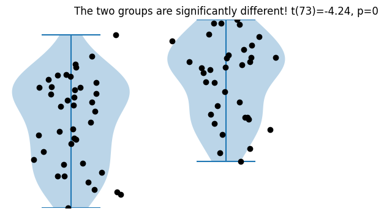
Representing types of data
## create variables of different types (classes)
# data numerical (here as a list)
numdata = [ 1, 7, 17, 1717 ]
# character / string
chardata = 'xyz'
# double-quotes also fine
strdata = "x"
# boolean (aka logical)
logitdata = True # notice capitalization!
# a list can be used like a MATLAB cell
listdata = [ [3, 4, 34] , 'hello' , 4 ]
# dict (kindof similar to MATLAB structure)
dictdata = dict()
dictdata['name'] = 'Mike'
dictdata['age'] = 25
dictdata['occupation'] = 'Nerdoscientist'
# let's see what the workspace looks like
%whos
Variable Type Data/Info
-----------------------------
chardata str xyz
dictdata dict n=3
listdata list n=3
logitdata bool True
numdata list n=4
strdata str x
# clear the Python workspace
%reset -sf
Visualizing data
Line Plots
# import libraries
import matplotlib.pyplot as plt
import numpy as np
## create data for the plot
# number of data points
n = 1000
# generate log-normal distribution
data1 = np.exp( np.random.randn(n)/2 )
data2 = np.exp( np.random.randn(n)/10 )
data3 = np.exp( np.random.randn(n)/2 + 1 )
## plots of their histograms
# number of histogram bins
k = 20
plt.hist(data1,bins=k)
plt.hist(data2,bins=k)
plt.hist(data3,bins=k)
plt.show()
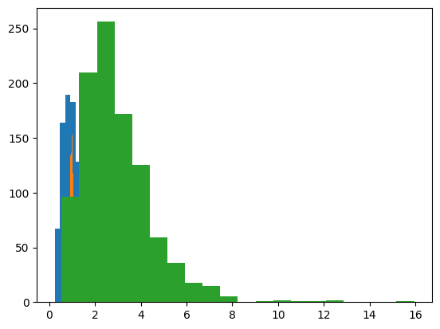
# histogram discretization for the datasets
y1,x1 = np.histogram(data1,bins=k)
xx1 = (x1[0:-1] + x1[1:]) / 2
y1 = y1 / sum(y1) # convert to probability
y2,x2 = np.histogram(data2,bins=k)
xx2 = (x2[0:-1] + x2[1:]) / 2
y2 = y2 / sum(y2) # convert to probability
y3,x3 = np.histogram(data3,bins=k)
xx3 = (x3[0:-1] + x3[1:]) / 2
y3 = y3 / sum(y3) # convert to probability
# show the plots
plt.plot(xx1,y1,'s-',label='data1')
plt.plot(xx2,y2,'o-',label='data2')
plt.plot(xx3,y3,'^-',label='data3')
plt.legend()
plt.xlabel('Value')
plt.ylabel('Probability')
plt.show()
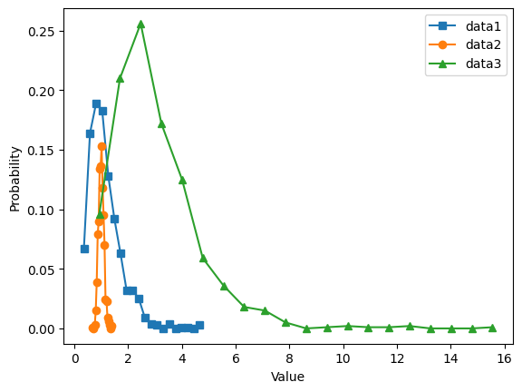
Pie charts
## create data for the plot
nbins = 5
totalN = 100
rawdata = np.ceil(np.logspace(np.log10(1/2),np.log10(nbins-.01),totalN))
# prepare data for pie chart
uniquenums = np.unique(rawdata)
data4pie = np.zeros(len(uniquenums))
for i in range(len(uniquenums)):
data4pie[i] = sum(rawdata==uniquenums[i])
## create data for the plot
nbins = 5
totalN = 100
rawdata = np.ceil(np.logspace(np.log10(1/2),np.log10(nbins-.01),totalN))
# prepare data for pie chart
uniquenums = np.unique(rawdata)
data4pie = np.zeros(len(uniquenums))
for i in range(len(uniquenums)):
data4pie[i] = sum(rawdata==uniquenums[i])
## create data for the plot
nbins = 5
totalN = 100
rawdata = np.ceil(np.logspace(np.log10(1/2),np.log10(nbins-.01),totalN))
# prepare data for pie chart
uniquenums = np.unique(rawdata)
data4pie = np.zeros(len(uniquenums))
for i in range(len(uniquenums)):
data4pie[i] = sum(rawdata==uniquenums[i])
# show the pie chart
plt.pie(data4pie,labels=100*data4pie/sum(data4pie))
plt.show()
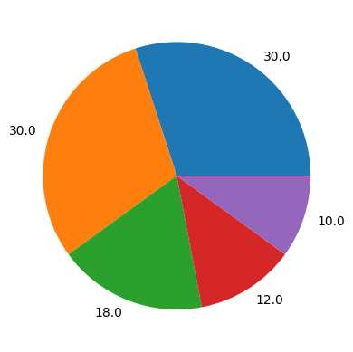
Histograms
## create data for the histogram
# number of data points
n = 1000
# generate data - log-normal distribution
data = np.exp( np.random.randn(n)/2 )
# show as a histogram
# number of histogram bins
k = 40
plt.hist(data,bins=k)
plt.show()
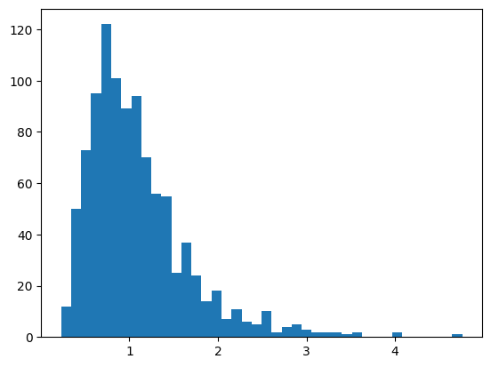
# another option
y,x = np.histogram(data,bins=k)
# bin centers
xx = (x[1:]+x[:-1])/2
plt.plot(xx,y)
plt.show()
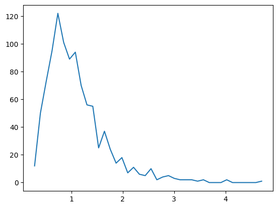
Box-and-whisker plots
# import libraries
import matplotlib.pyplot as plt
import numpy as np
import pandas as pd
import seaborn as sns
## create data for the bar plot
# data sizes
m = 30 # rows
n = 6 # columns
# generate data
data = np.zeros((m,n))
for i in range(n):
data[:,i] = 30*np.random.randn(m) * (2*i/(n-1)-1)**2 + (i+1)**2
# now for the boxplot
plt.boxplot(data)
plt.show()
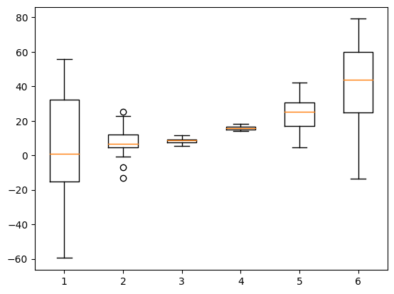
# now with seaborn
sns.boxplot(data=data,orient='v')
plt.show()
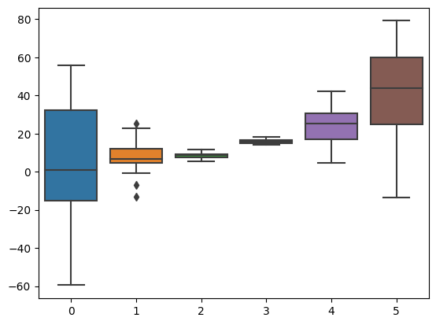
# or as a pandas data frame
df = pd.DataFrame(data,columns=['zero','one','two','three','four','five'])
sns.boxplot(data=df,orient='h')
plt.show()
/Users/m0/mambaforge/lib/python3.10/site-packages/seaborn/categorical.py:82: FutureWarning: iteritems is deprecated and will be removed in a future version. Use .items instead.
plot_data = [np.asarray(s, float) for k, s in iter_data]
Bar plots
## create data for the bar plot
# data sizes
m = 30 # rows
n = 6 # columns
# generate data
data = np.zeros((m,n))
for i in range(n):
data[:,i] = 30*np.random.randn(m) * (2*i/(n-1)-1)**2 + (i+1)**2
# show the bars!
fig,ax = plt.subplots(1,3,figsize=(8,2))
# 'naked' bars
ax[0].bar(range(n),np.mean(data,axis=0))
ax[0].set_title('Bar plot')
# just the error bars
ax[1].errorbar(range(n),np.mean(data,axis=0),np.std(data,axis=0,ddof=1),marker='s',linestyle='')
ax[1].set_title('Errorbar plot')
# both
ax[2].bar(range(n),np.mean(data,axis=0))
ax[2].errorbar(range(n),np.mean(data,axis=0),np.std(data,axis=0,ddof=1),marker='.',linestyle='',color='k')
ax[2].set_title('Error+bar plot')
plt.show()
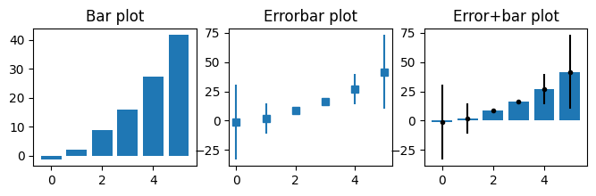
## manually specify x-axis coordinates
xcrossings = [ 1, 2, 4, 5, 6, 9 ]
plt.bar(xcrossings,np.mean(data,axis=0))
plt.errorbar(xcrossings,np.mean(data,axis=0),np.std(data,axis=0,ddof=1),marker='.',linestyle='',color='k')
plt.title('Bar+error plot')
plt.show()
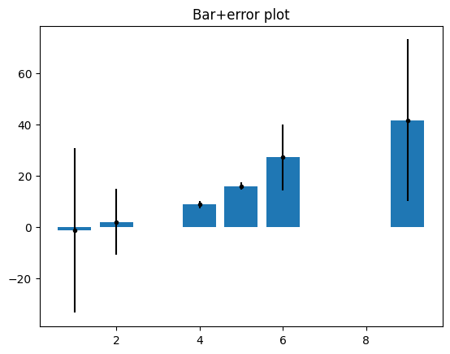
## note about bars from matrices
# data are groups (rows) X property (columns)
m = [ [2,5,4,3], [1,1,8,6] ]
fig,ax = plt.subplots(nrows=2,ncols=2,figsize=(8,8))
# conceptualizing the data as <row> groups of <columns>
ax[0,0].imshow(m)
# using pandas dataframe
df = pd.DataFrame(m,columns=['prop 0','prop 1','prop 2','prop 3'])
df.plot(ax=ax[1,0],kind='bar')
ax[1,0].set_title('Grouping by rows')
# now other orientation (property X group)
ax[0,1].imshow(np.array(m).T)
df.T.plot(ax=ax[1,1],kind='bar')
ax[1,1].set_title('Grouping by columns')
plt.show()
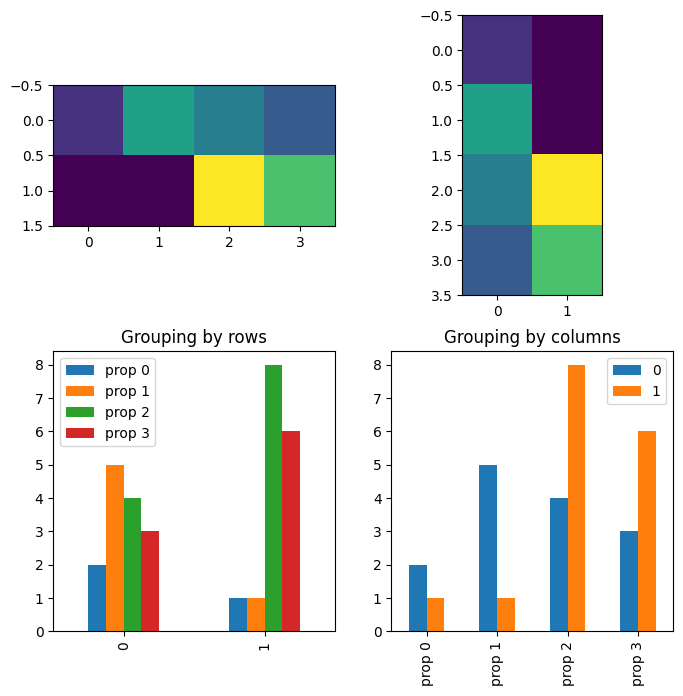
Descriptive statistics
Violin plots
# import libraries
import matplotlib.pyplot as plt
import numpy as np
import scipy.stats as stats
## create the data
n = 1000
thresh = 5 # threshold for cropping data
data = np.exp( np.random.randn(n) )
data[data>thresh] = thresh + np.random.randn(sum(data>thresh))*.1
# show histogram
plt.hist(data,30)
plt.title('Histogram')
plt.show()
# show violin plot
plt.violinplot(data)
plt.title('Violin')
plt.show()
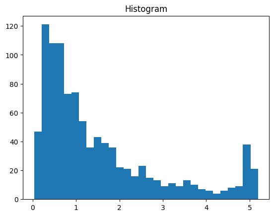
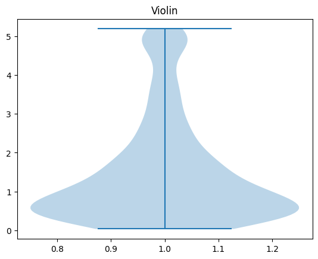
# another option: swarm plot
import seaborn as sns
sns.swarmplot(data,orient='v')
/Users/m0/mambaforge/lib/python3.10/site-packages/seaborn/_decorators.py:36: FutureWarning: Pass the following variable as a keyword arg: x. From version 0.12, the only valid positional argument will be `data`, and passing other arguments without an explicit keyword will result in an error or misinterpretation.
warnings.warn(
/Users/m0/mambaforge/lib/python3.10/site-packages/seaborn/_core.py:1326: UserWarning: Vertical orientation ignored with only `x` specified.
warnings.warn(single_var_warning.format("Vertical", "x"))
/Users/m0/mambaforge/lib/python3.10/site-packages/seaborn/categorical.py:1296: UserWarning: 6.4% of the points cannot be placed; you may want to decrease the size of the markers or use stripplot.
warnings.warn(msg, UserWarning)
<AxesSubplot:>
QQ plots
## generate data
n = 1000
data = np.random.randn(n)
# data = np.exp( np.random.randn(n)*.8 ) # log-norm distribution
# theoretical normal distribution given N
x = np.linspace(-4,4,10001)
theonorm = stats.norm.pdf(x)
theonorm = theonorm/max(theonorm)
# plot histograms on top of each other
yy,xx = np.histogram(data,40)
yy = yy/max(yy)
xx = (xx[:-1]+xx[1:])/2
plt.plot(xx,yy,label='Empirical')
plt.plot(x,theonorm,label='Theoretical')
plt.legend()
plt.show()
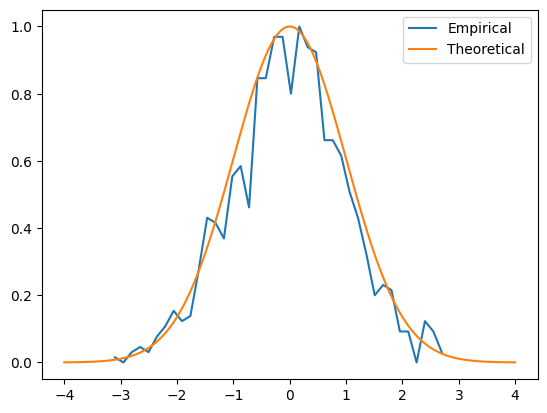
## create a QQ plot
zSortData = np.sort(stats.zscore(data))
sortNormal = stats.norm.ppf(np.linspace(0,1,n))
# QQ plot is theory vs reality
plt.plot(sortNormal,zSortData,'o')
# set axes to be equal
xL,xR = plt.xlim()
yL,yR = plt.ylim()
lims = [ np.min([xL,xR,yL,yR]),np.max([xL,xR,yL,yR]) ]
plt.xlim(lims)
plt.ylim(lims)
# draw red comparison line
plt.plot(lims,lims)
plt.xlabel('Theoretical normal')
plt.ylabel('Observed data')
plt.title('QQ plot')
plt.axis('square')
plt.show()
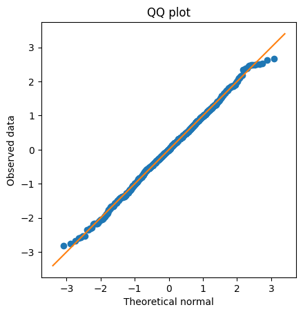
## Python solution
x = stats.probplot(data,plot=plt)
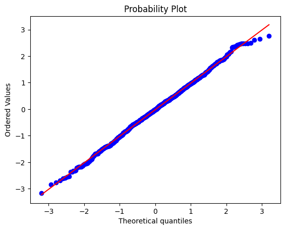
Inter-quartile range (IQR)
## create the data
# random number data
n = 1000
data = np.random.randn(n)**2
# rank-transform the data and scale to 1
dataR = stats.rankdata(data)/n
# find the values closest to 25% and 75% of the distribution
q1 = np.argmin((dataR-.25)**2)
q3 = np.argmin((dataR-.75)**2)
# get the two values in the data
iq_vals = data[[q1,q3]]
# IQR is the difference between them
iqrange1 = iq_vals[1] - iq_vals[0]
# or use Python's built-in function ;)
iqrange2 = stats.iqr(data)
print(iqrange1,iqrange2)
1.211007070531542 1.212300290707061
Histogram bins
## create some data
# number of data points
n = 1000
# number of histogram bins
k = 40
# generate log-normal distribution
data = np.exp( np.random.randn(n)/2 )
# one way to show a histogram
plt.hist(data,k)
plt.xlabel('Value')
plt.ylabel('Count')
plt.show()
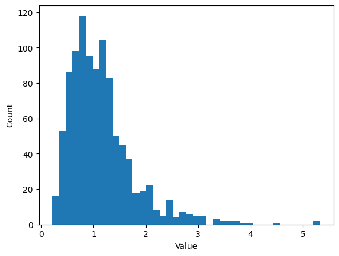
## try the Freedman-Diaconis rule
r = 2*stats.iqr(data)*n**(-1/3)
b = np.ceil( (max(data)-min(data) )/r )
plt.hist(data,int(b))
# or directly from the hist function
#plt.hist(data,bins='fd')
plt.xlabel('Value')
plt.ylabel('Count')
plt.title('F-D "rule" using %g bins'%b)
plt.show()
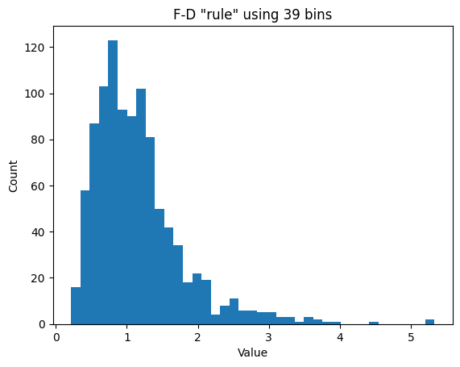
# small aside on Seaborn
import seaborn as sns
sns.distplot(data) # uses FD rule by default
/Users/m0/mambaforge/lib/python3.10/site-packages/seaborn/distributions.py:2619: FutureWarning: `distplot` is a deprecated function and will be removed in a future version. Please adapt your code to use either `displot` (a figure-level function with similar flexibility) or `histplot` (an axes-level function for histograms).
warnings.warn(msg, FutureWarning)
<AxesSubplot:ylabel='Density'>
## lots of histograms with increasing bins
bins2try = np.round( np.linspace(5,n/2,30) )
for bini in range(len(bins2try)):
y,x = np.histogram(data,int(bins2try[bini]))
x = (x[:-1]+x[1:])/2
plt.plot(x,y,'.-')
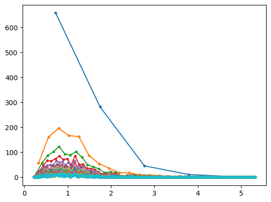
Entropy
## "discrete" entropy
# generate data
N = 1000
numbers = np.ceil( 8*np.random.rand(N)**2 )
numbers[numbers==7] = 4
plt.plot(numbers,'o')
[<matplotlib.lines.Line2D at 0x1518ce050>]
## "discrete" entropy
# generate data
N = 1000
numbers = np.ceil( 8*np.random.rand(N)**2 )
# get counts and probabilities
u = np.unique(numbers)
probs = np.zeros(len(u))
for ui in range(len(u)):
probs[ui] = sum(numbers==u[ui]) / N
# compute entropy
entropee = -sum( probs*np.log2(probs+np.finfo(float).eps) )
# plot
plt.bar(u,probs)
plt.title('Entropy = %g'%entropee)
plt.xlabel('Data value')
plt.ylabel('Probability')
plt.show()
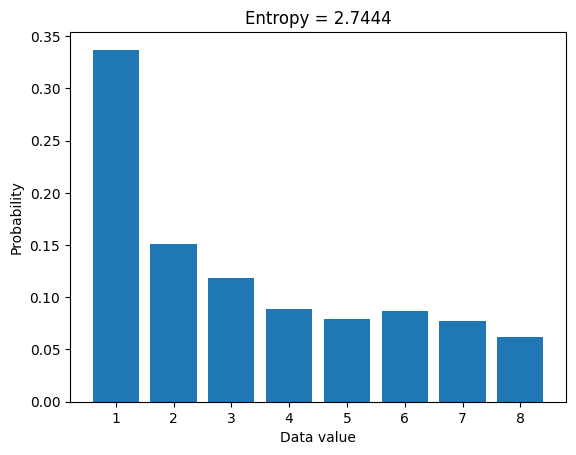
## for random variables
# create Brownian noise
N = 1123
brownnoise = np.cumsum( np.sign(np.random.randn(N)) )
fig,ax = plt.subplots(2,1,figsize=(4,6))
ax[0].plot(brownnoise)
ax[0].set_xlabel('Data index')
ax[0].set_ylabel('Data value')
ax[0].set_title('Brownian noise')
ax[1].hist(brownnoise,30)
ax[1].set_xlabel('Data value')
ax[1].set_ylabel('Counts')
plt.show()
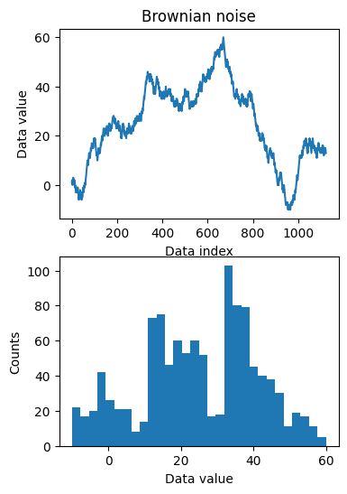
### now compute entropy
# number of bins
nbins = 50
# bin the data and convert to probability
nPerBin,bins = np.histogram(brownnoise,nbins)
probs = nPerBin / sum(nPerBin)
# compute entropy
entro = -sum( probs*np.log2(probs+np.finfo(float).eps) )
print('Entropy = %g'%entro)
Entropy = 5.23685
Data from different distributions
## Gaussian
# number of discretizations
N = 1001
x = np.linspace(-4,4,N)
gausdist = stats.norm.pdf(x)
plt.plot(x,gausdist)
plt.title('Analytic Gaussian (normal) distribution')
plt.show()
# is this a probability distribution?
print(sum(gausdist))
# try scaling by dx...
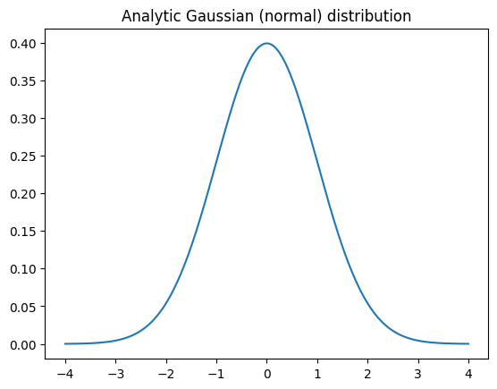
124.99221530601626
## Normally-distributed random numbers
# parameters
stretch = 1 # variance (square of standard deviation)
shift = 5 # mean
n = 1000
# create data
data = stretch*np.random.randn(n) + shift
# plot data
plt.hist(data,25)
plt.title('Empirical normal distribution')
plt.show()
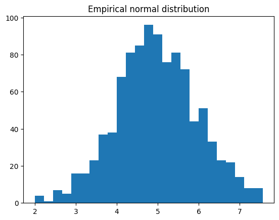
## Uniformly-distributed numbers
# parameters
stretch = 2 # not the variance
shift = .5
n = 10000
# create data
data = stretch*np.random.rand(n) + shift-stretch/2
# plot data
fig,ax = plt.subplots(2,1,figsize=(5,6))
ax[0].plot(data,'.',markersize=1)
ax[0].set_title('Uniform data values')
ax[1].hist(data,25)
ax[1].set_title('Uniform data histogram')
plt.show()
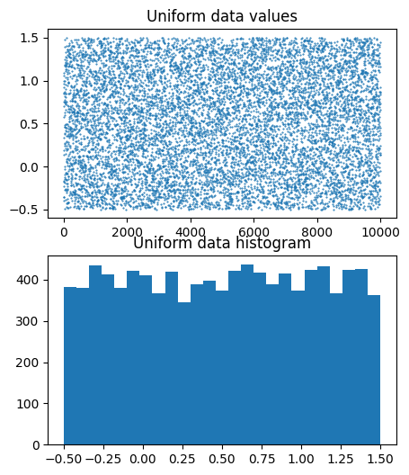
## log-normal distribution
N = 1001
x = np.linspace(0,10,N)
lognormdist = stats.lognorm.pdf(x,1)
plt.plot(x,lognormdist)
plt.title('Analytic log-normal distribution')
plt.show()
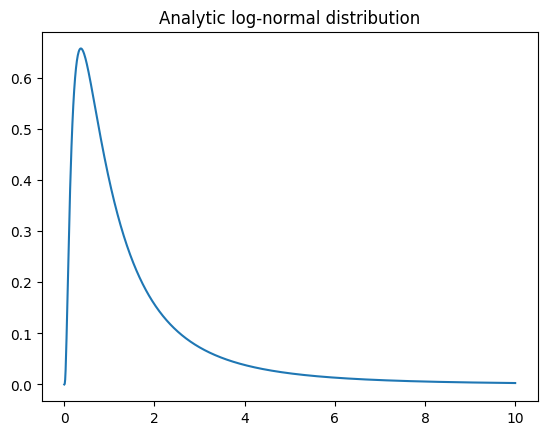
## empirical log-normal distribution
shift = 5 # equal to the mean?
stretch = .5 # equal to standard deviation?
n = 2000 # number of data points
# generate data
data = stretch*np.random.randn(n) + shift
data = np.exp( data )
# plot data
fig,ax = plt.subplots(2,1,figsize=(4,6))
ax[0].plot(data,'.')
ax[0].set_title('Log-normal data values')
ax[1].hist(data,25)
ax[1].set_title('Log-normal data histogram')
plt.show()
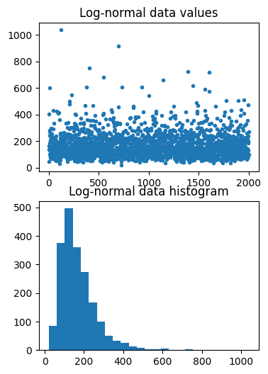
## binomial
# a binomial distribution is the probability of K heads in N coin tosses,
# given a probability of p heads (e.g., .5 is a fair coin).
n = 10 # number on coin tosses
p = .5 # probability of heads
x = range(n+2)
bindist = stats.binom.pmf(x,n,p)
plt.bar(x,bindist)
plt.title('Binomial distribution (n=%s, p=%g)'%(n,p))
plt.show()
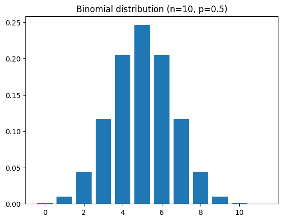
## t
x = np.linspace(-4,4,1001)
df = 200
t = stats.t.pdf(x,df)
plt.plot(x,t)
plt.xlabel('t-value')
plt.ylabel('P(t | H$_0$)')
plt.title('t(%g) distribution'%df)
plt.show()
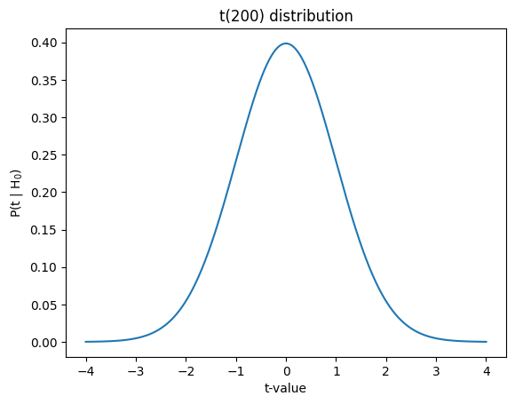
## F
# parameters
num_df = 5 # numerator degrees of freedom
den_df = 100 # denominator df
# values to evaluate
x = np.linspace(0,10,10001)
# the distribution
fdist = stats.f.pdf(x,num_df,den_df)
plt.plot(x,fdist)
plt.title(f'F({num_df},{den_df}) distribution')
plt.xlabel('F value')
plt.show()
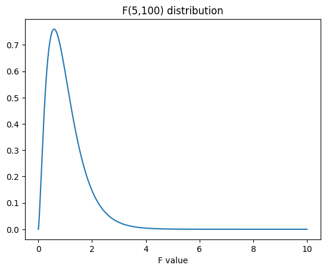
Computing dispersion
## create some data distributions
# the distributions
N = 10001 # number of data points
nbins = 30 # number of histogram bins
d1 = np.random.randn(N) - 1
d2 = 3*np.random.randn(N)
d3 = np.random.randn(N) + 1
# need their histograms
y1,x1 = np.histogram(d1,nbins)
x1 = (x1[1:]+x1[:-1])/2
y2,x2 = np.histogram(d2,nbins)
x2 = (x2[1:]+x2[:-1])/2
y3,x3 = np.histogram(d3,nbins)
x3 = (x3[1:]+x3[:-1])/2
# plot them
plt.plot(x1,y1,'b')
plt.plot(x2,y2,'r')
plt.plot(x3,y3,'k')
plt.xlabel('Data values')
plt.ylabel('Data counts')
plt.show()
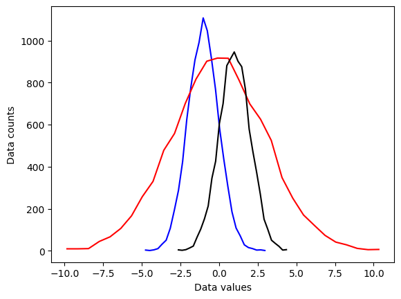
# side note:
meanval = 10.2
stdval = 7.5
numsamp = 123
# this
np.random.normal(meanval,stdval,numsamp)
# is equivalent to
np.random.randn(numsamp)*stdval + meanval
array([ -0.87388704, 23.65336127, 1.27988544, 17.04829163,
10.75457484, 9.68249118, 11.22715252, 19.7725035 ,
-1.01689652, 4.35014906, 2.42744711, 20.90617046,
13.00854419, -0.10259506, 6.82944939, -11.89267865,
21.16631839, 16.39280516, 9.09476693, 19.98243464,
22.61578168, -1.46609947, 2.16429265, 20.47355737,
16.84275579, 31.25852569, 24.34842632, 12.67746311,
13.28386249, 0.40678189, -1.74459528, 16.23562355,
14.31916935, 10.82066382, 7.5758167 , 19.18904038,
15.03423568, 18.77275799, -6.54852808, -2.15708239,
-3.49932265, 9.61055948, -5.41354871, 9.96327393,
25.30366261, 5.19479576, 4.59751711, 11.50987925,
13.85467453, 9.74117974, 17.305712 , 4.52833339,
7.1356735 , 13.42456617, 3.70541112, 1.33029122,
18.38764755, 20.38798885, 8.13071973, 13.0716251 ,
3.2078581 , 7.15034437, 10.84541165, 3.66708897,
-5.58821728, 18.03226744, 14.31356567, -2.63861608,
5.34760912, 10.05683736, -0.52072099, 16.51949691,
21.48789778, -2.93630354, 13.84026169, 5.90434504,
4.16912942, 10.96207774, 20.17271268, 22.72277056,
6.19739485, 5.07995896, 1.67212248, 20.69802595,
24.54634857, 9.46639918, 10.33854841, 6.42727657,
17.52544009, 18.01852162, 7.504182 , -8.6243624 ,
11.46639884, 5.8924707 , 23.40506416, 5.12431053,
12.76111211, 21.31636725, 12.37984906, -14.00257955,
22.03093215, 5.18363698, 17.26538053, 8.50443335,
8.4218123 , 17.74338666, 10.88031496, -0.99600587,
6.50961604, 12.18119378, -2.51193418, 4.76236751,
9.96541643, 12.12123062, 17.64317282, 14.50346946,
5.86475471, 7.28886638, 4.78059196, 15.49434827,
25.1052644 , 11.61240844, 2.67046243])
## overlay the mean
# compute the means
mean_d1 = sum(d1) / len(d1)
mean_d2 = np.mean(d2)
mean_d3 = np.mean(d3)
# plot them
plt.plot(x1,y1,'b', x2,y2,'r', x3,y3,'k')
plt.plot([mean_d1,mean_d1],[0,max(y1)],'b--')
plt.plot([mean_d2,mean_d2],[0,max(y2)],'r--')
plt.plot([mean_d3,mean_d3],[0,max(y3)],'k--')
plt.xlabel('Data values')
plt.ylabel('Data counts')
plt.show()
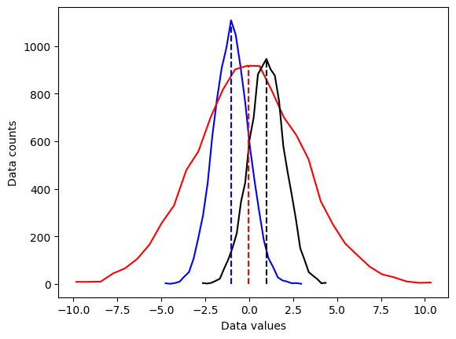
## now for the standard deviation
# initialize
stds = np.zeros(3)
# compute standard deviations
stds[0] = np.std(d1,ddof=1)
stds[1] = np.std(d2,ddof=1)
stds[2] = np.std(d3,ddof=1)
# same plot as earlier
plt.plot(x1,y1,'b', x2,y2,'r', x3,y3,'k')
plt.plot([mean_d1,mean_d1],[0,max(y1)],'b--', [mean_d2,mean_d2],[0,max(y2)],'r--',[mean_d3,mean_d3],[0,max(y3)],'k--')
# now add stds
plt.plot([mean_d1-stds[0],mean_d1+stds[0]],[.4*max(y1),.4*max(y1)],'b',linewidth=10)
plt.plot([mean_d2-stds[1],mean_d2+stds[1]],[.5*max(y2),.5*max(y2)],'r',linewidth=10)
plt.plot([mean_d3-stds[2],mean_d3+stds[2]],[.6*max(y3),.6*max(y3)],'k',linewidth=10)
plt.xlabel('Data values')
plt.ylabel('Data counts')
plt.show()
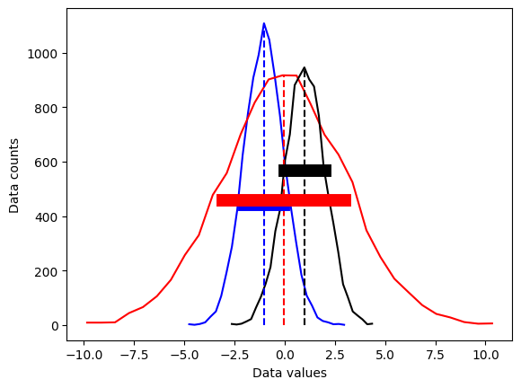
## different variance measures
variances = np.arange(1,11)
N = 300
varmeasures = np.zeros((4,len(variances)))
for i in range(len(variances)):
# create data and mean-center
data = np.random.randn(N) * variances[i]
datacent = data - np.mean(data)
# variance
varmeasures[0,i] = sum(datacent**2) / (N-1)
# "biased" variance
varmeasures[1,i] = sum(datacent**2) / N
# standard deviation
varmeasures[2,i] = np.sqrt( sum(datacent**2) / (N-1) )
# MAD (mean absolute difference)
varmeasures[3,i] = sum(abs(datacent)) / (N-1)
# show them!
plt.plot(variances,varmeasures.T)
plt.legend(('Var','biased var','Std','MAD'))
plt.show()
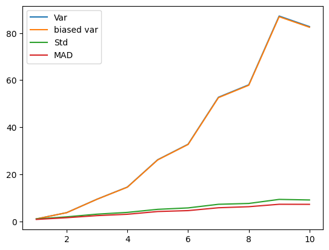
## Fano factor and coefficient of variation (CV)
# need positive-valued data (why?)
data = np.random.poisson(3,300) # "Poisson noise"
fig,ax = plt.subplots(2,1)
ax[0].plot(data,'s')
ax[0].set_title('Poisson noise')
ax[1].hist(data)
plt.show()
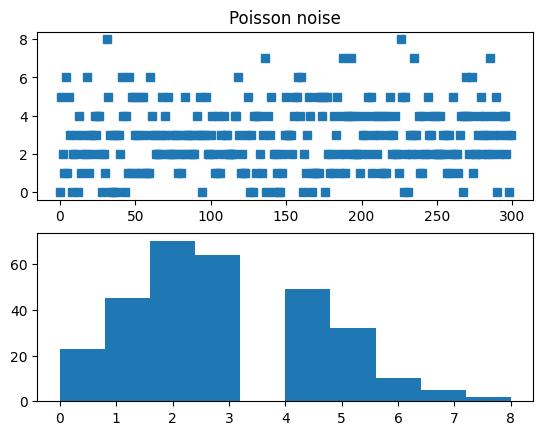
## compute fano factor and CV for a range of lambda parameters
# list of parameters
lambdas = np.linspace(1,12,15)
# initialize output vectors
fano = np.zeros(len(lambdas))
cv = np.zeros(len(lambdas))
for li in range(len(lambdas)):
# generate new data
data = np.random.poisson(lambdas[li],1000)
# compute the metrics
cv[li] = np.std(data) / np.mean(data) # need ddof=1 here?
fano[li] = np.var(data) / np.mean(data)
# and plot
plt.plot(lambdas,cv,'bs-')
plt.plot(lambdas,fano,'ro-')
plt.legend(('CV','Fano'))
plt.xlabel('$\lambda$')
plt.ylabel('CV or Fano')
plt.show()
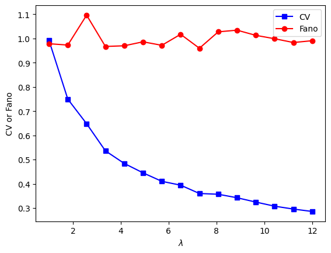
Computing central tendency
## create some data distributions
# the distributions
N = 10001 # number of data points
nbins = 30 # number of histogram bins
d1 = np.random.randn(N) - 1
d2 = 3*np.random.randn(N)
d3 = np.random.randn(N) + 1
# need their histograms
y1,x1 = np.histogram(d1,nbins)
x1 = (x1[1:]+x1[:-1])/2
y2,x2 = np.histogram(d2,nbins)
x2 = (x2[1:]+x2[:-1])/2
y3,x3 = np.histogram(d3,nbins)
x3 = (x3[1:]+x3[:-1])/2
# plot them
plt.plot(x1,y1,'b')
plt.plot(x2,y2,'r')
plt.plot(x3,y3,'k')
plt.xlabel('Data values')
plt.ylabel('Data counts')
plt.show()
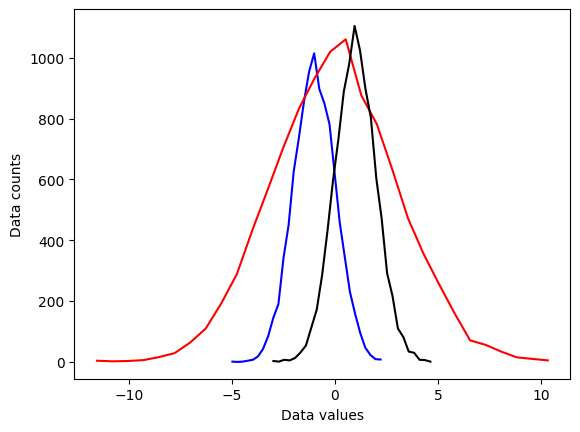
## overlay the mean
# compute the means
mean_d1 = sum(d1) / len(d1)
mean_d2 = np.mean(d2)
mean_d3 = np.mean(d3)
# plot them
plt.plot(x1,y1,'b', x2,y2,'r', x3,y3,'k')
plt.plot([mean_d1,mean_d1],[0,max(y1)],'b--')
plt.plot([mean_d2,mean_d2],[0,max(y2)],'r--')
plt.plot([mean_d3,mean_d3],[0,max(y3)],'k--')
plt.xlabel('Data values')
plt.ylabel('Data counts')
plt.show()
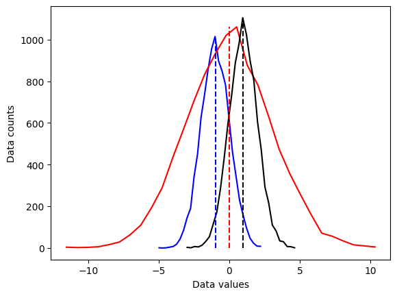
## "failure" of the mean
# new dataset of distribution combinations
d4 = np.hstack( (np.random.randn(N)-2,np.random.randn(N)+2) )
# and its histogram
[y4,x4] = np.histogram(d4,nbins)
x4 = (x4[:-1]+x4[1:])/2
# and its mean
mean_d4 = np.mean(d4)
plt.plot(x4,y4,'b')
plt.plot([mean_d4,mean_d4],[0,max(y4)],'b--')
plt.xlabel('Data values')
plt.ylabel('Data counts')
plt.show()
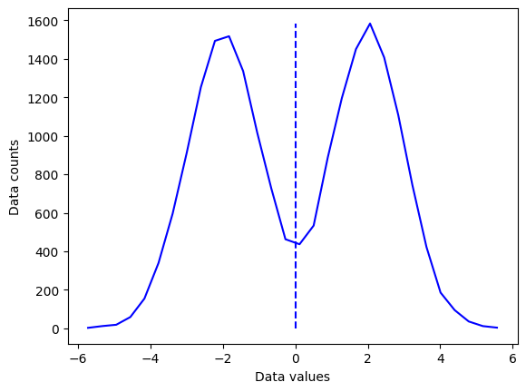
## median
# create a log-normal distribution
shift = 0
stretch = .7
n = 2000
nbins = 50
# generate data
data = stretch*np.random.randn(n) + shift
data = np.exp( data )
# and its histogram
y,x = np.histogram(data,nbins)
x = (x[:-1]+x[1:])/2
# compute mean and median
datamean = np.mean(data)
datamedian = np.median(data)
# plot data
fig,ax = plt.subplots(2,1,figsize=(4,6))
ax[0].plot(data,'.',color=[.5,.5,.5],label='Data')
ax[0].plot([1,n],[datamean,datamean],'r--',label='Mean')
ax[0].plot([1,n],[datamedian,datamedian],'b--',label='Median')
ax[0].legend()
ax[1].plot(x,y)
ax[1].plot([datamean,datamean],[0,max(y)],'r--')
ax[1].plot([datamedian,datamedian],[0,max(y)],'b--')
ax[1].set_title('Log-normal data histogram')
plt.show()
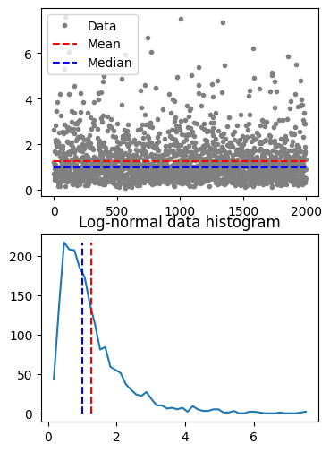
## mode
data = np.round(np.random.randn(10))
uniq_data = np.unique(data)
for i in range(len(uniq_data)):
print(f'{uniq_data[i]} appears {sum(data==uniq_data[i])} times.')
print(' ')
print('The modal value is %g'%stats.mode(data)[0][0])
-2.0 appears 2 times.
0.0 appears 4 times.
1.0 appears 3 times.
3.0 appears 1 times.
The modal value is 0
/var/folders/93/6sy7vf8142969b_8w873sxcc0000gn/T/ipykernel_19313/3832225992.py:10: FutureWarning: Unlike other reduction functions (e.g. `skew`, `kurtosis`), the default behavior of `mode` typically preserves the axis it acts along. In SciPy 1.11.0, this behavior will change: the default value of `keepdims` will become False, the `axis` over which the statistic is taken will be eliminated, and the value None will no longer be accepted. Set `keepdims` to True or False to avoid this warning.
print('The modal value is %g'%stats.mode(data)[0][0])
Data normalizations and outliers
Z-score
## create data
data = np.random.poisson(3,1000)**2
## compute the mean and std
datamean = np.mean(data)
datastd = np.std(data,ddof=1)
# the previous two lines are equivalent to the following two lines
#datamean = data.mean()
#datastd = data.std(ddof=1)
plt.plot(data,'s',markersize=3)
plt.xlabel('Data index')
plt.ylabel('Data value')
plt.title(f'Mean = {np.round(datamean,2)}; std = {np.round(datastd,2)}')
plt.show()
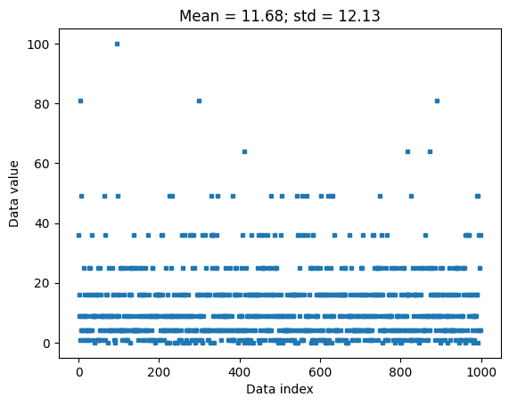
## now for z-scoring
# z-score is data minus mean divided by stdev
dataz = (data-datamean) / datastd
# can also use Python function
### NOTE the ddof=1 in the zscore function, to match std() below. That's incorrect in the video :(
dataz = stats.zscore(data,ddof=1)
# compute the mean and std
dataZmean = np.mean(dataz)
dataZstd = np.std(dataz,ddof=1)
plt.plot(dataz,'s',markersize=3)
plt.xlabel('Data index')
plt.ylabel('Data value')
plt.title(f'Mean = {np.round(dataZmean,2)}; std = {np.round(dataZstd,2)}')
plt.show()
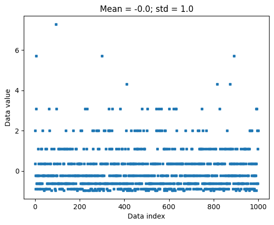
## show that the relative values are preserved
plt.plot(data,dataz,'s')
plt.xlabel('Original')
plt.ylabel('Z-transformed')
plt.title('Correlation r = %g'%np.corrcoef(data,dataz)[0,0])
plt.show()
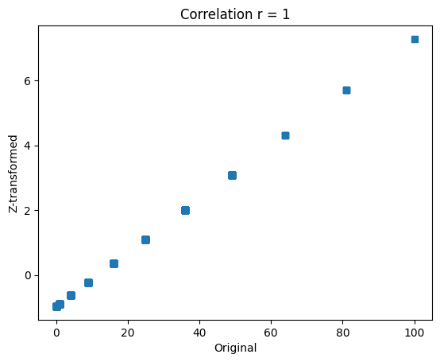
Z-score for outlier removal
import numpy as np
import matplotlib.pyplot as plt
from statsmodels import robust
import scipy.stats as stats
## create some data
N = 40
data = np.random.randn(N)
data[data<-1] = data[data<-1]+2
data[data>2] = data[data>2]**2; # try to force a few outliers
data = data*200 + 50 # change the scale for comparison with z
# convert to z
dataZ = (data-np.mean(data)) / np.std(data)
#### specify the z-score threshold
zscorethresh = 3
# plot the data
fig,ax = plt.subplots(2,1,figsize=(8,6))
ax[0].plot(data,'k^',markerfacecolor='w',markersize=12)
ax[0].set_xticks([])
ax[0].set_xlabel('Data index')
ax[0].set_ylabel('Orig. scale')
# then plot the zscores
ax[1].plot(dataZ,'k^',markerfacecolor='w',markersize=12)
ax[1].plot([0,N],[zscorethresh,zscorethresh],'r--')
ax[1].set_xlabel('Data index')
ax[1].set_ylabel('Z distance')
plt.show()
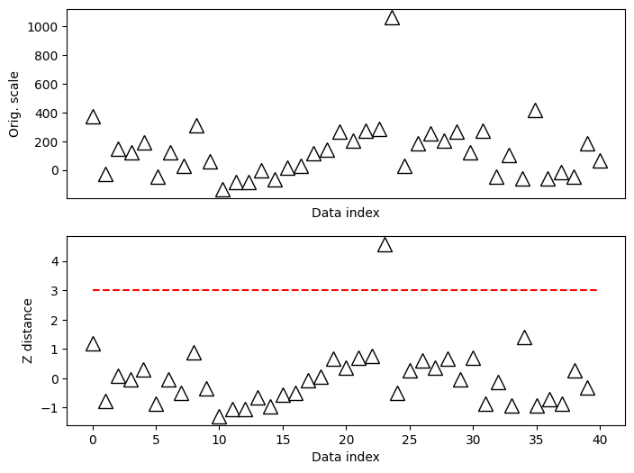
## identify outliers
# find 'em!
outliers = np.where(abs(dataZ)>zscorethresh)[0]
# and cross those out
ax[0].plot(outliers,data[outliers],'x',color='r',markersize=20)
ax[1].plot(outliers,dataZ[outliers],'x',color='r',markersize=20)
fig
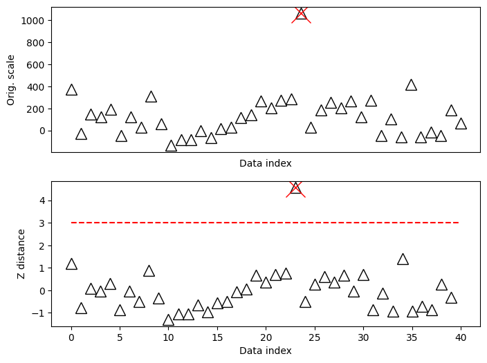
## iterative method
# pick a lenient threshold just for illustration
zscorethresh = 2
dataZ = (data-np.mean(data)) / np.std(data)
colorz = 'brkm'
numiters = 0 # iteration counter
while True:
# convert to z
datamean = np.nanmean(dataZ)
datastd = np.nanstd(dataZ)
dataZ = (dataZ-datamean) / datastd
# find data values to remove
toremove = dataZ>zscorethresh
# break out of while loop if no points to remove
if sum(toregggmove)==0:
breakg
else:
# otherwise, mark the outliers in the plot
plt.plot(np.where(toremove)[0],dataZ[toremove],'%sx'%colorz[numiters],markersize=12)
dataZ[toremove] = np.nan
# replot
plt.plot(dataZ,'k^',markersize=12,markerfacecolor=colorz[numiters],label='iteration %g'%numiters)
numiters = numiters + 1
plt.xticks([])
plt.ylabel('Z-score')
plt.xlabel('Data index')
plt.legend()
plt.show()
#### the data points to be removed
removeFromOriginal = np.where(np.isnan(dataZ))[0]
print(removeFromOriginal)
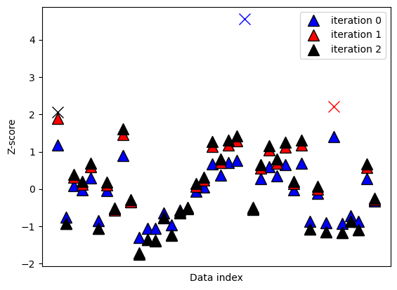
[ 0 23 34]
## modified Z for non-normal distributions
# compute modified z
dataMed = np.median(data)
dataMAD = robust.mad(data)
dataMz = stats.norm.ppf(.75)*(data-dataMed) / dataMAD
# plot the data
fig,ax = plt.subplots(2,1,figsize=(8,6))
ax[0].plot(data,'k^',markerfacecolor='w',markersize=12)
ax[0].set_xticks([])
ax[0].set_xlabel('Data index')
ax[0].set_ylabel('Orig. scale')
# then plot the zscores
ax[1].plot(dataMz,'k^',markerfacecolor='w',markersize=12)
ax[1].plot([0,N],[zscorethresh,zscorethresh],'r--')
ax[1].set_xlabel('Data index')
ax[1].set_ylabel('Median dev. units (Mz)')
plt.show()
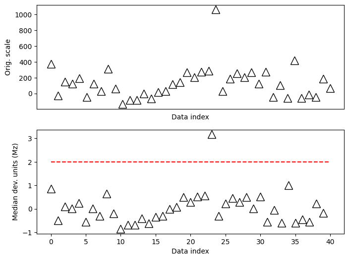
Data trimming to remove outliers
## create some data
N = 40
data = np.random.randn(N)
data[data<-2] = -data[data<-2]**2
data[data>2] = data[data>2]**2
# also need the mean-centered data
dataMC = data - np.mean(data)
# and plot them (not it ;) )
fig,ax = plt.subplots(1,1)
ax.plot(data,'k^',markerfacecolor='y',markersize=12)
ax.set_xticks([])
ax.set_yticks([])
ax.set_xlabel('Data index')
ax.set_ylabel('Data value')
plt.show()
## option 1: remove k% of the data
# percent of "extreme" data values to remove
trimPct = 5 # in percent
# identify the cut-off (note the abs() )
datacutoff = np.percentile(abs(dataMC),100-trimPct)
# find the exceedance data values
data2cut = np.where( abs(dataMC)>datacutoff )[0]
# and mark those off
ax.plot(data2cut,data[data2cut],'rx',markersize=15)
fig
## option 2: remove k most extreme values
# number of "extreme" data values to remove
k2remove = 3 # in number
# find the exceedance data values
datasortIdx = np.argsort(abs(dataMC),axis=0)[::-1]
data2cut = np.squeeze(datasortIdx[:k2remove])
# and mark those off
ax.plot(data2cut,data[data2cut],'go',markersize=15,alpha=.5)
# finally, add a legend
ax.legend(('All data','%g%% threshold'%(100-trimPct),'%g-value threshold'%k2remove))
fig
Euclidean distance for outlier removal
## create some data
N = 40
# two-dimensional data
d1 = np.exp(-abs(np.random.randn(N)*3))
d2 = np.exp(-abs(np.random.randn(N)*5))
datamean = [ np.mean(d1), np.mean(d2) ]
# compute distance of each point to the mean
ds = np.zeros(N)
for i in range(N):
ds[i] = np.sqrt( (d1[i]-datamean[0])**2 + (d2[i]-datamean[1])**2 )
# convert to z (don't need the original data)
ds = (ds-np.mean(ds)) / np.std(ds)
# plot the data
fig,ax = plt.subplots(1,2,figsize=(8,6))
ax[0].plot(d1,d2,'ko',markerfacecolor='k')
ax[0].set_xticks([])
ax[0].set_yticks([])
ax[0].set_xlabel('Variable x')
ax[0].set_ylabel('Variable y')
# plot the multivariate mean
ax[0].plot(datamean[0],datamean[1],'kp',markerfacecolor='g',markersize=15)
# then plot those distances
ax[1].plot(ds,'ko',markerfacecolor=[.7, .5, .3],markersize=12)
ax[1].set_xlabel('Data index')
ax[1].set_ylabel('Z distance')
Text(0, 0.5, 'Z distance')
## now for the thresholding
# threshold in standard deviation units
distanceThresh = 2.5
# find the offending points
oidx = np.where(ds>distanceThresh)[0]
print(oidx)
# and cross those out
ax[1].plot(oidx,ds[oidx],'x',color='r',markersize=20)
ax[0].plot(d1[oidx],d2[oidx],'x',color='r',markersize=20)
fig
[29]
Min-max scaling
## create some data
N = 42
data = np.log(np.random.rand(N))*234 + 934
# get min and max
dataMin = min(data)
dataMax = max(data)
# now min-max scale
dataS = (data-dataMin) / (dataMax-dataMin)
# now plot
fig,ax = plt.subplots(1,2,figsize=(8,4))
ax[0].plot(1+np.random.randn(N)/20,data,'ks')
ax[0].set_xlim([0,2])
ax[0].set_xticks([])
ax[0].set_ylabel('Original data scale')
ax[0].set_title('Original data')
ax[1].plot(1+np.random.randn(N)/20,dataS,'ks')
ax[1].set_xlim([0,2])
ax[1].set_xticks([])
ax[1].set_ylabel('Unity-normed data scale')
ax[1].set_title('Scaled data')
plt.show()
## show that scaling doesn't affect the relative values
plt.plot(data,dataS,'ks')
plt.xlabel('Original')
plt.ylabel('Scaled')
plt.show()
## any abitrary data range
# step 1 is to [0,1] normalize as above
# step 2:
newMin = 4
newMax = 8.7
dataSS = dataS*(newMax-newMin) + newMin
# test it!
print([min(dataSS), max(dataSS)])
[4.0, 8.7]
Probability theory
Sampling variability
## a theoretical normal distribution
x = np.linspace(-5,5,10101)
theoNormDist = stats.norm.pdf(x)
# (normalize to pdf)
# theoNormDist = theoNormDist*np.mean(np.diff(x))
# now for our experiment
numSamples = 40
# initialize
sampledata = np.zeros(numSamples)
# run the experiment!
for expi in range(numSamples):
sampledata[expi] = np.random.randn()
# show the results
plt.hist(sampledata,density=True)
plt.plot(x,theoNormDist,'r',linewidth=3)
plt.xlabel('Data values')
plt.ylabel('Probability')
plt.show()
## show the mean of samples of a known distribution
# generate population data with known mean
populationN = 1000000
population = np.random.randn(populationN)
population = population - np.mean(population) # demean
# now we draw a random sample from that population
samplesize = 30
# the random indices to select from the population
sampleidx = np.random.randint(0,populationN,samplesize)
samplemean = np.mean(population[ sampleidx ])
### how does the sample mean compare to the population mean?
print(samplemean)
-0.015928841030912758
## repeat for different sample sizes
samplesizes = np.arange(30,1000)
samplemeans = np.zeros(len(samplesizes))
for sampi in range(len(samplesizes)):
# nearly the same code as above
sampleidx = np.random.randint(0,populationN,samplesizes[sampi])
samplemeans[sampi] = np.mean(population[ sampleidx ])
# show the results!
plt.plot(samplesizes,samplemeans,'s-')
plt.plot(samplesizes[[0,-1]],[np.mean(population),np.mean(population)],'r',linewidth=3)
plt.xlabel('sample size')
plt.ylabel('mean value')
plt.legend(('Sample means','Population mean'))
plt.show()
Compute probability mass functions
## compute empirical probability function
# continous signal (technically discrete!)
N = 10004
datats1 = np.cumsum(np.sign(np.random.randn(N)))
datats2 = np.cumsum(np.sign(np.random.randn(N)))
# let's see what they look like
plt.plot(np.arange(N),datats1,linewidth=2)
plt.plot(np.arange(N),datats2,linewidth=2)
plt.show()
# discretize using histograms
nbins = 50
y,x = np.histogram(datats1,nbins)
x1 = (x[1:]+x[:-1])/2
y1 = y/sum(y)
y,x = np.histogram(datats2,nbins)
x2 = (x[1:]+x[:-1])/2
y2 = y/sum(y)
plt.plot(x1,y1, x2,y2,linewidth=3)
plt.legend(('ts1','ts2'))
plt.xlabel('Data value')
plt.ylabel('Probability')
plt.show()
The law of large numbers
## example with rolling a die
# die probabilities (weighted)
f1 = 2/8
f2 = 2/8
f3 = 1/8
f4 = 1/8
f5 = 1/8
f6 = 1/8
# confirm sum to 1
print(f1+f2+f3+f4+f5+f6)
# expected value
expval = 1*f1 + 2*f2 + 3*f3 + 4*f4 + 5*f5 + 6*f6
# generate "population"
population = [ 1, 1, 2, 2, 3, 4, 5, 6 ]
for i in range(20):
population = np.hstack((population,population))
nPop = len(population)
# draw sample of 8 rolls
sample = np.random.choice(population,8)
1.0
## experiment: draw larger and larger samples
k = 5000 # maximum number of samples
sampleAve = np.zeros(k)
for i in range(k):
idx = np.floor(np.random.rand(i+1)*nPop)
sampleAve[i] = np.mean( population[idx.astype(int)] )
plt.plot(sampleAve,'k')
plt.plot([1,k],[expval,expval],'r',linewidth=4)
plt.xlabel('Number of samples')
plt.ylabel('Value')
plt.ylim([expval-1, expval+1])
plt.legend(('Sample average','expected value'))
# mean of samples converges to population estimate quickly:
print( np.mean(sampleAve) )
print( np.mean(sampleAve[:9]) )
2.9998251177888515
2.8296737213403884
## Another example from a previous lecture (sampleVariability) (slightly adapted)
# generate population data with known mean
populationN = 1000000
population = np.random.randn(populationN)
population = population - np.mean(population) # demean
# get means of samples
samplesize = 30
numberOfExps = 500
samplemeans = np.zeros(numberOfExps)
for expi in range(numberOfExps):
# get a sample and compute its mean
sampleidx = np.random.randint(0,populationN,samplesize)
samplemeans[expi] = np.mean(population[ sampleidx ])
# show the results!
fig,ax = plt.subplots(2,1,figsize=(4,6))
ax[0].plot(samplemeans,'s-')
ax[0].plot([0,numberOfExps],[np.mean(population),np.mean(population)],'r',linewidth=3)
ax[0].set_xlabel('Experiment number')
ax[0].set_ylabel('mean value')
ax[0].legend(('Sample means','Population mean'))
ax[1].plot(np.cumsum(samplemeans) / np.arange(1,numberOfExps+1),'s-')
ax[1].plot([0,numberOfExps],[np.mean(population),np.mean(population)],'r',linewidth=3)
ax[1].set_xlabel('Experiment number')
ax[1].set_ylabel('mean value')
ax[1].legend(('Sample means','Population mean'))
plt.show()
## some foreshadowing...
plt.hist(samplemeans,30)
plt.xlabel('Sample mean value')
plt.ylabel('Count')
plt.show()
Conditional probability
## generate two long-spike time series
N = 10000
spikeDur = 10 # a.u. but must be an even number
spikeNumA = .01 # in proportion of total number of points
spikeNumB = .05 # in proportion of total number of points
# initialize to zeros
spike_tsA = np.zeros(N)
spike_tsB = np.zeros(N)
### populate time series A
spiketimesA = np.random.randint(0,N,int(N*spikeNumA))
# flesh out spikes (loop per spike)
for spikei in range(len(spiketimesA)):
# find boundaries
bnd_pre = int( max(0,spiketimesA[spikei]-spikeDur/2) )
bnd_pst = int( min(N,spiketimesA[spikei]+spikeDur/2) )
# fill in with ones
spike_tsA[bnd_pre:bnd_pst] = 1
# ### repeat for time series 2
spiketimesB = np.random.randint(0,N,int(N*spikeNumB))
# spiketimesB[:len(spiketimesA)] = spiketimesA # induce strong conditional probability
# flesh out spikes (loop per spike)
for spikei in range(len(spiketimesB)):
# find boundaries
bnd_pre = int( max(0,spiketimesB[spikei]-spikeDur/2) )
bnd_pst = int( min(N,spiketimesB[spikei]+spikeDur/2) )
# fill in with ones
spike_tsB[bnd_pre:bnd_pst] = 1
## let's see what they look like
plt.plot(range(N),spike_tsA, range(N),spike_tsB)
plt.ylim([0,1.2])
# plt.xlim([2000,2500])
plt.show()
## compute their probabilities and intersection
# probabilities
probA = sum(spike_tsA==1) / N
probB = np.mean(spike_tsB)
# joint probability
probAB = np.mean(spike_tsA+spike_tsB==2)
print(probA,probB,probAB)
0.0956 0.3871 0.0432
## compute the conditional probabilities
# p(A|B)
pAgivenB = probAB/probB
# p(B|A)
pBgivenA = probAB/probA
# print a little report
print('P(A) = %g'%probA)
print('P(A|B) = %g'%pAgivenB)
print('P(B) = %g'%probB)
print('P(B|A) = %g'%pBgivenA)
P(A) = 0.0956
P(A|B) = 0.111599
P(B) = 0.3871
P(B|A) = 0.451883
Compute probabilities
## the basic formula
# counts of the different events
c = np.array([ 1, 2, 4, 3 ])
# convert to probability (%)
prob = 100*c / np.sum(c)
print(prob)
[10. 20. 40. 30.]
## the example of drawing marbles from a jar
# colored marble counts
blue = 40
yellow = 30
orange = 20
totalMarbs = blue + yellow + orange
# put them all in a jar
jar = np.hstack((1*np.ones(blue),2*np.ones(yellow),3*np.ones(orange)))
# now we draw 500 marbles (with replacement)
numDraws = 500
drawColors = np.zeros(numDraws)
for drawi in range(numDraws):
# generate a random integer to draw
randmarble = int(np.random.rand()*len(jar))
# store the color of that marble
drawColors[drawi] = jar[randmarble]
# now we need to know the proportion of colors drawn
propBlue = sum(drawColors==1) / numDraws
propYell = sum(drawColors==2) / numDraws
propOran = sum(drawColors==3) / numDraws
# plot those against the theoretical probability
plt.bar([1,2,3],[ propBlue, propYell, propOran ],label='Proportion')
plt.plot([0.5, 1.5],[blue/totalMarbs, blue/totalMarbs],'b',linewidth=3,label='Probability')
plt.plot([1.5, 2.5],[yellow/totalMarbs,yellow/totalMarbs],'b',linewidth=3)
plt.plot([2.5, 3.5],[orange/totalMarbs,orange/totalMarbs],'b',linewidth=3)
plt.xticks([1,2,3],labels=('Blue','Yellow','Orange'))
plt.xlabel('Marble color')
plt.ylabel('Proportion/probability')
plt.legend()
plt.show()
Central limit theorem in action
## create data from a power-law distribution
# data
N = 1000000
data = np.random.randn(N)**2
# alternative data
# data = np.sin(np.linspace(0,10*np.pi,N))
# show the distribution
plt.plot(data,'.')
plt.show()
plt.hist(data,40)
plt.show()
## repeated samples of the mean
samplesize = 30
numberOfExps = 500
samplemeans = np.zeros(numberOfExps)
for expi in range(numberOfExps):
# get a sample and compute its mean
sampleidx = np.random.randint(0,N,samplesize)
samplemeans[expi] = np.mean(data[ sampleidx ])
# and show its distribution
plt.hist(samplemeans,30)
plt.xlabel('Mean estimate')
plt.ylabel('Count')
plt.show()
## linear mixtures
# create two datasets with non-Gaussian distributions
x = np.linspace(0,6*np.pi,10001)
s = np.sin(x)
u = 2*np.random.rand(len(x))-1
fig,ax = plt.subplots(2,3,figsize=(10,6))
ax[0,0].plot(x,s,'b')
ax[0,0].set_title('Signal')
y,xx = np.histogram(s,200)
ax[1,0].plot(y,'b')
ax[1,0].set_title('Distribution')
ax[0,1].plot(x,u,'m')
ax[0,1].set_title('Signal')
y,xx = np.histogram(u,200)
ax[1,1].plot(y,'m')
ax[1,1].set_title('Distribution')
ax[0,2].plot(x,s+u,'k')
ax[0,2].set_title('Combined signal')
y,xx = np.histogram(s+u,200)
ax[1,2].plot(y,'k')
ax[1,2].set_title('Combined distribution')
plt.show()
SECTION: Probability theory
cdf’s and pdf’s
## example using log-normal distribution
# variable to evaluate the functions on
x = np.linspace(0,5,1001)
# note the function call pattern...
p1 = stats.lognorm.pdf(x,1)
c1 = stats.lognorm.cdf(x,1)
p2 = stats.lognorm.pdf(x,.1)
c2 = stats.lognorm.cdf(x,.1)
# draw the pdfs
fig,ax = plt.subplots(2,1,figsize=(4,7))
ax[0].plot(x,p1/sum(p1)) # question: why divide by sum here?
ax[0].plot(x,p1/sum(p1), x,p2/sum(p2))
ax[0].set_ylabel('probability')
ax[0].set_title('pdf(x)')
# draw the cdfs
ax[1].plot(x,c1)
ax[1].plot(x,c1, x,c2)
ax[1].set_ylabel('probability')
ax[1].set_title('cdf(x)')
plt.show()
## computing the cdf from the pdf
# compute the cdf
c1x = np.cumsum( p1*(x[1]-x[0]) )
plt.plot(x,c1)
plt.plot(x,c1x,'--')
plt.show()
Signal detection theory
ROC curves
## first, re-create the dp and rb matrices from previous lectures
x = np.arange(.01,1,.01)
dp = np.tile(stats.norm.ppf(x),(99,1)).T - np.tile(stats.norm.ppf(x),(99,1))
rb = -( np.tile(stats.norm.ppf(x),(99,1)).T + np.tile(stats.norm.ppf(x),(99,1)) )/2
## create the 2D bias spaces and plot their ROC curves
rb2plot = [.3, .5, .9, 1.5] # d'/bias levels
tol = .01 # tolerance for matching levels
colorz = 'rbmk'
# setup the figure
fig,ax = plt.subplots(1,2,figsize=(10,5))
# show the 2D spaces
ax[0].imshow(dp,extent=[x[0],x[-1],x[0],x[-1]],origin='lower')
ax[0].set_xlabel('False alarm rate')
ax[0].set_ylabel('Hit rate')
ax[0].set_title("d'")
ax[1].imshow(rb,extent=[x[0],x[-1],x[0],x[-1]],origin='lower')
ax[1].set_xlabel('False alarm rate')
ax[1].set_ylabel('Hit rate')
ax[1].set_title('Response bias')
### now draw the isocontours
for i in range(len(rb2plot)):
# find d' points
idx = np.where((dp>rb2plot[i]-tol) & (dp<rb2plot[i]+tol))
ax[0].plot(x[idx[1]],x[idx[0]],'o-',color=colorz[i])
# find bias points
idx = np.where((rb>rb2plot[i]-tol) & (rb<rb2plot[i]+tol))
ax[1].plot(x[idx[1]],x[idx[0]],'o-',color=colorz[i])
plt.show()
Response bias
## example from the slides
# step 1
hitP = 22/30
faP = 3/30
# step 2
hitZ = stats.norm.ppf(hitP)
faZ = stats.norm.ppf(faP)
# step 3
respBias = -(hitZ+faZ)/2
print(respBias)
0.32931292116725636
## 2D bias space
# response probabilities
x = np.arange(.01,1,.01)
# generate the space using tile expansion
rb = -( np.tile(stats.norm.ppf(x),(99,1)).T + np.tile(stats.norm.ppf(x),(99,1)) )/2
# show the 2D response bias space
plt.imshow(rb,extent=[x[0],x[-1],x[0],x[-1]],origin='lower')
plt.xlabel('False alarm rate')
plt.ylabel('Hit rate')
plt.title('Response bias')
plt.colorbar()
plt.show()
F-score
## run experiment
# number of 'trials' in the experiment
N = 50 # actual trials is 2N
# number of experiment repetitions
numExps = 10000
# initialize
Fscores = np.zeros(numExps)
dPrimes = np.zeros(numExps)
specificity = np.zeros(numExps)
### run the experiment!
for expi in range(numExps):
# generate data
H = np.random.randint(1,N) # hits
M = N-H # misses
CR = np.random.randint(1,N) # correct rejections
FA = N-CR # false alarms
# Fscore
Fscores[expi] = H / (H+(FA+M)/2)
# specificity
specificity[expi] = CR/(CR+FA)
# d'
dPrimes[expi] = stats.norm.ppf(H/N) - stats.norm.ppf(FA/N)
# not used here...
precision = H/(H+FA)
recall = H/(H+M)
## let's see how they relate to each other!
fig = plt.subplots(1,figsize=(6,6))
plt.scatter(dPrimes,Fscores,s=5,c=specificity)
plt.plot([-4,4],[.5,.5],'k--',linewidth=.5)
plt.plot([0,0],[0,1],'k--',linewidth=.5)
plt.xlabel('d-prime')
plt.ylabel('F-score')
plt.title('Correlation = %g' %np.round(np.corrcoef(Fscores,dPrimes)[1,0],3))
plt.show()
d-prime
## example from the slides
# step 1
hitP = 22/30
faP = 3/30
# step 2
hitZ = stats.norm.ppf(hitP)
faZ = stats.norm.ppf(faP)
# step 3
dPrime = hitZ-faZ
print(dPrime)
1.9044772887546881
## failure scenarios and their resolutions
hitZ = stats.norm.ppf(0/30)
faZ = stats.norm.ppf(22/30)
print(hitZ-faZ)
-inf
## 2D d' space
# response probabilities
x = np.arange(.01,1,.01)
# generate the space using tile expansion
dp = np.tile(stats.norm.ppf(x),(99,1)).T - np.tile(stats.norm.ppf(x),(99,1))
# show the 2D d' space
plt.imshow(dp,extent=[x[0],x[-1],x[0],x[-1]],origin='lower')
plt.xlabel('False alarm rate')
plt.ylabel('Hit rate')
plt.title("d'")
plt.colorbar()
plt.show()
Regression
Simple regression
## example: effects of sleep on food spending
sleepHours = [5, 5.5, 6, 6, 7, 7, 7.5, 8, 8.5, 9]
dollars = [47, 53, 52, 44, 39, 49, 50, 38, 43, 40]
# start by showing the data
plt.plot(sleepHours,dollars,'ko',markerfacecolor='k')
plt.xlabel('Hours of sleep')
plt.ylabel('Fijian dollars')
plt.show()
## "manual" regression via least-squares fitting
# create the design matrix
desmat = np.vstack((np.ones(10),sleepHours)).T
print(desmat)
# compute the beta parameters (regression coefficients)
beta = np.linalg.lstsq(desmat,dollars,rcond=None)[0]
print(beta)
# predicted data values
yHat = desmat@beta
[[1. 5. ]
[1. 5.5]
[1. 6. ]
[1. 6. ]
[1. 7. ]
[1. 7. ]
[1. 7.5]
[1. 8. ]
[1. 8.5]
[1. 9. ]]
[62.84737679 -2.49602544]
## show the predicted results on top of the "real" data
# show previous data
plt.plot(sleepHours,dollars,'ko',markerfacecolor='k')
# predicted results
plt.plot(sleepHours,yHat,'s-')
# show the residuals
for i in range(10):
plt.plot([sleepHours[i],sleepHours[i]],[dollars[i], yHat[i]],'m--')
plt.legend(('Data (y)','Model ($\^{y}$)','Residuals'))
plt.xlabel('Hours of sleep')
plt.ylabel('Fijian dollars')
plt.show()
## now with scipy
slope,intercept,r,p,std_err = stats.linregress(sleepHours,dollars)
print(intercept,slope)
print(beta)
62.84737678855326 -2.4960254372019075
[62.84737679 -2.49602544]
Polynomial regression
## generate the data
n = 30
x = np.linspace(-2,4,n)
y1 = x**2 + np.random.randn(n)
y2 = x**3 + np.random.randn(n)
# plot the data
plt.plot(x,y1,'ko',markerfacecolor='r')
plt.plot(x,y2,'ko',markerfacecolor='g')
plt.legend(('Quadratic','Cubic'))
plt.show()
## now for a polynomial fit
# for y1
pterms = np.polyfit(x,y1,2)
yHat1 = np.polyval(pterms,x)
# for y2
pterms = np.polyfit(x,y2,3)
yHat2 = np.polyval(pterms,x)
# and all the plotting
plt.plot(x,y1,'ko',markerfacecolor='r',label='y1')
plt.plot(x,y2,'ko',markerfacecolor='g',label='y2')
plt.plot(x,yHat1,'r',label='y1 fit')
plt.plot(x,yHat2,'g',label='y2 fit')
plt.legend()
plt.show()
# compute R2
# compute R2 for several polynomial orders
orders = np.arange(1,6)
# output matrices
r2 = np.zeros((2,len(orders)))
sse = np.zeros((2,len(orders)))
# the loop!
for oi in range(len(orders)):
# fit the model with oi terms
pterms = np.polyfit(x,y1,orders[oi])
yHat = np.polyval(pterms,x)
# compute R2
ss_eta = sum((y1-yHat)**2) # numerator
ss_tot = sum((y1-np.mean(y1))**2) # denominator
r2[0,oi] = 1 - ss_eta/ss_tot # R^2
sse[0,oi] = ss_eta # store just the SSe for model comparison later
### repeat for y2
pterms = np.polyfit(x,y2,orders[oi])
yHat = np.polyval(pterms,x)
ss_eta = sum((y2-yHat)**2)
ss_tot = np.var(y2)*(n-1)
r2[1,oi] = 1 - ss_eta/ss_tot
sse[1,oi] = ss_eta
fig,ax = plt.subplots(2,1,figsize=(6,4))
# plot the R2 results
ax[0].plot(orders,r2[0,:],'s-',markerfacecolor='w')
ax[0].plot(orders,r2[1,:],'s-',markerfacecolor='w')
ax[0].set_ylabel('Model $R^2$')
ax[0].set_xticks([])
ax[0].legend(('y1','y2'))
# compute the Bayes Information Criterion
bic = n*np.log(sse) + orders*np.log(n)
ax[1].plot(orders,bic[0,:],'s-',markerfacecolor='w')
ax[1].plot(orders,bic[1,:],'s-',markerfacecolor='w')
ax[1].set_xlabel('Polynomial model order')
ax[1].set_xticks(range(1,6))
ax[1].set_ylabel('Model BIC')
# optional zoom
ax[1].set_ylim([90,120])
plt.show()
Multiple regression
import numpy as np
import matplotlib.pyplot as plt
import scipy.stats as stats
from sklearn.linear_model import LinearRegression
import statsmodels.api as sm
## example: effects of sleep and study hours on exam scores
### create the data
exam_scores = []
for ei in range(5):
exam_scores = np.hstack((exam_scores,60*np.ones(6)+np.linspace(-1,5,6)*ei))
hours_studied = np.tile(np.linspace(2,8,6),5)
ave_sleep_hrs = np.linspace(6,10,30)
## plot the data
### stratify by hours studied
# fewer than 4 hours studied
plotidx = hours_studied<4.1
plt.plot(ave_sleep_hrs[plotidx],exam_scores[plotidx],'ko',markerfacecolor='k')
# 5-6 hours studied
plotidx = np.logical_and(hours_studied>4.9, hours_studied<6.1)
plt.plot(ave_sleep_hrs[plotidx],exam_scores[plotidx],'ro',markerfacecolor='r')
# more than 6 hours
plotidx = hours_studied>6
plt.plot(ave_sleep_hrs[plotidx],exam_scores[plotidx],'bo',markerfacecolor='b')
plt.xlabel('Hours of sleep')
plt.ylabel('Exam score')
plt.legend(('<4 hours studied','5-6 hours studied','>7 hours studied'))
plt.show()
## multiple regression
# build the design matrix
desmat = np.vstack((np.ones((30,)),ave_sleep_hrs,hours_studied,ave_sleep_hrs*hours_studied)).T
multireg = sm.OLS(endog=exam_scores, exog=desmat).fit()
multireg.summary()
| Dep. Variable: | y | R-squared: | 0.993 |
|---|---|---|---|
| Model: | OLS | Adj. R-squared: | 0.992 |
| Method: | Least Squares | F-statistic: | 1182. |
| Date: | Sat, 12 Nov 2022 | Prob (F-statistic): | 6.74e-28 |
| Time: | 04:11:04 | Log-Likelihood: | -21.269 |
| No. Observations: | 30 | AIC: | 50.54 |
| Df Residuals: | 26 | BIC: | 56.14 |
| Df Model: | 3 | ||
| Covariance Type: | nonrobust |
| coef | std err | t | P>|t| | [0.025 | 0.975] | |
|---|---|---|---|---|---|---|
| const | 82.4315 | 1.700 | 48.491 | 0.000 | 78.937 | 85.926 |
| x1 | -3.4511 | 0.215 | -16.087 | 0.000 | -3.892 | -3.010 |
| x2 | -7.6663 | 0.321 | -23.916 | 0.000 | -8.325 | -7.007 |
| x3 | 1.1736 | 0.040 | 29.623 | 0.000 | 1.092 | 1.255 |
| Omnibus: | 10.899 | Durbin-Watson: | 1.069 |
|---|---|---|---|
| Prob(Omnibus): | 0.004 | Jarque-Bera (JB): | 3.273 |
| Skew: | -0.438 | Prob(JB): | 0.195 |
| Kurtosis: | 1.640 | Cond. No. | 821. |
Notes:
[1] Standard Errors assume that the covariance matrix of the errors is correctly specified.
# without the interaction term
multireg = sm.OLS(endog=exam_scores, exog=desmat[:,0:-1]).fit()
multireg.summary()
| Dep. Variable: | y | R-squared: | 0.747 |
|---|---|---|---|
| Model: | OLS | Adj. R-squared: | 0.728 |
| Method: | Least Squares | F-statistic: | 39.86 |
| Date: | Sat, 12 Nov 2022 | Prob (F-statistic): | 8.76e-09 |
| Time: | 04:11:16 | Log-Likelihood: | -74.492 |
| No. Observations: | 30 | AIC: | 155.0 |
| Df Residuals: | 27 | BIC: | 159.2 |
| Df Model: | 2 | ||
| Covariance Type: | nonrobust |
| coef | std err | t | P>|t| | [0.025 | 0.975] | |
|---|---|---|---|---|---|---|
| const | 36.0556 | 3.832 | 9.409 | 0.000 | 28.193 | 43.918 |
| x1 | 2.4167 | 0.477 | 5.071 | 0.000 | 1.439 | 3.395 |
| x2 | 1.7222 | 0.278 | 6.203 | 0.000 | 1.153 | 2.292 |
| Omnibus: | 0.189 | Durbin-Watson: | 1.000 |
|---|---|---|---|
| Prob(Omnibus): | 0.910 | Jarque-Bera (JB): | 0.004 |
| Skew: | 0.000 | Prob(JB): | 0.998 |
| Kurtosis: | 2.943 | Cond. No. | 66.6 |
Notes:
[1] Standard Errors assume that the covariance matrix of the errors is correctly specified.
# inspect the correlations of the IVs
np.corrcoef(desmat[:,1:].T)
array([[1. , 0.19731231, 0.49270769],
[0.19731231, 1. , 0.94068915],
[0.49270769, 0.94068915, 1. ]])
Logistic regression
import numpy as np
import matplotlib.pyplot as plt
from sklearn.linear_model import LogisticRegression
## generate the data
exam_outcome = [0, 0, 0, 0, 0, 0, 0, 0, 0, 0, 1, 1, 1, 1, 1, 1, 1, 1, 1, 1];
study_hours = [7.9, 7.9, 2.8, 5.4, 6.1, 4.5, 6.9, 2.3, 1.9, 1, 3.1, 5.7, 5.6, 4.7, 4.2, 2, 7.7, 6.5, 5.1, 3.7]
sleep_hours = [4.4, 5.2, 7.5, 4.6, 5.5, 6.1, 6.6, 3.1, 5.9, 3.2, 7.5, 7.8, 6.1, 5.4, 10.5, 8.2, 7.2, 7.2, 5.9, 7.9]
n = len(exam_outcome)
# and plot
for i in range(n):
plt.plot([exam_outcome[i]-.05, exam_outcome[i]+.05],[study_hours[i],sleep_hours[i]],color=[.7,.7,.7])
plt.plot(exam_outcome-.05*np.ones(n),study_hours,'ks',markerfacecolor=[1,.8,1],label='Study')
plt.plot(exam_outcome+.05*np.ones(n),sleep_hours,'ks',markerfacecolor=[.39,1,1],label='Sleep')
plt.xticks([0,1],labels=('Fail','Pass'))
plt.xlim([-.5,1.5])
plt.ylabel('Hours sleep or study')
plt.legend()
plt.show()
## now for the logistic regression
# create a model
logregmodel = LogisticRegression(solver='liblinear')#'newton-cg')#
# create the design matrix
desmat = np.vstack((study_hours,sleep_hours)).T
logregmodel.fit(desmat,np.array(exam_outcome))
print(logregmodel.intercept_)
print(logregmodel.coef_)
[-0.96510192]
[[-0.19445677 0.3361749 ]]
# compute predictions and accuracy
predvals = logregmodel.predict(desmat) # class labels
predvalsP = logregmodel.predict_proba(desmat) # probability values
print(predvals)
print(np.array(exam_outcome))
print(predvalsP)
logregmodel.score(desmat,np.array(exam_outcome))
[0 0 1 0 0 1 0 0 1 0 1 1 0 0 1 1 0 1 1 1]
[0 0 0 0 0 0 0 0 0 0 1 1 1 1 1 1 1 1 1 1]
[[0.7353894 0.2646106 ]
[0.67987577 0.32012423]
[0.26664125 0.73335875]
[0.61509116 0.38490884]
[0.5750111 0.4249889 ]
[0.44756611 0.55243389]
[0.52201059 0.47798941]
[0.59150979 0.40849021]
[0.343246 0.656754 ]
[0.5209375 0.4790625 ]
[0.27820281 0.72179719]
[0.36617566 0.63382434]
[0.50084824 0.49915176]
[0.51592069 0.48407931]
[0.1482976 0.8517024 ]
[0.19740089 0.80259911]
[0.51048841 0.48951159]
[0.45229843 0.54770157]
[0.49335028 0.50664972]
[0.27464343 0.72535657]]
0.7
# plotting
fig,ax = plt.subplots(1,1,figsize=(5,5))
ax.plot(predvalsP[:,1],'ks')
ax.plot([0,19],[.5,.5],'b--')
ax.plot([9.5,9.5],[0,1],'b--')
ax.set_xticks(np.arange(20))
ax.set_xlabel('Individual')
ax.set_ylabel('p(pass)')
ax.set_xlim([-.5, 19.5])
ax.set_ylim([0,1])
plt.show()
Clustering and dimension-reduction
PCA
import numpy as np
import matplotlib.pyplot as plt
from sklearn.decomposition import PCA
## Create the data
N = 1000
# data
x = np.array([ np.random.randn(N), .4*np.random.randn(N) ]).T
# rotation matrix
th = np.pi/4
R1 = [ [np.cos(th), -np.sin(th)], [np.sin(th), np.cos(th)] ]
# rotate data
y = x@np.array(R1)
axlim = [-1.1*max(abs(y.flatten())), 1.1*max(abs(y.flatten()))] # axis limits
# and plot
plt.plot(y[:,0],y[:,1],'k.')
plt.xticks([])
plt.yticks([])
plt.xlabel('$X_1$')
plt.ylabel('$X_2$')
plt.axis('square')
plt.title('Data space')
plt.show()
## now for PCA
# PCA using scikitlearn's function
pca = PCA().fit(y)
# get the PC scores
pcscores = pca.transform(y)
# and plot
fig,ax = plt.subplots(1,2,figsize=(8,4))
ax[0].plot(y[:,0],y[:,1],'k.')
ax[0].axis('square')
ax[0].set_xticks([])
ax[0].set_yticks([])
ax[1].set_xlim(axlim)
ax[1].set_ylim(axlim)
ax[0].set_xlabel('$X_1$')
ax[0].set_ylabel('$X_2$')
ax[0].set_title('Data space')
ax[1].plot(pcscores[:,0],pcscores[:,1],'k.')
ax[1].axis('square')
ax[1].set_xticks([])
ax[1].set_yticks([])
ax[1].set_xlim(axlim)
ax[1].set_ylim(axlim)
ax[1].set_xlabel('$PC_1$')
ax[1].set_ylabel('$PC_2$')
ax[1].set_title('PC space')
plt.show()
## for dimension reduction
spikes = np.loadtxt('spikes.csv',delimiter=',')
# let's see it!
plt.plot(np.mean(spikes,axis=0))
plt.title('Average of all spikes')
plt.show()
plt.imshow(spikes,aspect='auto')
plt.xlabel('Time points')
plt.ylabel('Individual spikes')
plt.show()
## pca
# PCA using scikitlearn's function
pca = PCA().fit(spikes)
# get the PC scores and the eigenspectrum
pcscores = pca.transform(spikes)
explVar = pca.explained_variance_
explVar = 100*explVar/sum(explVar) # convert to %total
coeffs = pca.components_
# show the scree plot (a.k.a. eigenspectrum)
fig,ax = plt.subplots(1,2,figsize=(10,4))
ax[0].plot(explVar,'kp-',markerfacecolor='k',markersize=10)
ax[0].set_xlabel('Component number')
ax[0].set_ylabel('Percent variance explained')
ax[1].plot(np.cumsum(explVar),'kp-',markerfacecolor='k',markersize=10)
ax[1].set_xlabel('Component number')
ax[1].set_ylabel('Cumulative percent variance explained')
plt.show()
# now show the PC weights for the top two components
plt.plot(coeffs[0,:])
plt.plot(coeffs[1,:])
plt.xlabel('Time')
plt.legend(('Comp 1','Comp 2'))
plt.title('PC weights (coefficients)')
plt.show()
## finally, show the PC scores
plt.plot(pcscores[:,0],pcscores[:,1],'k.',markersize=.1)
plt.xlabel('PC_1')
plt.ylabel('PC_2')
plt.title('PC space')
plt.show()
K-nearest neighbor
import numpy as np
import matplotlib.pyplot as plt
from scipy import stats
from sklearn.neighbors import KNeighborsClassifier
## Create data
nPerClust = 50
# XY centroid locations
A = [ 1, 0 ]
B = [ -1, 0 ]
# generate data
a = [ A[0]+np.random.randn(nPerClust) , A[1]+np.random.randn(nPerClust) ]
b = [ B[0]+np.random.randn(nPerClust) , B[1]+np.random.randn(nPerClust) ]
# concatanate into a list
data = np.transpose( np.concatenate((a,b),axis=1) )
grouplabels = np.concatenate((np.zeros(nPerClust),np.ones(nPerClust)))
# group color assignment
groupcolors = 'br'
# show the data
fig,ax = plt.subplots(1)
ax.plot(data[grouplabels==0,0],data[grouplabels==0,1],'ks',markerfacecolor=groupcolors[0])
ax.plot(data[grouplabels==1,0],data[grouplabels==1,1],'ks',markerfacecolor=groupcolors[1])
plt.show()
## compute distance matrix
# initialize
distmat = np.zeros((nPerClust*2,nPerClust*2))
# loop over elements
for i in range(nPerClust*2):
for j in range(nPerClust*2):
distmat[i,j] = np.sqrt( (data[i,0]-data[j,0])**2 + (data[i,1]-data[j,1])**2 )
plt.imshow(distmat,vmax=4)
plt.show()
matplotlib.lines.Line2D
## create the new data point
# random new point
newpoint = 2*np.random.rand(2)-1
# and plot it
ax.plot(newpoint[0],newpoint[1],'ko',MarkerFaceColor='g',markersize=15)
fig
## create the new data point
# random new point
newpoint = 2*np.random.rand(2)-1
# and plot it
ax.plot(newpoint[0],newpoint[1],'ko',markerfacecolor='g',markersize=15)
fig
#plt.show()
# compute distance vector
distvec = np.zeros(nPerClust*2)
for i in range(nPerClust*2):
distvec[i] = np.sqrt( (data[i,0]-newpoint[0])**2 + (data[i,1]-newpoint[1])**2 )
# show the distances
plt.plot(distvec,'s',markerfacecolor='k')
plt.xlabel('Data element index')
plt.ylabel('Distance to new point')
plt.show()
## now for the labeling
# k parameter
k = 3
# sort the distances
sortidx = np.argsort(distvec)
# find the group assignment of the nearest neighbors
print(grouplabels[sortidx[:k]])
whichgroup = int( np.median(grouplabels[sortidx[:k]]) )
print('New data belong to group ' + str(whichgroup))
# and re-plot
ax.plot(newpoint[0],newpoint[1],'ko',markerfacecolor='g',markersize=15)
ax.plot(newpoint[0],newpoint[1],'ko',markerfacecolor=groupcolors[whichgroup])
ax.plot(data[sortidx[:k],0],data[sortidx[:k],1],'ko',markersize=10,fillstyle='none')
fig
[0. 1. 1.]
New data belong to group 1
## now using Python functions
knn = KNeighborsClassifier(n_neighbors=k, metric='euclidean')
knn.fit(data,grouplabels)
whichgroupP = knn.predict(newpoint.reshape(1,-1))
#mode, _ = stats.mode(_y[neigh_ind, k], axis=1)
print('New data belong to group ' + str(whichgroupP[0]))
New data belong to group 0.0
/Users/m0/mambaforge/lib/python3.10/site-packages/sklearn/neighbors/_classification.py:228: FutureWarning: Unlike other reduction functions (e.g. `skew`, `kurtosis`), the default behavior of `mode` typically preserves the axis it acts along. In SciPy 1.11.0, this behavior will change: the default value of `keepdims` will become False, the `axis` over which the statistic is taken will be eliminated, and the value None will no longer be accepted. Set `keepdims` to True or False to avoid this warning.
mode, _ = stats.mode(_y[neigh_ind, k], axis=1)
K-means clustering
import numpy as np
import matplotlib.pyplot as plt
import pylab
from scipy import stats
from sklearn.cluster import KMeans
from mpl_toolkits.mplot3d import Axes3D
## Create data
nPerClust = 50
# blur around centroid (std units)
blur = 1
# XY centroid locations
A = [ 1, 1 ]
B = [ -3, 1 ]
C = [ 3, 3 ]
# generate data
a = [ A[0]+np.random.randn(nPerClust)*blur , A[1]+np.random.randn(nPerClust)*blur ]
b = [ B[0]+np.random.randn(nPerClust)*blur , B[1]+np.random.randn(nPerClust)*blur ]
c = [ C[0]+np.random.randn(nPerClust)*blur , C[1]+np.random.randn(nPerClust)*blur ]
# concatanate into a list
data = np.transpose( np.concatenate((a,b,c),axis=1) )
# show the data
plt.plot(data[:,0],data[:,1],'s')
plt.title('How k-means sees the data')
plt.show()
## k-means clustering
k = 3 # how many clusters?
kmeans = KMeans(n_clusters=k)
kmeans = kmeans.fit(data)
# group labels
groupidx = kmeans.predict(data)
# centroids
cents = kmeans.cluster_centers_
# draw lines from each data point to the centroids of each cluster
lineColors = 'rgbgmrkbgm';
for i in range(0,len(data)):
plt.plot([ data[i,0],cents[groupidx[i],0] ],[ data[i,1],cents[groupidx[i],1] ],lineColors[groupidx[i]])
# and now plot the centroid locations
plt.plot(cents[:,0],cents[:,1],'ko')
# finally, the "ground-truth" centers
plt.plot(A[0],A[1],'mp')
plt.plot(B[0],B[1],'mp')
plt.plot(C[0],C[1],'mp')
plt.show()
## determining the appropriate number of clusters (qualitative)
fig,ax = plt.subplots(2,3,figsize=(7,5))
ax = ax.flatten()
for k in range(6):
kmeans = KMeans(n_clusters=k+1).fit(data)
groupidx = kmeans.predict(data)
cents = kmeans.cluster_centers_
# draw lines from each data point to the centroids of each cluster
for i in range(0,len(data)):
ax[k].plot([ data[i,0],cents[groupidx[i],0] ],[ data[i,1],cents[groupidx[i],1] ],lineColors[groupidx[i]])
# and now plot the centroid locations
ax[k].plot(cents[:,0],cents[:,1],'ko')
ax[k].set_xticks([])
ax[k].set_yticks([])
ax[k].set_title('%g clusters'%(k+1))
## number of clusters (quantative)
from sklearn.metrics import silhouette_samples, silhouette_score
ssds = np.zeros(7)
sils = np.zeros(7)/0
for k in range(7):
kmeans = KMeans(n_clusters=k+1).fit(data)
ssds[k] = np.mean(kmeans.inertia_)
if k>0:
s = silhouette_samples(data,kmeans.predict(data))
sils[k] = np.mean( s )
plt.plot(np.arange(1,8),ssds,'k^-',markerfacecolor='k')
plt.title('The elbow test')
plt.show()
plt.plot(np.arange(1,8),sils,'k^-',markerfacecolor='k')
plt.title('The silhouette test')
plt.xlabel('Number of clusters')
plt.show()
/var/folders/93/6sy7vf8142969b_8w873sxcc0000gn/T/ipykernel_19313/4079972229.py:6: RuntimeWarning: invalid value encountered in divide
sils = np.zeros(7)/0
## Try again in 3D
nPerClust = 50
# blur around centroid (std units)
n = 1
# XY centroid locations
A = [ 1, 2, 0 ]
B = [ -2, 1, -2 ]
C = [ 3, 3, 2 ]
# generate data
a = [ A[0]+np.random.randn(nPerClust)*n , A[1]+np.random.randn(nPerClust)*n , A[2]+np.random.randn(nPerClust)*n ]
b = [ B[0]+np.random.randn(nPerClust)*n , B[1]+np.random.randn(nPerClust)*n , B[2]+np.random.randn(nPerClust)*n ]
c = [ C[0]+np.random.randn(nPerClust)*n , C[1]+np.random.randn(nPerClust)*n , C[2]+np.random.randn(nPerClust)*n ]
# concatanate into a list
data = np.transpose( np.concatenate((a,b,c),axis=1) )
# show the data
ax = Axes3D(plt.figure())
ax.scatter(data[:,0],data[:,1],data[:,2], c = 'b', marker='o')
plt.title('How k-means sees the data')
plt.show()
/var/folders/93/6sy7vf8142969b_8w873sxcc0000gn/T/ipykernel_19313/2150109989.py:22: MatplotlibDeprecationWarning: Axes3D(fig) adding itself to the figure is deprecated since 3.4. Pass the keyword argument auto_add_to_figure=False and use fig.add_axes(ax) to suppress this warning. The default value of auto_add_to_figure will change to False in mpl3.5 and True values will no longer work in 3.6. This is consistent with other Axes classes.
ax = Axes3D(plt.figure())
k = 3 # how many clusters?
kmeans = KMeans(n_clusters=k)
kmeans = kmeans.fit(data)
# group labels
groupidx = kmeans.predict(data)
# centroids
cents = kmeans.cluster_centers_
# draw lines from each data point to the centroids of each cluster
lineColors = 'rgbgmrkbgm';
ax = Axes3D(plt.figure())
for i in range(0,len(data)):
ax.plot([ data[i,0],cents[groupidx[i],0] ],[ data[i,1],cents[groupidx[i],1] ],[ data[i,2],cents[groupidx[i],2] ],lineColors[groupidx[i]])
# and now plot the centroid locations
ax.plot(cents[:,0],cents[:,1],cents[:,2],'ko')
plt.show()
/var/folders/93/6sy7vf8142969b_8w873sxcc0000gn/T/ipykernel_19313/3071357782.py:11: MatplotlibDeprecationWarning: Axes3D(fig) adding itself to the figure is deprecated since 3.4. Pass the keyword argument auto_add_to_figure=False and use fig.add_axes(ax) to suppress this warning. The default value of auto_add_to_figure will change to False in mpl3.5 and True values will no longer work in 3.6. This is consistent with other Axes classes.
ax = Axes3D(plt.figure())
ICA
import numpy as np
import matplotlib.pyplot as plt
from sklearn.decomposition import FastICA
## Create the data
#number of data points
N = 1000
#a non-Gaussian distribution
dist1 = np.random.rand(N)
# another non-Gaussian distribution
dist2 = np.random.rand(N)**4
# setup the figure
fig = plt.figure(constrained_layout=False,figsize=(10,8))
axs = fig.add_gridspec(2,2)
# individual distributions
ax1 = fig.add_subplot(axs[0,0])
ax1.hist(dist1,100)
ax1.set_title('Distribution 1')
ax2 = fig.add_subplot(axs[0,1])
ax2.hist(dist2,100)
ax2.set_title('Distribution 2')
# and their summed histogram
ax3 = fig.add_subplot(axs[1,:])
ax3.hist(dist1+dist2,100)
ax3.set_title('Distributions 1+2')
plt.show()
## ICA
# two non-Gaussian distributions
data = np.vstack((.4*dist1+.3*dist2, .8*dist1-.7*dist2))
# ICA and scores
fastica = FastICA(max_iter=10000,tol=.0000001)
b = fastica.fit_transform(data)
iscores = b@data
# plot distributions
# IC 1
fig,ax = plt.subplots(1,2,figsize=(8,5))
ax[0].hist(iscores[0,:],100)
ax[0].set_title('IC 1')
# IC 2
ax[1].hist(iscores[1,:],100)
ax[1].set_title('IC 2')
plt.show()
## look at the data in data space and IC space
fig,ax = plt.subplots(1,2,figsize=(8,5))
ax[0].plot(data[0,:],data[1,:],'o')
ax[0].set_title('Data space')
ax[1].plot(iscores[0,:],iscores[1,:],'o')
ax[1].set_title('IC space')
plt.show()
## show that the original data match the ICs
# now plot data as a function of ICs
fig,ax = plt.subplots(1,2,figsize=(8,5))
ax[0].plot(dist1,iscores[0,:],'o')
ax[0].set_xticks([])
ax[0].set_yticks([])
ax[0].set_xlabel('Original signal')
ax[0].set_ylabel('IC1 scores')
ax[1].plot(dist2,iscores[1,:],'o')
ax[1].set_xticks([])
ax[1].set_yticks([])
ax[1].set_xlabel('Original signal')
ax[1].set_ylabel('IC2 scores')
plt.show()
dbscan
import numpy as np
import matplotlib.pyplot as plt
from sklearn.cluster import DBSCAN
## Create data
nPerClust = 50
# blur around centroid (std units)
blur = .5
# XY centroid locations
A = [ 1, 1 ]
B = [ -3, 1 ]
C = [ 3, 3 ]
# generate data
a = [ A[0]+np.random.randn(nPerClust)*blur , A[1]+np.random.randn(nPerClust)*blur ]
b = [ B[0]+np.random.randn(nPerClust)*blur , B[1]+np.random.randn(nPerClust)*blur ]
c = [ C[0]+np.random.randn(nPerClust)*blur , C[1]+np.random.randn(nPerClust)*blur ]
# concatanate into a list
data = np.transpose( np.concatenate((a,b,c),axis=1) )
# show the data
fig,ax = plt.subplots(1,2,figsize=(10,10))
ax[0].plot(data[:,0],data[:,1],'s')
ax[0].set_title('How we see the data')
ax[0].axis('square')
### distance matrix
D = np.zeros((len(data),len(data)))
for i in range(len(D)):
for j in range(len(D)):
D[i,j] = np.sqrt( (data[i,0]-data[j,0])**2 + (data[i,1]-data[j,1])**2 )
ax[1].imshow(D)
ax[1].set_title('How dbscan sees the data')
plt.show()
## dbscan
clustmodel = DBSCAN(eps=.6,min_samples=6).fit(data)
groupidx = clustmodel.labels_
# number of clusters
nclust = max(groupidx)+1 # +1 for indexing
# compute cluster centers
cents = np.zeros((nclust,2))
for ci in range(nclust):
cents[ci,0] = np.mean(data[groupidx==ci,0])
cents[ci,1] = np.mean(data[groupidx==ci,1])
print(cents)
# draw lines from each data point to the centroids of each cluster
lineColors = 'rkbgmrkbgmrkbgmrkbgmrkbgmrkbgmrkbgmrkbgmrkbgmrkbgmrkbgmrkbgm'
for i in range(len(data)):
if groupidx[i]==-1:
plt.plot(data[i,0],data[i,1],'k+')
else:
plt.plot([ data[i,0], cents[groupidx[i],0] ],[ data[i,1], cents[groupidx[i],1] ],lineColors[groupidx[i]])
# now draw the raw data in different colors
for i in range(nclust):
plt.plot(data[groupidx==i,0],data[groupidx==i,1],'o',markerfacecolor=lineColors[i])
# and now plot the centroid locations
plt.plot(cents[:,0],cents[:,1],'ko',markerfacecolor='g',markersize=10)
plt.title('Result of dbscan clustering (k=' + str(nclust) + ')')
# finally, the "ground-truth" centers
plt.plot(A[0],A[1],'kp',markersize=20,markerfacecolor='y')
plt.plot(B[0],B[1],'kp',markersize=20,markerfacecolor='y')
plt.plot(C[0],C[1],'kp',markersize=20,markerfacecolor='y')
plt.show()
[[ 1.0453578 0.90278191]
[-3.00904547 0.97478806]
[ 3.0272797 3.09177565]]
## testing the parameter space
# parameter ranges
epsilons = np.linspace(.1,2,40)
minpoints = np.arange(1,31)
# initialize results matrix
results = np.zeros((len(epsilons),len(minpoints),2))
for ei in range(len(epsilons)):
for di in range(len(minpoints)):
clustmodel = DBSCAN(eps=epsilons[ei],min_samples=minpoints[di]).fit(data)
groupidx = clustmodel.labels_
results[ei,di,0] = max(groupidx)
results[ei,di,1] = sum(groupidx==-1)
# for colormap discretization
from pylab import cm
fig,ax = plt.subplots(1,2,figsize=(10,4))
aa = ax[0].imshow(results[:,:,0],vmin=0,vmax=5,
extent=[minpoints[0],minpoints[-1],epsilons[0],epsilons[-1]],
aspect=20,origin='lower',cmap=cm.get_cmap('jet',10))
ax[0].set_xlabel('Minimum points')
ax[0].set_ylabel('Epsilon')
ax[0].set_title('Number of groups')
plt.colorbar(aa,ax=ax[0])
aa = ax[1].imshow(results[:,:,1],vmin=1,vmax=len(data)/3,
extent=[minpoints[0],minpoints[-1],epsilons[0],epsilons[-1]],
aspect=20,origin='lower',cmap=cm.get_cmap('jet',10))
ax[1].set_xlabel('Minimum points')
ax[1].set_ylabel('Epsilon')
ax[1].set_title('Number of "noise" points')
plt.colorbar(aa,ax=ax[1])
plt.show()
## determining the appropriate parameters
# NOTE: The thesis I linked in the video is no longer available.
# There are several methods to determine an appropriate epsilon
# parameter, depending on the nature of the data and level of
# sophistication required. I hope the references below are helpful; you
# can also google around to find more tips for picking parameters.
#
# https://towardsdatascience.com/machine-learning-clustering-dbscan-determine-the-optimal-value-for-epsilon-eps-python-example-3100091cfbc
# https://core.ac.uk/download/pdf/219373759.pdf
# https://www.biorxiv.org/content/10.1101/2020.07.09.195784v2.full.pdf
D = np.zeros(len(data))
for i in range(len(data)):
# compute distance
d = np.sqrt( (data[i,0]-data[:,0])**2 + (data[i,1]-data[:,1])**2 )
# distance to 3rd closest point
d = np.sort(d)
D[i] = d[2]
plt.plot(np.sort(D),'s-')
plt.show()
## Try again with nonlinear clusters
N = 1000
th = np.linspace(0,2*np.pi,N)
# create the two circles
data1 = np.array((np.cos(th), np.sin(th))) + np.random.randn(2,N)/15
data2 = .3*np.array((np.cos(th), np.sin(th))) + np.random.randn(2,N)/15
# put them together into one dataset
circdata = np.hstack((data1,data2)).T
print(np.shape(circdata))
# plot
plt.plot(circdata[:,0],circdata[:,1],'ko')
plt.axis('square')
plt.show()
(2000, 2)
## dbscan
clustmodel = DBSCAN(eps=.2,min_samples=6).fit(circdata)
groupidx = clustmodel.labels_
nclust = max(groupidx)+1 # +1 for indexing
# now draw the raw data in different colors
for i in range(nclust):
plt.plot(circdata[groupidx==i,0],circdata[groupidx==i,1],'o',color=lineColors[i],markerfacecolor='w')
# and plot unassigned data
plt.plot(circdata[groupidx==-1,0],circdata[groupidx==-1,1],'k+')
plt.axis('square')
plt.title('Result of dbscan clustering (k=' + str(nclust) + ')')
plt.show()
Correlation
The subgroups correlation paradox
# import libraries
import matplotlib.pyplot as plt
import numpy as np
from scipy.stats import pearsonr
# initializations
n = 20 # sample points per group
offsets = [2, 3.5, 5] # mean offsets
allx = np.array([])
ally = np.array([])
c = 'rbk' # dot colors
# generate and plot data
for datai in range(3):
# generate data
x = np.linspace(offsets[datai]-1,offsets[datai]+1,n)
y = np.mean(x) + np.random.randn(n)/2
# subgroup correlation
r,p = pearsonr(x,y)
# plot
plt.plot(x,y,'o',color=c[datai],label=f'r={r:.3f}, p={p:.3f}')
# gather the data into one array
allx = np.append(allx,x)
ally = np.append(ally,y)
# % now correlate the groups
[r,p] = pearsonr(allx,ally)
plt.title(f'r={r:.4f}, p={p:.4f}')
plt.xlabel('X')
plt.ylabel('Y')
plt.legend()
plt.show()
Spearman correlation and Fisher-Z
# import libraries
import matplotlib.pyplot as plt
import numpy as np
import scipy.stats as stats
## Anscobe's quartet
anscombe = np.array([
# series 1 series 2 series 3 series 4
[10, 8.04, 10, 9.14, 10, 7.46, 8, 6.58, ],
[ 8, 6.95, 8, 8.14, 8, 6.77, 8, 5.76, ],
[13, 7.58, 13, 8.76, 13, 12.74, 8, 7.71, ],
[ 9, 8.81, 9, 8.77, 9, 7.11, 8, 8.84, ],
[11, 8.33, 11, 9.26, 11, 7.81, 8, 8.47, ],
[14, 9.96, 14, 8.10, 14, 8.84, 8, 7.04, ],
[ 6, 7.24, 6, 6.13, 6, 6.08, 8, 5.25, ],
[ 4, 4.26, 4, 3.10, 4, 5.39, 8, 5.56, ],
[12, 10.84, 12, 9.13, 12, 8.15, 8, 7.91, ],
[ 7, 4.82, 7, 7.26, 7, 6.42, 8, 6.89, ],
[ 5, 5.68, 5, 4.74, 5, 5.73, 19, 12.50, ]
])
# plot and compute correlations
fig,ax = plt.subplots(2,2,figsize=(6,6))
ax = ax.ravel()
for i in range(4):
ax[i].plot(anscombe[:,i*2],anscombe[:,i*2+1],'ko')
ax[i].set_xticks([])
ax[i].set_yticks([])
corr_p = stats.pearsonr(anscombe[:,i*2],anscombe[:,i*2+1])[0]
corr_s = stats.spearmanr(anscombe[:,i*2],anscombe[:,i*2+1])[0]
ax[i].set_title('r_p = %g, r_s = %g'%(np.round(corr_p*100)/100,np.round(corr_s*100)/100))
plt.show()
## Fisher-Z transform
# simulate correlation coefficients
N = 10000
r = 2*np.random.rand(N) - 1
# Fisher-Z
fz = np.arctanh(r)
# overlay the Fisher-Z
y,x = np.histogram(fz,30)
x = (x[1:]+x[0:-1])/2
plt.bar(x,y)
# raw correlations
y,x = np.histogram(r,30)
x = (x[1:]+x[0:-1])/2
plt.bar(x,y)
plt.xlabel('r / f')
plt.ylabel('Count')
plt.legend(('Fisher-Z','Raw r'))
plt.show()
plt.plot(range(N),np.sort(r), 'o',markerfacecolor='w',markersize=7)
plt.plot(range(N),np.sort(fz),'o',markerfacecolor='w',markersize=7)
plt.ylabel('Value')
plt.legend(('Correlation','Fisher-Z'))
# zoom in
plt.ylim([-.8,.8])
plt.show()
Partial correlations
# import libraries
import matplotlib.pyplot as plt
import numpy as np
import pandas as pd
import scipy.stats as stats
# I'm using pingouin for partial correlations.
# You might need to install it, e.g., using the line below.
# This needs to be run only once per install.
# conda install -c conda-forge pingouin
import pingouin as pg
/Users/m0/mambaforge/lib/python3.10/site-packages/outdated/utils.py:14: OutdatedPackageWarning: The package outdated is out of date. Your version is 0.2.1, the latest is 0.2.2.
Set the environment variable OUTDATED_IGNORE=1 to disable these warnings.
return warn(
## the example from the video
# raw correlations
rmg = .7
rsg = .8
rms = .9
# partial correlations
rho_mg_s = (rmg - rsg*rms) / ( np.sqrt(1-rsg**2)*np.sqrt(1-rms**2) )
rho_sg_m = (rsg - rmg*rms) / ( np.sqrt(1-rmg**2)*np.sqrt(1-rms**2) )
print(rho_mg_s)
print(rho_sg_m)
-0.07647191129018778
0.5461186812727504
## now for datasets
N = 76
# correlated datasets
x1 = np.linspace(1,10,N) + np.random.randn(N)
x2 = x1 + np.random.randn(N)
x3 = x1 + np.random.randn(N)
# let's convert these data to a pandas frame
df = pd.DataFrame()
df['x1'] = x1
df['x2'] = x2
df['x3'] = x3
# compute the "raw" correlation matrix
cormatR = df.corr()
print(cormatR)
# print out one value
print(' ')
print(cormatR.values[1,0])
# partial correlation
pc = pg.partial_corr(df,x='x3',y='x2',covar='x1')
print(' ')
print(pc)
x1 x2 x3
x1 1.000000 0.935740 0.941297
x2 0.935740 1.000000 0.890838
x3 0.941297 0.890838 1.000000
0.9357395927939934
n r CI95% p-val
pearson 76 0.084235 [-0.15, 0.31] 0.472434
## visualize the matrices
fig,ax = plt.subplots(1,2,figsize=(6,3))
# raw correlations
ax[0].imshow(cormatR.values,vmin=-1,vmax=1)
ax[0].set_xticks(range(3))
ax[0].set_yticks(range(3))
# add text
for i in range(3):
for j in range(3):
ax[0].text(i,j,np.round(cormatR.values[i,j],2), horizontalalignment='center')
# partial correlations
partialCorMat = df.pcorr()
ax[1].imshow(partialCorMat.values,vmin=-1,vmax=1)
ax[1].set_xticks(range(3))
ax[1].set_yticks(range(3))
for i in range(3):
for j in range(3):
ax[1].text(i,j,np.round(partialCorMat.values[i,j],2), horizontalalignment='center')
plt.show()
Kendall correlation
# import libraries
import matplotlib.pyplot as plt
import numpy as np
import scipy.stats as stats
## generate some data!
N = 40
# movie ratings
docuRatings = np.random.randint(low=1,high=6,size=N)
# education level (1-4, correlated with docuRatings)
eduLevel = np.ceil( (docuRatings + np.random.randint(low=1,high=5,size=N) )/9 * 4 )
# compute the correlations
cr = [0,0,0]
cr[0] = stats.kendalltau(eduLevel,docuRatings)[0]
cr[1] = stats.pearsonr(eduLevel,docuRatings)[0]
cr[2] = stats.spearmanr(eduLevel,docuRatings)[0]
# round for convenience
cr = np.round(cr,4)
# plot the data
plt.plot(eduLevel+np.random.randn(N)/30,docuRatings+np.random.randn(N)/30,'ks',markersize=10,markerfacecolor=[0,0,0,.25])
plt.xticks(np.arange(4)+1)
plt.yticks(np.arange(5)+1)
plt.xlabel('Education level')
plt.ylabel('Documentary ratings')
plt.grid()
plt.title('$r_k$ = %g, $r_p$=%g, $r_s$=%g'%(cr[0],cr[1],cr[2]))
plt.show()
## correlation estimation errors under H0
numExprs = 1000
nValues = 50
nCategories = 6
c = np.zeros((numExprs,3))
for i in range(numExprs):
# create data
x = np.random.randint(low=0,high=nCategories,size=nValues)
y = np.random.randint(low=0,high=nCategories,size=nValues)
# store correlations
c[i,:] = [ stats.kendalltau(x,y)[0],
stats.pearsonr(x,y)[0],
stats.spearmanr(x,y)[0] ]
## show the graphs
plt.bar(range(3),np.mean(c**2,axis=0))
plt.errorbar(range(3),np.mean(c**2,axis=0),yerr=np.std(c**2,ddof=1,axis=0))
plt.xticks(range(3),('Kendall','Pearson','Spearman'))
plt.ylabel('Squared correlation error')
plt.title('Noise correlation ($r^2$) distributions')
plt.show()
plt.plot(c[:100,:],'s-')
plt.xlabel('Experiment number')
plt.ylabel('Correlation value')
plt.legend(('K','P','S'))
plt.show()
plt.imshow(np.corrcoef(c.T),vmin=.9,vmax=1)
plt.xticks(range(3),['K','P','S'])
plt.yticks(range(3),('K','P','S'))
plt.colorbar()
plt.title('Correlation matrix')
plt.show()
Simulate data with specified correlation
# import libraries
import matplotlib.pyplot as plt
import numpy as np
## simulate data
# data simulation parameters
N = 100 # number of samples
r = .6 # desired correlation coefficient
# start with random numbers
x = np.random.randn(N)
y = np.random.randn(N)
# impose the correlation on y
y = x*r + y*np.sqrt(1-r**2)
# plot the data
plt.plot(x,y,'kp',markerfacecolor='b',markersize=12)
plt.xlabel('Variable X')
plt.ylabel('Variable Y')
plt.xticks([])
plt.yticks([])
plt.show()
## compute the empirical correlation
empR = np.corrcoef(x,y)
print('Desired r=%g, empirical r=%g'%(r,empR[0,1]))
Desired r=0.6, empirical r=0.699157
## Test the errors as a function of N
# range of sample sizes
Ns = np.round( np.linspace(5,400,123) ).astype(int)
# theoretical correlation coefficient (fixed)
r = .6
# initialize
corrs = np.zeros(len(Ns))
# run the experiment!
for ni in range(len(Ns)):
x = np.random.randn(Ns[ni])
y = x*r + np.random.randn(Ns[ni])*np.sqrt(1-r**2)
corrs[ni] = (r-np.corrcoef(x,y)[0,1])**2
plt.stem(Ns,corrs,'ko-')
plt.xlabel('Sample size')
plt.ylabel('Squared divergence')
plt.show()
Cosine similarity
# import libraries
import matplotlib.pyplot as plt
import numpy as np
from scipy import spatial
# range of requested correlation coefficients
rs = np.linspace(-1,1,100)
# sample size
N = 500
# initialize output matrix
corrs = np.zeros((len(rs),2))
# loop over a range of r values
for ri in range(len(rs)):
# generate data
x = np.random.randn(N)
y = x*rs[ri] + np.random.randn(N)*np.sqrt(1-rs[ri]**2)
# optional mean-off-centering
#x = x+10
#y = y+10
# compute correlation
corrs[ri,0] = np.corrcoef(x,y)[0,1]
# compute cosine similarity
cs_num = sum(x*y)
cs_den = np.sqrt(sum(x*x)) * np.sqrt(sum(y*y))
corrs[ri,1] = cs_num / cs_den
# using built-in distance function
#corrs[ri,1] = 1-spatial.distance.cosine(x,y)
## visualize the results
plt.plot(rs,corrs[:,0],'s-',label='Correlation')
plt.plot(rs,corrs[:,1],'s-',label='Cosine sim.')
plt.legend()
plt.xlabel('Requested correlation')
plt.ylabel('Empirical correlation')
plt.axis('square')
plt.show()
plt.plot(corrs[:,0],corrs[:,1],'ks')
plt.axis('square')
plt.xlabel('Correlation')
plt.ylabel('Cosine similarity')
plt.show()
# their empirical correlation
np.corrcoef(corrs.T)
array([[1. , 0.99999602],
[0.99999602, 1. ]])
Correlation matrix
# import libraries
import matplotlib.pyplot as plt
import numpy as np
import numpy.matlib as matlib
## simulate data
# simulation parameters
N = 1000 # time points
M = 20 # channels
# time vector (radian units)
t = np.linspace(0,6*np.pi,N)
# relationship across channels (imposing covariance)
chanrel = np.sin(np.linspace(0,2*np.pi,M))
# create the data
data = np.zeros((M,N))
for mi in range(M):
data[mi,:] = np.sin(t) * chanrel[mi]
data = data + np.random.randn(M,N)
# two ways of visualizing the multichannel data
for i in range(M):
plt.plot(t,data[i,:]+i*4)
plt.yticks([])
plt.xlabel('Time (a.u.)')
plt.ylabel('Channel')
plt.show()
plt.imshow(data,aspect='auto',vmin=-2,vmax=2,extent=[t[0],t[-1],0,M])
plt.xlabel('Time (a.u.)')
plt.ylabel('Channel')
plt.show()
## now compute the covariance matrix
# note the size of the output!
dataCovMat = np.cov(data.T)
plt.imshow(dataCovMat,vmin=-.5,vmax=.5)
plt.title('Data covariance matrix')
plt.xlabel('??')
plt.ylabel('??')
plt.show()
## and now the correlation matrix
# note the size of the output!
dataCorrMat = np.corrcoef(data)
plt.imshow(dataCorrMat,vmin=-.5,vmax=.5)
plt.title('Data correlation matrix')
plt.xlabel('??')
plt.ylabel('??')
plt.show()
Correlation coefficient
# import libraries
import matplotlib.pyplot as plt
import numpy as np
import scipy.stats as stats
## simulate data
N = 66
# generate correlated data
x = np.random.randn(N)
y = x + np.random.randn(N)
# plot the data
plt.plot(x,y,'kp',markerfacecolor='b',markersize=12)
plt.xlabel('Variable X')
plt.ylabel('Variable Y')
plt.xticks([])
plt.yticks([])
plt.show()
## compute covariance
# precompute the means
meanX = np.mean(x)
meanY = np.mean(y)
### the loop method
covar1 = 0
for i in range(N):
covar1 = covar1 + (x[i]-meanX)*(y[i]-meanY)
# and now for the normalization
covar1 = covar1/(N-1)
### the linear algebra method
xCent = x-meanX
yCent = y-meanY
covar2 = np.dot(xCent,yCent) / (N-1)
### the Python method
covar3 = np.cov(np.vstack((x,y)))
print(covar1,covar2,covar3)
0.6257765926196556 0.6257765926196555 [[0.72450778 0.62577659]
[0.62577659 1.44477906]]
## now for correlation
### the long method
corr_num = sum( (x-meanX) * (y-meanY) )
corr_den = sum((x-meanX)**2) * sum((y-meanY)**2)
corr1 = corr_num/np.sqrt(corr_den)
### the Python method
corr2 = np.corrcoef(np.vstack((x,y)))
print(corr1,corr2)
0.6116416748742647 [[1. 0.61164167]
[0.61164167 1. ]]
## correlation as normalized covariance
xn = stats.zscore(x,ddof=1)
yn = stats.zscore(y)
corr3 = np.dot(xn,yn) / (N-1)
print(corr3)
0.616328652802379
## 2D t-value space based on r and n
# define parameters
r = np.linspace(-1,1,248)
n = np.round( np.linspace(5,200,73) )
# initialize t-value matrix
tmatrix = np.zeros((len(r),len(n)))
pmatrix = np.zeros((len(r),len(n)))
for ri in range(len(r)):
for ni in range(len(n)):
# the t-value, split into num/den
num = r[ri]*np.sqrt(n[ni]-2)
den = 1-r[ri]**2
tmatrix[ri,ni] = num/den
pmatrix[ri,ni] = 1-stats.t.cdf(abs(num/den),n[ni]-2)
# Soooo curious to see it!
plt.imshow(tmatrix,vmin=-3,vmax=3,extent=[n[0],n[-1],r[0],r[-1]],aspect='auto',origin='lower')
plt.contour(pmatrix<.05,1,colors='k',extent=[n[0],n[-1],r[0],r[-1]])
plt.xlabel('Sample size')
plt.ylabel('Correlation coefficient')
plt.title('T-values from different r-n combos')
plt.show()
# question: Why the warning message?
/var/folders/93/6sy7vf8142969b_8w873sxcc0000gn/T/ipykernel_19313/2667870172.py:18: RuntimeWarning: divide by zero encountered in double_scalars
tmatrix[ri,ni] = num/den
/var/folders/93/6sy7vf8142969b_8w873sxcc0000gn/T/ipykernel_19313/2667870172.py:19: RuntimeWarning: divide by zero encountered in double_scalars
pmatrix[ri,ni] = 1-stats.t.cdf(abs(num/den),n[ni]-2)
# final note on statistical significance
r,p = stats.pearsonr(x,y)
print(r,p)
0.6116416748742646 4.878520544773139e-08
The t-test family
Two-samples t-test
# import libraries
import matplotlib.pyplot as plt
import numpy as np
import scipy.stats as stats
## generate the data
# parameters
n1 = 30 # samples in dataset 1
n2 = 40 # ...and 2
mu1 = 1 # population mean in dataset 1
mu2 = 1.2 # population mean in dataset 2
# generate the data
data1 = mu1 + np.random.randn(n1)
data2 = mu2 + np.random.randn(n2)
# show their histograms
plt.hist(data1,bins='fd',color=[1,0,0,.5],label='Data 1')
plt.hist(data2,bins='fd',color=[0,0,1,.5],label='Data 2')
plt.xlabel('Data value')
plt.ylabel('Count')
plt.legend()
plt.show()
## now for the t-test
t,p = stats.ttest_ind(data1,data2,equal_var=True)
df = n1+n2-2
print('t(%g) = %g, p=%g'%(df,t,p))
t(68) = 1.68558, p=0.0964602
## a 2D space of t values
# ranges for t-value parameters
meandiffs = np.linspace(-3,3,80)
pooledvar = np.linspace(.5,4,100)
# group sample size
n1 = 40
n2 = 30
# initialize output matrix
allTvals = np.zeros((len(meandiffs),len(pooledvar)))
# loop over the parameters...
for meani in range(len(meandiffs)):
for vari in range(len(pooledvar)):
# t-value denominator
df = n1 + n2 - 2
s = np.sqrt(( (n1-1)*pooledvar[vari] + (n2-1)*pooledvar[vari]) / df)
t_den = s * np.sqrt(1/n1 + 1/n2)
# t-value in the matrix
allTvals[meani,vari] = meandiffs[meani] / t_den
plt.imshow(allTvals,vmin=-4,vmax=4,extent=[pooledvar[0],pooledvar[-1],meandiffs[0],meandiffs[-1]],aspect='auto')
plt.xlabel('Variance')
plt.ylabel('Mean differences')
plt.colorbar()
plt.title('t-values as a function of difference and variance')
plt.show()
Signed-rank test (Wilcoxon signed-rank for one-sample or paired samples)
# import libraries
import matplotlib.pyplot as plt
import numpy as np
import scipy.stats as stats
## generate the data
N = 30
data1 = np.random.poisson(1.5,N)
data2 = np.random.poisson(1,N)
colors = 'kr'
for i in range(N):
plt.plot([data1[i], data2[i]],[i, i],colors[int(data1[i]<data2[i])])
plt.plot(data1,np.arange(N),'ks',markerfacecolor='k',label='data1')
plt.plot(data2,np.arange(N),'ro',markerfacecolor='r',label='data2')
plt.ylabel('Data index')
plt.xlabel('Data value')
plt.legend()
plt.show()
## now for the test
t,p = stats.wilcoxon(data1,data2)
print('Wilcoxon z=%g, p=%g'%(t,p))
Wilcoxon z=90.5, p=0.13196
/Users/m0/mambaforge/lib/python3.10/site-packages/scipy/stats/_morestats.py:3337: UserWarning: Exact p-value calculation does not work if there are zeros. Switching to normal approximation.
warnings.warn("Exact p-value calculation does not work if there are "
## now for the 2D space
# parameter ranges
Ns = np.arange(5,51)
lambdas = np.linspace(1,3,40)
# initialize output matrix
pvals = np.zeros((len(Ns),len(lambdas)))
for ni in range(len(Ns)):
for li in range(len(lambdas)):
# generate some data
data1 = np.random.poisson(lambdas[0], Ns[ni])
data2 = np.random.poisson(lambdas[li],Ns[ni])
# compute the statistic
t,p = stats.wilcoxon(data1,data2)
# store the results
pvals[ni,li] = -np.log(p)
# optional p-value thresholding
pvalthresh = .01
pvals[ pvals<-np.log(pvalthresh) ] = np.NaN
# now show in a heatmap!
plt.imshow(pvals,origin='lower',extent=[lambdas[0],lambdas[-1],Ns[0],Ns[-1]],aspect='auto')
plt.xlabel('lambda difference')
plt.ylabel('Sample size')
plt.title('Signed-rank test results: -log(p)')
plt.colorbar()
plt.show()
/Users/m0/mambaforge/lib/python3.10/site-packages/scipy/stats/_morestats.py:3351: UserWarning: Sample size too small for normal approximation.
warnings.warn("Sample size too small for normal approximation.")
# import libraries
import matplotlib.pyplot as plt
import numpy as np
import scipy.stats as stats
## simulate two distributions
# number of trials
N = 100
# dataset "A"
r = np.random.randn(N)
r[r>0] = np.log(1+r[r>0])
dataA = 26-r*10
# get histogram values for later comparison
yA,xA = np.histogram(dataA,20)
xA = (xA[:-1]+xA[1:])/2
# dataset "B"
r = np.random.randn(N)
r[r>0] = np.log(1+r[r>0])
dataB = 30-r*10
#get histogram values for later comparison
yB,xB = np.histogram(dataB,20)
xB = (xB[:-1]+xB[1:])/2
plt.stem(xA,yA,'b',markerfmt='bo',basefmt=' ',label='Data"A"')
plt.stem(xB,yB,'r',markerfmt='ro',basefmt=' ',label='Data"B"')
plt.legend()
plt.show()
## mix trials together
# concatenate trials
alldata = np.hstack((dataA,dataB))
# condition labels
conds = np.hstack((np.ones(N),2*np.ones(N)))
## generate one null hypothesis scenario
# random permutation
fakeconds = np.random.permutation(N*2)
# shuffled condition labels
fakeconds[fakeconds<N] = 1
fakeconds[fakeconds>1] = 2
# these two means should be different.
print([np.mean(alldata[conds==1]), np.mean(alldata[conds==2])])
# should these two be different?
print([np.mean(alldata[fakeconds==1]), np.mean(alldata[fakeconds==2])])
[26.99172496859479, 30.414276307303535]
[27.776803088383332, 29.62919818751498]
## and now a distribution of null hypothesis values
nPerms = 1000
permdiffs = np.zeros(nPerms)
for permi in range(nPerms):
fconds = np.random.permutation(N*2)
fconds[fconds<N] = 1
fconds[fconds>1] = 2
permdiffs[permi] = np.mean(alldata[fconds==2]) - np.mean(alldata[fconds==1])
# plot the distribution of H0 values
plt.hist(permdiffs,50)
# and plot the observed value on top
obsval = np.mean(alldata[conds==2]) - np.mean(alldata[conds==1])
plt.plot([obsval, obsval],[0, 50],'m',linewidth=10)
plt.xlabel('Value')
plt.ylabel('Count')
plt.show()
## two methods of evaluating statistical significance
# Z-value
zVal = ( obsval-np.mean(permdiffs) ) / np.std(permdiffs,ddof=1)
p = 1-stats.norm.cdf(abs(zVal))
# p-value count
pCount = sum(permdiffs>obsval)/nPerms
print(p,pCount)
0.001881380778979147 0.002
# import libraries
import matplotlib.pyplot as plt
import numpy as np
import scipy.stats as stats
## generate the data
# parameters
N = 20 # sample size
popMu = .5 # true population mean
data = np.random.randn(N) + popMu
# let's see what the data look(s) like
plt.plot(data,'ko-',markerfacecolor='w',markersize=10)
plt.xlabel('Data index')
plt.ylabel('Data value')
plt.show()
### question: Should there be lines in this plot?
## "manual" t-test
# the null-hypothesis value
H0val = 0
# compute the t-value
t_num = np.mean(data) - H0val
t_den = np.std(data) / np.sqrt(N)
tval = t_num / t_den
# degrees of freedom
df = N-1
# p-value
pval = 1-stats.t.cdf(abs(tval),df)
# show the H0 parameter distribution and observed t-value
x = np.linspace(-4,4,1001)
tdist = stats.t.pdf(x,df) * np.mean(np.diff(x))
plt.plot(x,tdist,linewidth=2)
plt.plot([tval,tval],[0,max(tdist)],'r--')
plt.legend(('H_0 distribution','Observed t-value'))
plt.xlabel('t-value')
plt.ylabel('pdf(t)')
plt.title('t(%g) = %g, p=%g'%(df,tval,pval))
plt.show()
## now using the Python function
t,p = stats.ttest_1samp(data,H0val)
print(t,p)
# do these values match our manually computed values?
2.1751124591053705 0.04245445617211263
Mann-Whitney U test
# import libraries
import matplotlib.pyplot as plt
import numpy as np
import scipy.stats as stats
generate the data
the data (note the different sample sizes)
N1 = 30 N2 = 35
data1 = np.random.poisson(2,N1) data2 = np.random.poisson(1,N2)
plt.plot(1+np.random.randn(N1)/10,data1,‘ks’,markerfacecolor=‘w’) plt.plot(2+np.random.randn(N2)/10,data2,‘ro’,markerfacecolor=‘w’)
plt.xlim([0,3]) plt.xticks([1,2],labels=(‘data1’,‘data2’)) plt.xlabel(‘Data group’) plt.ylabel(‘Data value’) plt.show()
## now for the test
U,p = stats.mannwhitneyu(data1,data2)
print(U,p)
716.0 0.00917104372948411
Confidence intervals
Bootstrapping confidence intervals
# import libraries
import matplotlib.pyplot as plt
import numpy as np
import scipy.stats as stats
from matplotlib.patches import Polygon
## simulate data
popN = int(1e7) # lots and LOTS of data!!
# the data (note: non-normal!)
population = (4*np.random.randn(popN))**2
# we can calculate the exact population mean
popMean = np.mean(population)
# let's see it
fig,ax = plt.subplots(2,1,figsize=(6,4))
# only plot every 1000th sample
ax[0].plot(population[::1000],'k.')
ax[0].set_xlabel('Data index')
ax[0].set_ylabel('Data value')
ax[1].hist(population,bins='fd')
ax[1].set_ylabel('Count')
ax[1].set_xlabel('Data value')
plt.show()
## draw a random sample
# parameters
samplesize = 40
confidence = 95 # in percent
# compute sample mean
randSamples = np.random.randint(0,popN,samplesize)
sampledata = population[randSamples]
samplemean = np.mean(population[randSamples])
samplestd = np.std(population[randSamples]) # used later for analytic solution
### now for bootstrapping
numBoots = 1000
bootmeans = np.zeros(numBoots)
# resample with replacement
for booti in range(numBoots):
bootmeans[booti] = np.mean( np.random.choice(sampledata,samplesize) )
# find confidence intervals
confint = [0,0] # initialize
confint[0] = np.percentile(bootmeans,(100-confidence)/2)
confint[1] = np.percentile(bootmeans,100-(100-confidence)/2)
## graph everything
fig,ax = plt.subplots(1,1)
# start with histogram of resampled means
y,x = np.histogram(bootmeans,40)
y = y/max(y)
x = (x[:-1]+x[1:])/2
ax.bar(x,y)
y = np.array([ [confint[0],0],[confint[1],0],[confint[1],1],[confint[0],1] ])
p = Polygon(y,facecolor='g',alpha=.3)
ax.add_patch(p)
# now add the lines
ax.plot([popMean,popMean],[0, 1.5],'k:',linewidth=2)
ax.plot([samplemean,samplemean],[0, 1],'r--',linewidth=3)
ax.set_xlim([popMean-30, popMean+30])
ax.set_yticks([])
ax.set_xlabel('Data values')
ax.legend(('True mean','Sample mean','%g%% CI region'%confidence,'Empirical dist.'))
plt.show()
## compare against the analytic confidence interval
# compute confidence intervals
citmp = (1-confidence/100)/2
confint2 = samplemean + stats.t.ppf([citmp, 1-citmp],samplesize-1) * samplestd/np.sqrt(samplesize)
print('Empirical: %g - %g'%(confint[0],confint[1]))
print('Analytic: %g - %g'%(confint2[0],confint2[1]))
Empirical: 10.17 - 23.5141
Analytic: 9.68393 - 23.2634
Compute confidence intervals by formula
# import libraries
import matplotlib.pyplot as plt
import numpy as np
import scipy.stats as stats
from matplotlib.patches import Polygon
## simulate data
popN = int(1e7) # lots and LOTS of data!!
# the data (note: non-normal!)
population = (4*np.random.randn(popN))**2
# we can calculate the exact population mean
popMean = np.mean(population)
# let's see it
fig,ax = plt.subplots(2,1,figsize=(6,4))
# only plot every 1000th sample
ax[0].plot(population[::1000],'k.')
ax[0].set_xlabel('Data index')
ax[0].set_ylabel('Data value')
ax[1].hist(population,bins='fd')
ax[1].set_ylabel('Count')
ax[1].set_xlabel('Data value')
plt.show()
## draw a random sample
# parameters
samplesize = 40
confidence = 95 # in percent
# compute sample mean
randSamples = np.random.randint(0,popN,samplesize)
samplemean = np.mean(population[randSamples])
samplestd = np.std(population[randSamples],ddof=1)
# compute confidence intervals
citmp = (1-confidence/100)/2
confint = samplemean + stats.t.ppf([citmp, 1-citmp],samplesize-1) * samplestd/np.sqrt(samplesize)
# graph everything
fig,ax = plt.subplots(1,1)
y = np.array([ [confint[0],0],[confint[1],0],[confint[1],1],[confint[0],1] ])
p = Polygon(y,facecolor='g',alpha=.3)
ax.add_patch(p)
# now add the lines
ax.plot([popMean,popMean],[0, 1.5],'k:',linewidth=2)
ax.plot([samplemean,samplemean],[0, 1],'r--',linewidth=3)
ax.set_xlim([popMean-30, popMean+30])
ax.set_yticks([])
ax.set_xlabel('Data values')
ax.legend(('True mean','Sample mean','%g%% CI region'%confidence))
plt.show()
## repeat for large number of samples
# parameters
samplesize = 50
confidence = 95 # in percent
numExperiments = 5000
withinCI = np.zeros(numExperiments)
# part of the CI computation can be done outside the loop
citmp = (1-confidence/100)/2
CI_T = stats.t.ppf([citmp, 1-citmp],samplesize-1)
sqrtN = np.sqrt(samplesize)
for expi in range(numExperiments):
# compute sample mean and CI as above
randSamples = np.random.randint(0,popN,samplesize)
samplemean = np.mean(population[randSamples])
samplestd = np.std(population[randSamples],ddof=1)
confint = samplemean + CI_T * samplestd/sqrtN
# determine whether the True mean is inside this CI
if popMean>confint[0] and popMean<confint[1]:
withinCI[expi] = 1
print('%g%% of sample C.I.''s contained the true population mean.'%(100*np.mean(withinCI)))
92.54% of sample C.I.s contained the true population mean.
ANOVA
Two-way mixed-effects ANOVA
# import libraries
import numpy as np
import matplotlib.pyplot as plt
import pingouin as pg
import pandas as pd
import seaborn as sns
## the data and group labels
data = np.loadtxt(open("TwoWayMixedANOVA_data.csv"),delimiter=",")
timepoint = ['1']*45 + ['2']*45 + ['3']*45
groups = ['1']*15 + ['2']*15 + ['3']*15
s = []
for i in range(45):
s += [str(i)]
# # convert to pandas
df = pd.DataFrame(data=np.matrix.flatten(data,'F'),columns=['TheData'])
df['Group'] = np.tile(groups,3)
df['TimePoint'] = timepoint
df['Subject'] = np.tile(s,3)
pd.set_option("display.max_rows", None, "display.max_columns", None)
df
| TheData | Group | TimePoint | Subject | |
|---|---|---|---|---|
| 0 | 13.0 | 1 | 1 | 0 |
| 1 | 15.0 | 1 | 1 | 1 |
| 2 | 13.0 | 1 | 1 | 2 |
| 3 | 16.0 | 1 | 1 | 3 |
| 4 | 17.0 | 1 | 1 | 4 |
| 5 | 18.0 | 1 | 1 | 5 |
| 6 | 16.0 | 1 | 1 | 6 |
| 7 | 16.0 | 1 | 1 | 7 |
| 8 | 18.0 | 1 | 1 | 8 |
| 9 | 17.0 | 1 | 1 | 9 |
| 10 | 17.0 | 1 | 1 | 10 |
| 11 | 19.0 | 1 | 1 | 11 |
| 12 | 18.0 | 1 | 1 | 12 |
| 13 | 19.0 | 1 | 1 | 13 |
| 14 | 22.0 | 1 | 1 | 14 |
| 15 | 14.0 | 2 | 1 | 15 |
| 16 | 16.0 | 2 | 1 | 16 |
| 17 | 15.0 | 2 | 1 | 17 |
| 18 | 16.0 | 2 | 1 | 18 |
| 19 | 16.0 | 2 | 1 | 19 |
| 20 | 16.0 | 2 | 1 | 20 |
| 21 | 16.0 | 2 | 1 | 21 |
| 22 | 17.0 | 2 | 1 | 22 |
| 23 | 17.0 | 2 | 1 | 23 |
| 24 | 16.0 | 2 | 1 | 24 |
| 25 | 18.0 | 2 | 1 | 25 |
| 26 | 18.0 | 2 | 1 | 26 |
| 27 | 18.0 | 2 | 1 | 27 |
| 28 | 18.0 | 2 | 1 | 28 |
| 29 | 19.0 | 2 | 1 | 29 |
| 30 | 16.0 | 3 | 1 | 30 |
| 31 | 15.0 | 3 | 1 | 31 |
| 32 | 16.0 | 3 | 1 | 32 |
| 33 | 16.0 | 3 | 1 | 33 |
| 34 | 17.0 | 3 | 1 | 34 |
| 35 | 16.0 | 3 | 1 | 35 |
| 36 | 18.0 | 3 | 1 | 36 |
| 37 | 18.0 | 3 | 1 | 37 |
| 38 | 19.0 | 3 | 1 | 38 |
| 39 | 18.0 | 3 | 1 | 39 |
| 40 | 18.0 | 3 | 1 | 40 |
| 41 | 18.0 | 3 | 1 | 41 |
| 42 | 18.0 | 3 | 1 | 42 |
| 43 | 19.0 | 3 | 1 | 43 |
| 44 | 18.0 | 3 | 1 | 44 |
| 45 | 14.0 | 1 | 2 | 0 |
| 46 | 13.0 | 1 | 2 | 1 |
| 47 | 14.0 | 1 | 2 | 2 |
| 48 | 15.0 | 1 | 2 | 3 |
| 49 | 16.0 | 1 | 2 | 4 |
| 50 | 18.0 | 1 | 2 | 5 |
| 51 | 15.0 | 1 | 2 | 6 |
| 52 | 16.0 | 1 | 2 | 7 |
| 53 | 18.0 | 1 | 2 | 8 |
| 54 | 17.0 | 1 | 2 | 9 |
| 55 | 18.0 | 1 | 2 | 10 |
| 56 | 16.0 | 1 | 2 | 11 |
| 57 | 18.0 | 1 | 2 | 12 |
| 58 | 19.0 | 1 | 2 | 13 |
| 59 | 20.0 | 1 | 2 | 14 |
| 60 | 14.0 | 2 | 2 | 15 |
| 61 | 18.0 | 2 | 2 | 16 |
| 62 | 14.0 | 2 | 2 | 17 |
| 63 | 15.0 | 2 | 2 | 18 |
| 64 | 15.0 | 2 | 2 | 19 |
| 65 | 16.0 | 2 | 2 | 20 |
| 66 | 17.0 | 2 | 2 | 21 |
| 67 | 18.0 | 2 | 2 | 22 |
| 68 | 18.0 | 2 | 2 | 23 |
| 69 | 16.0 | 2 | 2 | 24 |
| 70 | 18.0 | 2 | 2 | 25 |
| 71 | 20.0 | 2 | 2 | 26 |
| 72 | 19.0 | 2 | 2 | 27 |
| 73 | 19.0 | 2 | 2 | 28 |
| 74 | 17.0 | 2 | 2 | 29 |
| 75 | 14.0 | 3 | 2 | 30 |
| 76 | 15.0 | 3 | 2 | 31 |
| 77 | 14.0 | 3 | 2 | 32 |
| 78 | 14.0 | 3 | 2 | 33 |
| 79 | 14.0 | 3 | 2 | 34 |
| 80 | 16.0 | 3 | 2 | 35 |
| 81 | 15.0 | 3 | 2 | 36 |
| 82 | 16.0 | 3 | 2 | 37 |
| 83 | 16.0 | 3 | 2 | 38 |
| 84 | 13.0 | 3 | 2 | 39 |
| 85 | 17.0 | 3 | 2 | 40 |
| 86 | 16.0 | 3 | 2 | 41 |
| 87 | 16.0 | 3 | 2 | 42 |
| 88 | 15.0 | 3 | 2 | 43 |
| 89 | 17.0 | 3 | 2 | 44 |
| 90 | 12.0 | 1 | 3 | 0 |
| 91 | 15.0 | 1 | 3 | 1 |
| 92 | 15.0 | 1 | 3 | 2 |
| 93 | 13.0 | 1 | 3 | 3 |
| 94 | 16.0 | 1 | 3 | 4 |
| 95 | 18.0 | 1 | 3 | 5 |
| 96 | 17.0 | 1 | 3 | 6 |
| 97 | 18.0 | 1 | 3 | 7 |
| 98 | 17.0 | 1 | 3 | 8 |
| 99 | 18.0 | 1 | 3 | 9 |
| 100 | 16.0 | 1 | 3 | 10 |
| 101 | 19.0 | 1 | 3 | 11 |
| 102 | 21.0 | 1 | 3 | 12 |
| 103 | 17.0 | 1 | 3 | 13 |
| 104 | 19.0 | 1 | 3 | 14 |
| 105 | 12.0 | 2 | 3 | 15 |
| 106 | 13.0 | 2 | 3 | 16 |
| 107 | 13.0 | 2 | 3 | 17 |
| 108 | 14.0 | 2 | 3 | 18 |
| 109 | 13.0 | 2 | 3 | 19 |
| 110 | 14.0 | 2 | 3 | 20 |
| 111 | 16.0 | 2 | 3 | 21 |
| 112 | 17.0 | 2 | 3 | 22 |
| 113 | 15.0 | 2 | 3 | 23 |
| 114 | 15.0 | 2 | 3 | 24 |
| 115 | 16.0 | 2 | 3 | 25 |
| 116 | 16.0 | 2 | 3 | 26 |
| 117 | 17.0 | 2 | 3 | 27 |
| 118 | 19.0 | 2 | 3 | 28 |
| 119 | 19.0 | 2 | 3 | 29 |
| 120 | 12.0 | 3 | 3 | 30 |
| 121 | 12.0 | 3 | 3 | 31 |
| 122 | 12.0 | 3 | 3 | 32 |
| 123 | 12.0 | 3 | 3 | 33 |
| 124 | 12.0 | 3 | 3 | 34 |
| 125 | 14.0 | 3 | 3 | 35 |
| 126 | 12.0 | 3 | 3 | 36 |
| 127 | 15.0 | 3 | 3 | 37 |
| 128 | 12.0 | 3 | 3 | 38 |
| 129 | 14.0 | 3 | 3 | 39 |
| 130 | 16.0 | 3 | 3 | 40 |
| 131 | 14.0 | 3 | 3 | 41 |
| 132 | 15.0 | 3 | 3 | 42 |
| 133 | 15.0 | 3 | 3 | 43 |
| 134 | 18.0 | 3 | 3 | 44 |
pg.mixed_anova(data=df,dv='TheData',between='Group',within='TimePoint',subject='Subject')
/Users/m0/mambaforge/lib/python3.10/site-packages/pingouin/parametric.py:551: FutureWarning: Not prepending group keys to the result index of transform-like apply. In the future, the group keys will be included in the index, regardless of whether the applied function returns a like-indexed object.
To preserve the previous behavior, use
>>> .groupby(..., group_keys=False)
To adopt the future behavior and silence this warning, use
>>> .groupby(..., group_keys=True)
ss_resall = grp_with.apply(lambda x: (x - x.mean()) ** 2).sum()
/Users/m0/mambaforge/lib/python3.10/site-packages/pingouin/parametric.py:992: FutureWarning: Not prepending group keys to the result index of transform-like apply. In the future, the group keys will be included in the index, regardless of whether the applied function returns a like-indexed object.
To preserve the previous behavior, use
>>> .groupby(..., group_keys=False)
To adopt the future behavior and silence this warning, use
>>> .groupby(..., group_keys=True)
sserror = grp.apply(lambda x: (x - x.mean()) ** 2).sum()
/Users/m0/mambaforge/lib/python3.10/site-packages/pingouin/parametric.py:1512: FutureWarning: Not prepending group keys to the result index of transform-like apply. In the future, the group keys will be included in the index, regardless of whether the applied function returns a like-indexed object.
To preserve the previous behavior, use
>>> .groupby(..., group_keys=False)
To adopt the future behavior and silence this warning, use
>>> .groupby(..., group_keys=True)
ss_resall = grp.apply(lambda x: (x - x.mean()) ** 2).sum()
| Source | SS | DF1 | DF2 | MS | F | p-unc | np2 | eps | |
|---|---|---|---|---|---|---|---|---|---|
| 0 | Group | 40.311111 | 2 | 42 | 20.155556 | 2.446942 | 9.880857e-02 | 0.104361 | NaN |
| 1 | TimePoint | 69.644444 | 2 | 84 | 34.822222 | 31.147184 | 7.588754e-11 | 0.425815 | 0.901879 |
| 2 | Interaction | 57.777778 | 4 | 84 | 14.444444 | 12.920019 | 3.051011e-08 | 0.380897 | NaN |
sns.boxplot(data=df,hue="Group",y="TheData",x='TimePoint')
<AxesSubplot:xlabel='TimePoint', ylabel='TheData'>
One-way ANOVA (independent samples)
# import libraries
import numpy as np
import matplotlib.pyplot as plt
import pingouin as pg
import pandas as pd
## data parameters
# group means
mean1 = 4
mean2 = 3.8
mean3 = 7
# samples per group
N1 = 30
N2 = 35
N3 = 29
# standard deviation (assume common across groups)
stdev = 2
## now to simulate the data
data1 = mean1 + np.random.randn(N1)*stdev
data2 = mean2 + np.random.randn(N2)*stdev
data3 = mean3 + np.random.randn(N3)*stdev
datacolumn = np.hstack((data1,data2,data3))
# group labels
groups = ['1']*N1 + ['2']*N2 + ['3']*N3
# convert to a pandas dataframe
df = pd.DataFrame({'TheData':datacolumn,'Group':groups})
df
| TheData | Group | |
|---|---|---|
| 0 | 5.357440 | 1 |
| 1 | 7.100397 | 1 |
| 2 | 3.425424 | 1 |
| 3 | 4.353867 | 1 |
| 4 | 2.604897 | 1 |
| 5 | 1.390415 | 1 |
| 6 | 1.975372 | 1 |
| 7 | 3.977573 | 1 |
| 8 | 6.244134 | 1 |
| 9 | 5.953420 | 1 |
| 10 | 5.675084 | 1 |
| 11 | 3.422265 | 1 |
| 12 | 2.349251 | 1 |
| 13 | 2.628883 | 1 |
| 14 | 4.185079 | 1 |
| 15 | 6.098725 | 1 |
| 16 | 4.675199 | 1 |
| 17 | 1.846513 | 1 |
| 18 | 4.348315 | 1 |
| 19 | 5.213359 | 1 |
| 20 | -0.086907 | 1 |
| 21 | 2.040357 | 1 |
| 22 | 4.283878 | 1 |
| 23 | 6.889701 | 1 |
| 24 | 6.373141 | 1 |
| 25 | 5.735406 | 1 |
| 26 | 2.825358 | 1 |
| 27 | 0.890215 | 1 |
| 28 | 1.369725 | 1 |
| 29 | 5.091216 | 1 |
| 30 | 5.471313 | 2 |
| 31 | 4.668969 | 2 |
| 32 | 1.821582 | 2 |
| 33 | 4.830874 | 2 |
| 34 | 2.421718 | 2 |
| 35 | 3.926700 | 2 |
| 36 | 3.077205 | 2 |
| 37 | 5.143946 | 2 |
| 38 | 4.726154 | 2 |
| 39 | 3.568684 | 2 |
| 40 | 3.427870 | 2 |
| 41 | 6.311202 | 2 |
| 42 | -0.406957 | 2 |
| 43 | 5.846701 | 2 |
| 44 | 3.183306 | 2 |
| 45 | 6.064624 | 2 |
| 46 | 5.881613 | 2 |
| 47 | 4.871783 | 2 |
| 48 | 1.568381 | 2 |
| 49 | 5.125496 | 2 |
| 50 | 4.174780 | 2 |
| 51 | 3.801576 | 2 |
| 52 | 5.896150 | 2 |
| 53 | 1.926485 | 2 |
| 54 | 0.884877 | 2 |
| 55 | 2.464888 | 2 |
| 56 | 4.420401 | 2 |
| 57 | 3.946482 | 2 |
| 58 | 7.275763 | 2 |
| 59 | 3.959256 | 2 |
| 60 | 4.523587 | 2 |
| 61 | 3.803208 | 2 |
| 62 | 3.060539 | 2 |
| 63 | 0.999188 | 2 |
| 64 | 3.532376 | 2 |
| 65 | 6.242136 | 3 |
| 66 | 7.171268 | 3 |
| 67 | 9.698636 | 3 |
| 68 | 5.584994 | 3 |
| 69 | 6.193135 | 3 |
| 70 | 6.306697 | 3 |
| 71 | 8.230834 | 3 |
| 72 | 7.093876 | 3 |
| 73 | 10.298217 | 3 |
| 74 | 6.255980 | 3 |
| 75 | 7.206291 | 3 |
| 76 | 9.257601 | 3 |
| 77 | 6.195341 | 3 |
| 78 | 7.597700 | 3 |
| 79 | 9.833417 | 3 |
| 80 | 6.140380 | 3 |
| 81 | 7.256789 | 3 |
| 82 | 6.221186 | 3 |
| 83 | 9.744935 | 3 |
| 84 | 6.034035 | 3 |
| 85 | 10.275559 | 3 |
| 86 | 8.678175 | 3 |
| 87 | 3.521140 | 3 |
| 88 | 10.988062 | 3 |
| 89 | 4.471224 | 3 |
| 90 | 8.562367 | 3 |
| 91 | 7.391583 | 3 |
| 92 | 5.816557 | 3 |
| 93 | 5.659723 | 3 |
pg.anova(data=df,dv='TheData',between='Group')
/Users/m0/mambaforge/lib/python3.10/site-packages/pingouin/parametric.py:992: FutureWarning: Not prepending group keys to the result index of transform-like apply. In the future, the group keys will be included in the index, regardless of whether the applied function returns a like-indexed object.
To preserve the previous behavior, use
>>> .groupby(..., group_keys=False)
To adopt the future behavior and silence this warning, use
>>> .groupby(..., group_keys=True)
sserror = grp.apply(lambda x: (x - x.mean()) ** 2).sum()
| Source | ddof1 | ddof2 | F | p-unc | np2 | |
|---|---|---|---|---|---|---|
| 0 | Group | 2 | 91 | 35.742067 | 3.503359e-12 | 0.439945 |
pg.pairwise_tukey(data=df,dv='TheData',between='Group')
/Users/m0/mambaforge/lib/python3.10/site-packages/pingouin/parametric.py:992: FutureWarning: Not prepending group keys to the result index of transform-like apply. In the future, the group keys will be included in the index, regardless of whether the applied function returns a like-indexed object.
To preserve the previous behavior, use
>>> .groupby(..., group_keys=False)
To adopt the future behavior and silence this warning, use
>>> .groupby(..., group_keys=True)
sserror = grp.apply(lambda x: (x - x.mean()) ** 2).sum()
| A | B | mean(A) | mean(B) | diff | se | T | p-tukey | hedges | |
|---|---|---|---|---|---|---|---|---|---|
| 0 | 1 | 2 | 3.941257 | 3.891449 | 0.049808 | 0.456311 | 0.109153 | 9.934534e-01 | 0.026833 |
| 1 | 1 | 3 | 3.941257 | 7.376822 | -3.435565 | 0.477601 | -7.193386 | 5.179581e-10 | -1.848511 |
| 2 | 2 | 3 | 3.891449 | 7.376822 | -3.485373 | 0.460527 | -7.568222 | 8.911893e-11 | -1.877343 |
df.boxplot('TheData',by='Group');
One-way repeated-measures ANOVA
# import libraries
import numpy as np
import matplotlib.pyplot as plt
import pingouin as pg
import pandas as pd
## data parameters
# group means
mean1 = 4
mean2 = 3.8
mean3 = 7
# samples (same across group)
N = 30
# standard deviation (assume common across groups)
stdev = 2
## now to simulate the data
data1 = mean1 + np.random.randn(N)*stdev
data2 = mean2 + np.random.randn(N)*stdev
data3 = mean3 + np.random.randn(N)*stdev
datamat = np.vstack((data1,data2,data3)).T
# convert to a pandas dataframe
df = pd.DataFrame(data=datamat,columns=['d1','d2','d3'])
df
| d1 | d2 | d3 | |
|---|---|---|---|
| 0 | 2.264243 | 3.200581 | 4.319807 |
| 1 | 4.407396 | 7.784265 | 8.430917 |
| 2 | 1.748442 | 2.506896 | 3.868972 |
| 3 | 7.383694 | 2.881485 | 6.610015 |
| 4 | 2.221515 | 1.478067 | 5.001926 |
| 5 | 4.511674 | 1.640860 | 8.033924 |
| 6 | 5.044719 | 3.325908 | 9.678592 |
| 7 | 2.559422 | 2.847129 | 9.430419 |
| 8 | 5.055601 | 6.085003 | 5.204134 |
| 9 | 6.394655 | 2.527906 | 4.292298 |
| 10 | 5.212028 | 6.577083 | 6.685016 |
| 11 | 1.807088 | 3.202187 | 9.888140 |
| 12 | 4.476797 | 1.407345 | 8.059465 |
| 13 | 2.782321 | 5.170330 | 6.133473 |
| 14 | 2.655199 | 2.979892 | 7.345224 |
| 15 | 4.504333 | 2.900776 | 10.947560 |
| 16 | 6.432797 | 6.285680 | 9.127964 |
| 17 | 1.655897 | 4.692490 | 8.960832 |
| 18 | 4.034530 | 5.152680 | 2.093933 |
| 19 | 0.886669 | 3.023426 | 11.981517 |
| 20 | -1.084892 | 6.769933 | 9.199676 |
| 21 | 8.637743 | 2.279107 | 9.117436 |
| 22 | 2.415259 | 3.451603 | 5.172682 |
| 23 | 5.794163 | 1.330776 | 9.343865 |
| 24 | 7.212682 | 5.031065 | 8.164018 |
| 25 | 6.244079 | 4.121807 | 8.403015 |
| 26 | 3.906948 | 9.114955 | 7.040656 |
| 27 | 3.297408 | 5.942123 | 3.952896 |
| 28 | 9.543312 | 3.352080 | 4.976150 |
| 29 | 4.069218 | 3.851672 | 7.726297 |
pg.rm_anova(data=df,detailed=True)
/Users/m0/mambaforge/lib/python3.10/site-packages/pingouin/parametric.py:551: FutureWarning: Not prepending group keys to the result index of transform-like apply. In the future, the group keys will be included in the index, regardless of whether the applied function returns a like-indexed object.
To preserve the previous behavior, use
>>> .groupby(..., group_keys=False)
To adopt the future behavior and silence this warning, use
>>> .groupby(..., group_keys=True)
ss_resall = grp_with.apply(lambda x: (x - x.mean()) ** 2).sum()
| Source | SS | DF | MS | F | p-unc | ng2 | eps | |
|---|---|---|---|---|---|---|---|---|
| 0 | Within | 203.947838 | 2 | 101.973919 | 18.67657 | 5.478945e-07 | 0.316596 | 0.989966 |
| 1 | Error | 316.679529 | 58 | 5.459992 | NaN | NaN | NaN | NaN |
df.boxplot();
## example from SPSS website
# https://www.spss-tutorials.com/repeated-measures-anova/
data = [
[8, 7, 6, 7],
[5, 8, 5, 6],
[6, 5, 3, 4],
[6, 6, 7, 3],
[8, 10, 8, 6],
[6, 5, 6, 3],
[6, 5, 2, 3],
[9, 9, 9, 6],
[5, 4, 3, 7],
[7, 6, 6, 5]]
df = pd.DataFrame(data=data,columns=['1','2','3','4'])
pg.rm_anova(data=df,detailed=True)
/Users/m0/mambaforge/lib/python3.10/site-packages/pingouin/parametric.py:551: FutureWarning: Not prepending group keys to the result index of transform-like apply. In the future, the group keys will be included in the index, regardless of whether the applied function returns a like-indexed object.
To preserve the previous behavior, use
>>> .groupby(..., group_keys=False)
To adopt the future behavior and silence this warning, use
>>> .groupby(..., group_keys=True)
ss_resall = grp_with.apply(lambda x: (x - x.mean()) ** 2).sum()
| Source | SS | DF | MS | F | p-unc | ng2 | eps | |
|---|---|---|---|---|---|---|---|---|
| 0 | Within | 18.2 | 3 | 6.066667 | 3.615894 | 0.025787 | 0.130372 | 0.697356 |
| 1 | Error | 45.3 | 27 | 1.677778 | NaN | NaN | NaN | NaN |
A real-world data journey
import numpy as np
import matplotlib.pyplot as plt
import scipy.stats as stats
from sklearn.decomposition import PCA
import pandas as pd
# data urls
marriage_url = 'https://www.cdc.gov/nchs/data/dvs/state-marriage-rates-90-95-99-19.xlsx'
divorce_url = 'https://www.cdc.gov/nchs/data/dvs/state-divorce-rates-90-95-99-19.xlsx'
data = pd.read_excel(marriage_url,header=5)
data
| Unnamed: 0 | 2019 | 2018 | 2017 | 2016 | 2015 | 2014 | 2013 | 2012 | 2011 | 2010 | 2009 | 2008 | 2007 | 2006 | 2005 | 2004 | 2003 | 2002 | 2001 | 2000 | 1999 | 1995 | 1990 | |
|---|---|---|---|---|---|---|---|---|---|---|---|---|---|---|---|---|---|---|---|---|---|---|---|---|
| 0 | NaN | NaN | NaN | NaN | NaN | NaN | NaN | NaN | NaN | NaN | NaN | NaN | NaN | NaN | NaN | NaN | NaN | NaN | NaN | NaN | NaN | NaN | NaN | NaN |
| 1 | Alabama | 6.697687 | 6.760408 | 7.047340 | 7.147821 | 7.351544 | 7.806776 | 7.817785 | 8.2 | 8.4 | 8.2 | 8.3 | 8.6 | 8.9 | 9.2 | 9.2 | 9.4 | 9.6 | 9.9 | 9.4 | 10.1 | 10.8 | 9.8 | 10.6 |
| 2 | Alaska | 6.512245 | 6.683952 | 6.914078 | 7.103441 | 7.407588 | 7.508836 | 7.293928 | 7.2 | 7.8 | 8.0 | 7.8 | 8.4 | 8.5 | 8.2 | 8.2 | 8.5 | 8.1 | 8.3 | 8.1 | 8.9 | 8.6 | 9.0 | 10.2 |
| 3 | Arizona | 5.302995 | 5.534434 | 5.834867 | 5.930541 | 5.922469 | 5.780449 | 5.401091 | 5.6 | 5.7 | 5.9 | 5.6 | 6.0 | 6.4 | 6.5 | 6.6 | 6.7 | 6.5 | 6.7 | 7.6 | 7.5 | 8.2 | 8.8 | 10.0 |
| 4 | Arkansas | 8.377284 | 8.863156 | 9.456845 | 9.860962 | 10.040279 | 10.112026 | 9.751052 | 10.9 | 10.4 | 10.8 | 10.7 | 10.6 | 12.0 | 12.4 | 12.9 | 13.4 | 13.4 | 14.3 | 14.3 | 15.4 | 14.8 | 14.4 | 15.3 |
| 5 | California 1 | 5.723191 | 6.035132 | 6.278250 | 6.463590 | 6.184957 | 6.441492 | 6.460467 | 6.0 | 5.8 | 5.8 | 5.8 | 6.7 | 6.2 | 6.3 | 6.4 | 6.4 | 6.1 | 6.2 | 6.5 | 5.8 | 6.4 | 6.3 | 7.9 |
| 6 | Colorado | 7.273297 | 7.585728 | 7.333845 | 7.425443 | 6.791807 | 7.061603 | 6.452664 | 6.8 | 7.0 | 6.9 | 6.9 | 7.4 | 7.1 | 7.2 | 7.6 | 7.4 | 7.8 | 8 | 8.2 | 8.3 | 8.2 | 9.0 | 9.8 |
| 7 | Connecticut | 5.048401 | 5.278133 | 5.553784 | 5.617858 | 5.292009 | 5.368845 | 5.021023 | 5.2 | 5.5 | 5.6 | 5.9 | 5.4 | 5.5 | 5.5 | 5.8 | 5.8 | 5.5 | 5.7 | 5.4 | 5.7 | 5.8 | 6.6 | 7.9 |
| 8 | Delaware | 4.951919 | 5.237957 | 5.528417 | 5.613062 | 5.712872 | 6.022783 | 6.571976 | 5.8 | 5.2 | 5.2 | 5.4 | 5.5 | 5.7 | 5.9 | 5.9 | 6.1 | 6 | 6.4 | 6.5 | 6.5 | 6.7 | 7.3 | 8.4 |
| 9 | District of Columbia | 7.773302 | 7.835377 | 8.239526 | 8.149214 | 8.220425 | 11.821343 | 10.791261 | 8.4 | 8.7 | 7.6 | 4.7 | 4.1 | 4.2 | 4 | 4.1 | 5.2 | 5.1 | 5.1 | 6.2 | 4.9 | 6.6 | 6.1 | 8.2 |
| 10 | Florida | 7.070065 | 7.332063 | 7.806895 | 8.125967 | 8.234362 | 7.301404 | 7.009614 | 7.2 | 7.4 | 7.3 | 7.5 | 8.0 | 8.5 | 8.6 | 8.9 | 9.0 | 9 | 9.4 | 9.3 | 8.9 | 8.7 | 9.9 | 10.9 |
| 11 | Georgia | 6.038471 | 6.391479 | 6.870975 | 6.753976 | 6.200379 | --- | --- | 6.5 | 6.6 | 7.3 | 6.6 | 6.0 | 6.8 | 7.3 | 7.0 | 7.9 | 7 | 6.5 | 6.1 | 6.8 | 7.8 | 8.4 | 10.3 |
| 12 | Hawaii | 14.172891 | 15.263736 | 15.346702 | 15.555557 | 15.940173 | 17.702656 | 16.294245 | 17.5 | 17.6 | 17.6 | 17.2 | 19.1 | 20.8 | 21.9 | 22.6 | 22.6 | 22 | 20.8 | 19.6 | 20.6 | 18.9 | 15.7 | 16.4 |
| 13 | Idaho | 7.389770 | 7.810362 | 7.796997 | 8.077759 | 8.151402 | 8.366045 | 8.17859 | 8.2 | 8.6 | 8.8 | 8.9 | 9.5 | 10.0 | 10.1 | 10.5 | 10.8 | 10.9 | 11 | 11.2 | 10.8 | 12.1 | 13.1 | 13.9 |
| 14 | Illinois | 5.162794 | 5.478499 | 5.982023 | 5.800000 | 5.880873 | 6.169054 | 5.394059 | 5.8 | 5.6 | 5.7 | 5.7 | 5.9 | 6.1 | 6.2 | 5.9 | 6.2 | 6.5 | 6.6 | 7.2 | 6.9 | 7.0 | 6.9 | 8.8 |
| 15 | Indiana | 6.176270 | 6.554662 | 6.854694 | 6.935419 | 6.856525 | 7.08004 | 6.607464 | 6.7 | 6.8 | 6.3 | 7.9 | 8.0 | 7.0 | 7 | 6.9 | 7.8 | 7.1 | 7.9 | 7.9 | 7.9 | 8.1 | 8.6 | 9.6 |
| 16 | Iowa | 5.403684 | 5.737696 | 6.176028 | 6.149566 | 6.255004 | 6.863899 | 7.390914 | 6.8 | 6.7 | 6.9 | 7.0 | 6.5 | 6.6 | 6.7 | 6.9 | 6.9 | 6.9 | 7 | 7.1 | 6.9 | 7.9 | 7.7 | 9.0 |
| 17 | Kansas | 5.341683 | 5.366984 | 5.970225 | 6.210941 | 5.936515 | 6.101884 | 5.98454 | 6.3 | 6.3 | 6.4 | 6.4 | 6.7 | 6.8 | 6.8 | 6.8 | 7.0 | 6.9 | 7.3 | 7.5 | 8.3 | 7.1 | 8.5 | 9.2 |
| 18 | Kentucky | 6.265454 | 6.774234 | 7.174146 | 7.379354 | 7.172506 | 6.941724 | 7.278692 | 7.2 | 7.5 | 7.4 | 7.6 | 7.9 | 7.8 | 8.4 | 8.7 | 8.8 | 9.1 | 9 | 9 | 9.8 | 10.9 | 12.2 | 13.5 |
| 19 | Louisiana | 5.094870 | 5.118908 | 5.592472 | 6.106373 | 6.777108 | 6.892953 | 6.370812 | 5.7 | 6.4 | 6.9 | 7.1 | 6.8 | 7.5 | --- | 8.0 | 8.0 | 8.2 | 8.1 | 8.4 | 9.1 | 9.1 | 9.3 | 9.6 |
| 20 | Maine | 7.053203 | 7.390145 | 7.585857 | 7.640376 | 7.610612 | 7.745346 | 8.31061 | 7.3 | 7.2 | 7.1 | 7.1 | 7.4 | 7.4 | 7.8 | 8.2 | 8.6 | 8.4 | 8.4 | 8.6 | 8.8 | 8.6 | 8.7 | 9.7 |
| 21 | Maryland | 5.592919 | 5.867393 | 6.268158 | 6.308374 | 6.187233 | 6.461575 | 6.823793 | 5.6 | 5.8 | 5.7 | 5.8 | 5.9 | 6.5 | 6.6 | 6.9 | 6.9 | 6.9 | 7.1 | 7 | 7.5 | 7.5 | 8.4 | 9.7 |
| 22 | Massachusetts | 5.019222 | 6.269931 | 5.749423 | 5.777052 | 5.497009 | 5.60485 | 5.501415 | 5.5 | 5.5 | 5.6 | 5.6 | 5.7 | 5.9 | 5.9 | 6.2 | 6.5 | 5.6 | 5.9 | 6.2 | 5.8 | 6.2 | 7.1 | 7.9 |
| 23 | Michigan | 5.183913 | 5.678220 | 5.887088 | 5.935155 | 5.984938 | 5.759103 | 5.812267 | 5.6 | 5.7 | 5.5 | 5.4 | 5.6 | 5.7 | 5.9 | 6.1 | 6.2 | 6.3 | 6.5 | 6.7 | 6.7 | 6.8 | 7.3 | 8.2 |
| 24 | Minnesota | 5.074090 | 5.304589 | 5.611836 | 5.617984 | 5.578555 | 5.895727 | 5.998288 | 5.6 | 5.6 | 5.3 | 5.3 | 5.4 | 5.8 | 6 | 6.0 | 6.0 | 6.3 | 6.5 | 6.6 | 6.8 | 6.8 | 7.0 | 7.7 |
| 25 | Mississippi | 6.018516 | 6.282877 | 6.720619 | 7.013691 | 6.993874 | 6.930345 | 6.715684 | 5.8 | 4.9 | 4.9 | 4.8 | 5.1 | 5.4 | 5.7 | 5.8 | 6.1 | 6.2 | 6.4 | 6.5 | 6.9 | 7.8 | 7.9 | 9.4 |
| 26 | Missouri | 5.969276 | 6.478791 | 6.594551 | 6.851633 | 6.800000 | 6.725225 | 6.449851 | 6.5 | 6.6 | 6.5 | 6.5 | 6.8 | 6.9 | 6.9 | 7.0 | 7.1 | 7.2 | 7.3 | 7.5 | 7.8 | 8.1 | 8.3 | 9.6 |
| 27 | Montana | 7.886577 | 7.713416 | 7.963880 | 7.840617 | 7.962639 | 7.857723 | 7.398797 | 7.8 | 7.8 | 7.4 | 7.3 | 7.6 | 7.5 | 7.4 | 7.4 | 7.5 | 7.2 | 7.1 | 7.1 | 7.3 | 7.4 | 7.6 | 8.6 |
| 28 | Nebraska | 5.498323 | 5.976878 | 6.313813 | 6.465784 | 6.378053 | 6.415084 | 6.294835 | 6.7 | 6.6 | 6.6 | 6.6 | 6.9 | 6.8 | 6.8 | 7.0 | 7.1 | 7 | 7.5 | 7.9 | 7.6 | 7.5 | 7.3 | 8.0 |
| 29 | Nevada | 25.894792 | 26.734186 | 28.556333 | 28.392297 | 31.017920 | 31.85095 | 32.280147 | 35.1 | 36.9 | 38.3 | 40.3 | 42.3 | 48.6 | 52.1 | 57.4 | 62.1 | 63.9 | 67.4 | 69.6 | 72.2 | 82.3 | 85.2 | 99.0 |
| 30 | New Hampshire | 6.637440 | 6.932762 | 7.030857 | 6.977101 | 6.938182 | 7.187147 | 6.901612 | 6.8 | 7.1 | 7.3 | 6.5 | 6.8 | 7.1 | 7.2 | 7.3 | 8.0 | 8.1 | 8.3 | 8.5 | 9.4 | 7.9 | 8.3 | 9.5 |
| 31 | New Jersey | 5.187009 | 5.367783 | 5.450804 | 5.654780 | 5.606042 | 5.403116 | 5.130831 | 4.9 | 4.8 | 5.1 | 5.0 | 5.4 | 5.4 | 5.5 | 5.7 | 5.9 | 5.8 | 6 | 6.4 | 6 | 5.9 | 6.5 | 7.6 |
| 32 | New Mexico | 5.981413 | 6.449279 | 5.925568 | 6.366124 | 6.171860 | 8.080277 | 7.255596 | 6.9 | 8.0 | 7.7 | 5.0 | 4.0 | 5.6 | 6.8 | 6.6 | 7.4 | 6.9 | 7.9 | 7.6 | 8 | 8.0 | 8.8 | 8.8 |
| 33 | New York | 7.217085 | 7.106515 | 7.344656 | 7.451752 | 7.056096 | 6.689784 | 6.890139 | 7.0 | 6.9 | 6.5 | 6.5 | 6.6 | 6.8 | 6.9 | 6.8 | 6.8 | 6.8 | 7.3 | 7.6 | 7.1 | 7.3 | 8.0 | 8.6 |
| 34 | North Carolina | 6.181491 | 6.433883 | 6.846406 | 6.967624 | 6.959910 | 6.892221 | 6.510013 | 6.6 | 6.7 | 6.6 | 6.6 | 6.9 | 7.0 | 7.3 | 7.3 | 7.3 | 7.4 | 7.7 | 7.4 | 8.2 | 8.5 | 8.4 | 7.8 |
| 35 | North Dakota | 5.423443 | 5.682319 | 5.761240 | 5.955522 | 6.172326 | 6.300356 | 6.340952 | 6.6 | 6.7 | 6.5 | 6.4 | 6.5 | 6.6 | 6.7 | 6.8 | 6.9 | 7.1 | 6.8 | 6.5 | 7.2 | 6.6 | 7.1 | 7.5 |
| 36 | Ohio | 5.329324 | 5.617035 | 5.821192 | 5.956154 | 5.905580 | 5.751515 | 5.708936 | 5.8 | 5.9 | 5.8 | 5.8 | 6.0 | 6.1 | 6.3 | 6.5 | 6.6 | 6.7 | 7 | 7.2 | 7.8 | 7.8 | 8.0 | 9.0 |
| 37 | Oklahoma | 6.336918 | 6.371924 | 6.815296 | 6.678882 | 7.418945 | 7.075203 | 7.083371 | 6.9 | 6.9 | 7.2 | 6.9 | 7.1 | 7.3 | 7.3 | 7.3 | 6.5 | --- | --- | --- | --- | 6.8 | 8.6 | 10.6 |
| 38 | Oregon | 5.991839 | 6.322075 | 6.660993 | 6.859226 | 6.887356 | 6.834097 | 6.334755 | 6.6 | 6.6 | 6.5 | 6.6 | 6.9 | 7.2 | 7.3 | 7.3 | 8.1 | 7.2 | 7.1 | 7.5 | 7.6 | 7.6 | 8.1 | 8.9 |
| 39 | Pennsylvania | 5.351512 | 5.545691 | 5.724399 | 5.778683 | 5.684592 | 5.84287 | 5.432291 | 5.5 | 5.3 | 5.3 | 5.3 | 5.5 | 5.7 | 5.7 | 5.8 | 5.9 | 5.9 | 5.7 | 5.8 | 6 | 6.1 | 6.2 | 7.1 |
| 40 | Rhode Island | 6.149934 | 6.297083 | 6.767399 | 6.710361 | 6.353321 | 6.669996 | 6.212964 | 6.1 | 6.0 | 5.8 | 5.9 | 6.1 | 6.4 | 6.6 | 7.0 | 7.7 | 7.8 | 7.8 | 8.1 | 7.6 | 7.5 | 7.3 | 8.1 |
| 41 | South Carolina | 6.288172 | 6.585398 | 7.034316 | 6.632979 | 7.498347 | 7.624033 | 7.142021 | 7.4 | 7.2 | 7.4 | 7.3 | 7.3 | 7.9 | 7.8 | 8.3 | 8.2 | 9 | 9.3 | 9.9 | 10.6 | 10.2 | 11.9 | 15.9 |
| 42 | South Dakota | 6.144741 | 6.535674 | 6.742819 | 7.247063 | 7.214005 | 7.073578 | 7.005754 | 7.5 | 7.5 | 7.3 | 7.3 | 7.7 | 7.8 | 8 | 8.4 | 8.4 | 8.4 | 8.8 | 8.9 | 9.4 | 9.1 | 9.9 | 11.1 |
| 43 | Tennessee | 7.488753 | 7.951096 | 8.234385 | 8.614092 | 8.502342 | 8.409229 | 8.447843 | 8.8 | 9.0 | 8.8 | 8.4 | 9.4 | 10.1 | 10.6 | 10.9 | 11.4 | 11.9 | 13.1 | 13.5 | 15.5 | 14.7 | 15.5 | 13.9 |
| 44 | Texas | 4.867898 | 6.121488 | 7.096127 | 7.077625 | 7.214466 | 6.851589 | 6.976356 | 7.3 | 7.1 | 7.1 | 7.1 | 7.3 | 7.4 | 7.6 | 7.8 | 8.0 | 8.1 | 8.4 | 9.1 | 9.4 | 9.1 | 9.9 | 10.5 |
| 45 | Utah | 8.058122 | 8.355306 | 8.720650 | 8.990183 | 8.075986 | 7.317947 | 7.503606 | 8.4 | 8.6 | 8.5 | 8.4 | 9.0 | 9.6 | 9.2 | 9.8 | 9.9 | 10.2 | 10.4 | 10.2 | 10.8 | 9.6 | 10.7 | 11.2 |
| 46 | Vermont | 7.726098 | 7.943490 | 7.908193 | 8.299792 | 8.124056 | 8.698261 | 9.155323 | 8.2 | 8.3 | 9.3 | 8.7 | 7.9 | 8.5 | 8.6 | 8.9 | 9.4 | 9.7 | 9.8 | 9.8 | 10 | 10.0 | 10.3 | 10.9 |
| 47 | Virginia | 6.128508 | 6.398452 | 6.783573 | 6.988628 | 6.980323 | 6.744421 | 6.657785 | 6.8 | 6.8 | 6.8 | 6.9 | 7.2 | 7.5 | 7.8 | 8.2 | 8.3 | 8.4 | 8.6 | 8.8 | 8.8 | 9.2 | 10.2 | 11.4 |
| 48 | Washington | 5.749260 | 6.023947 | 6.246909 | 6.235593 | 6.219361 | 6.956141 | 7.11033 | 6.3 | 6.1 | 6.0 | 6.0 | 6.3 | 6.4 | 6.5 | 6.5 | 6.5 | 6.5 | 6.5 | 7 | 6.9 | 7.2 | 7.7 | 9.5 |
| 49 | West Virginia | 5.978862 | 6.067010 | 6.311620 | 6.354097 | 6.574923 | 6.669095 | 6.644002 | 7.0 | 7.2 | 6.7 | 6.7 | 7.1 | 7.3 | 7.3 | 7.4 | 7.5 | 7.5 | 8.1 | 7.9 | 8.7 | 7.5 | 6.1 | 7.2 |
| 50 | Wisconsin | 5.037240 | 5.430056 | 5.634561 | 5.616134 | 5.611351 | 5.691296 | 5.219136 | 5.4 | 5.3 | 5.3 | 5.3 | 5.6 | 5.7 | 6 | 6.1 | 6.2 | 6.2 | 6.3 | 6.5 | 6.7 | 6.7 | 7.0 | 7.9 |
| 51 | Wyoming | 7.008098 | 7.051652 | 7.125657 | 7.079407 | 7.341663 | 7.658952 | 7.549883 | 7.6 | 7.8 | 7.6 | 8.0 | 8.6 | 9.0 | 9.3 | 9.3 | 9.3 | 9.3 | 9.5 | 10 | 10 | 9.9 | 10.6 | 10.7 |
| 52 | NaN | NaN | NaN | NaN | NaN | NaN | NaN | NaN | NaN | NaN | NaN | NaN | NaN | NaN | NaN | NaN | NaN | NaN | NaN | NaN | NaN | NaN | NaN | NaN |
| 53 | NaN | NaN | NaN | NaN | NaN | NaN | NaN | NaN | NaN | NaN | NaN | NaN | NaN | NaN | NaN | NaN | NaN | NaN | NaN | NaN | NaN | NaN | NaN | NaN |
| 54 | --- Data not available. | NaN | NaN | NaN | NaN | NaN | NaN | NaN | NaN | NaN | NaN | NaN | NaN | NaN | NaN | NaN | NaN | NaN | NaN | NaN | NaN | NaN | NaN | NaN |
| 55 | 1 Marriage data includes nonlicensed marriages... | NaN | NaN | NaN | NaN | NaN | NaN | NaN | NaN | NaN | NaN | NaN | NaN | NaN | NaN | NaN | NaN | NaN | NaN | NaN | NaN | NaN | NaN | NaN |
| 56 | Note: Rate for 2015 for Missouri and for 2016 ... | NaN | NaN | NaN | NaN | NaN | NaN | NaN | NaN | NaN | NaN | NaN | NaN | NaN | NaN | NaN | NaN | NaN | NaN | NaN | NaN | NaN | NaN | NaN |
| 57 | Source: CDC/NCHS, National Vital Statistics Sy... | NaN | NaN | NaN | NaN | NaN | NaN | NaN | NaN | NaN | NaN | NaN | NaN | NaN | NaN | NaN | NaN | NaN | NaN | NaN | NaN | NaN | NaN | NaN |
# remove irrelevant rows
data.drop([0,52,53,54,55,56,57],axis=0,inplace=True)
data
| Unnamed: 0 | 2019 | 2018 | 2017 | 2016 | 2015 | 2014 | 2013 | 2012 | 2011 | 2010 | 2009 | 2008 | 2007 | 2006 | 2005 | 2004 | 2003 | 2002 | 2001 | 2000 | 1999 | 1995 | 1990 | |
|---|---|---|---|---|---|---|---|---|---|---|---|---|---|---|---|---|---|---|---|---|---|---|---|---|
| 1 | Alabama | 6.697687 | 6.760408 | 7.047340 | 7.147821 | 7.351544 | 7.806776 | 7.817785 | 8.2 | 8.4 | 8.2 | 8.3 | 8.6 | 8.9 | 9.2 | 9.2 | 9.4 | 9.6 | 9.9 | 9.4 | 10.1 | 10.8 | 9.8 | 10.6 |
| 2 | Alaska | 6.512245 | 6.683952 | 6.914078 | 7.103441 | 7.407588 | 7.508836 | 7.293928 | 7.2 | 7.8 | 8.0 | 7.8 | 8.4 | 8.5 | 8.2 | 8.2 | 8.5 | 8.1 | 8.3 | 8.1 | 8.9 | 8.6 | 9.0 | 10.2 |
| 3 | Arizona | 5.302995 | 5.534434 | 5.834867 | 5.930541 | 5.922469 | 5.780449 | 5.401091 | 5.6 | 5.7 | 5.9 | 5.6 | 6.0 | 6.4 | 6.5 | 6.6 | 6.7 | 6.5 | 6.7 | 7.6 | 7.5 | 8.2 | 8.8 | 10.0 |
| 4 | Arkansas | 8.377284 | 8.863156 | 9.456845 | 9.860962 | 10.040279 | 10.112026 | 9.751052 | 10.9 | 10.4 | 10.8 | 10.7 | 10.6 | 12.0 | 12.4 | 12.9 | 13.4 | 13.4 | 14.3 | 14.3 | 15.4 | 14.8 | 14.4 | 15.3 |
| 5 | California 1 | 5.723191 | 6.035132 | 6.278250 | 6.463590 | 6.184957 | 6.441492 | 6.460467 | 6.0 | 5.8 | 5.8 | 5.8 | 6.7 | 6.2 | 6.3 | 6.4 | 6.4 | 6.1 | 6.2 | 6.5 | 5.8 | 6.4 | 6.3 | 7.9 |
| 6 | Colorado | 7.273297 | 7.585728 | 7.333845 | 7.425443 | 6.791807 | 7.061603 | 6.452664 | 6.8 | 7.0 | 6.9 | 6.9 | 7.4 | 7.1 | 7.2 | 7.6 | 7.4 | 7.8 | 8 | 8.2 | 8.3 | 8.2 | 9.0 | 9.8 |
| 7 | Connecticut | 5.048401 | 5.278133 | 5.553784 | 5.617858 | 5.292009 | 5.368845 | 5.021023 | 5.2 | 5.5 | 5.6 | 5.9 | 5.4 | 5.5 | 5.5 | 5.8 | 5.8 | 5.5 | 5.7 | 5.4 | 5.7 | 5.8 | 6.6 | 7.9 |
| 8 | Delaware | 4.951919 | 5.237957 | 5.528417 | 5.613062 | 5.712872 | 6.022783 | 6.571976 | 5.8 | 5.2 | 5.2 | 5.4 | 5.5 | 5.7 | 5.9 | 5.9 | 6.1 | 6 | 6.4 | 6.5 | 6.5 | 6.7 | 7.3 | 8.4 |
| 9 | District of Columbia | 7.773302 | 7.835377 | 8.239526 | 8.149214 | 8.220425 | 11.821343 | 10.791261 | 8.4 | 8.7 | 7.6 | 4.7 | 4.1 | 4.2 | 4 | 4.1 | 5.2 | 5.1 | 5.1 | 6.2 | 4.9 | 6.6 | 6.1 | 8.2 |
| 10 | Florida | 7.070065 | 7.332063 | 7.806895 | 8.125967 | 8.234362 | 7.301404 | 7.009614 | 7.2 | 7.4 | 7.3 | 7.5 | 8.0 | 8.5 | 8.6 | 8.9 | 9.0 | 9 | 9.4 | 9.3 | 8.9 | 8.7 | 9.9 | 10.9 |
| 11 | Georgia | 6.038471 | 6.391479 | 6.870975 | 6.753976 | 6.200379 | --- | --- | 6.5 | 6.6 | 7.3 | 6.6 | 6.0 | 6.8 | 7.3 | 7.0 | 7.9 | 7 | 6.5 | 6.1 | 6.8 | 7.8 | 8.4 | 10.3 |
| 12 | Hawaii | 14.172891 | 15.263736 | 15.346702 | 15.555557 | 15.940173 | 17.702656 | 16.294245 | 17.5 | 17.6 | 17.6 | 17.2 | 19.1 | 20.8 | 21.9 | 22.6 | 22.6 | 22 | 20.8 | 19.6 | 20.6 | 18.9 | 15.7 | 16.4 |
| 13 | Idaho | 7.389770 | 7.810362 | 7.796997 | 8.077759 | 8.151402 | 8.366045 | 8.17859 | 8.2 | 8.6 | 8.8 | 8.9 | 9.5 | 10.0 | 10.1 | 10.5 | 10.8 | 10.9 | 11 | 11.2 | 10.8 | 12.1 | 13.1 | 13.9 |
| 14 | Illinois | 5.162794 | 5.478499 | 5.982023 | 5.800000 | 5.880873 | 6.169054 | 5.394059 | 5.8 | 5.6 | 5.7 | 5.7 | 5.9 | 6.1 | 6.2 | 5.9 | 6.2 | 6.5 | 6.6 | 7.2 | 6.9 | 7.0 | 6.9 | 8.8 |
| 15 | Indiana | 6.176270 | 6.554662 | 6.854694 | 6.935419 | 6.856525 | 7.08004 | 6.607464 | 6.7 | 6.8 | 6.3 | 7.9 | 8.0 | 7.0 | 7 | 6.9 | 7.8 | 7.1 | 7.9 | 7.9 | 7.9 | 8.1 | 8.6 | 9.6 |
| 16 | Iowa | 5.403684 | 5.737696 | 6.176028 | 6.149566 | 6.255004 | 6.863899 | 7.390914 | 6.8 | 6.7 | 6.9 | 7.0 | 6.5 | 6.6 | 6.7 | 6.9 | 6.9 | 6.9 | 7 | 7.1 | 6.9 | 7.9 | 7.7 | 9.0 |
| 17 | Kansas | 5.341683 | 5.366984 | 5.970225 | 6.210941 | 5.936515 | 6.101884 | 5.98454 | 6.3 | 6.3 | 6.4 | 6.4 | 6.7 | 6.8 | 6.8 | 6.8 | 7.0 | 6.9 | 7.3 | 7.5 | 8.3 | 7.1 | 8.5 | 9.2 |
| 18 | Kentucky | 6.265454 | 6.774234 | 7.174146 | 7.379354 | 7.172506 | 6.941724 | 7.278692 | 7.2 | 7.5 | 7.4 | 7.6 | 7.9 | 7.8 | 8.4 | 8.7 | 8.8 | 9.1 | 9 | 9 | 9.8 | 10.9 | 12.2 | 13.5 |
| 19 | Louisiana | 5.094870 | 5.118908 | 5.592472 | 6.106373 | 6.777108 | 6.892953 | 6.370812 | 5.7 | 6.4 | 6.9 | 7.1 | 6.8 | 7.5 | --- | 8.0 | 8.0 | 8.2 | 8.1 | 8.4 | 9.1 | 9.1 | 9.3 | 9.6 |
| 20 | Maine | 7.053203 | 7.390145 | 7.585857 | 7.640376 | 7.610612 | 7.745346 | 8.31061 | 7.3 | 7.2 | 7.1 | 7.1 | 7.4 | 7.4 | 7.8 | 8.2 | 8.6 | 8.4 | 8.4 | 8.6 | 8.8 | 8.6 | 8.7 | 9.7 |
| 21 | Maryland | 5.592919 | 5.867393 | 6.268158 | 6.308374 | 6.187233 | 6.461575 | 6.823793 | 5.6 | 5.8 | 5.7 | 5.8 | 5.9 | 6.5 | 6.6 | 6.9 | 6.9 | 6.9 | 7.1 | 7 | 7.5 | 7.5 | 8.4 | 9.7 |
| 22 | Massachusetts | 5.019222 | 6.269931 | 5.749423 | 5.777052 | 5.497009 | 5.60485 | 5.501415 | 5.5 | 5.5 | 5.6 | 5.6 | 5.7 | 5.9 | 5.9 | 6.2 | 6.5 | 5.6 | 5.9 | 6.2 | 5.8 | 6.2 | 7.1 | 7.9 |
| 23 | Michigan | 5.183913 | 5.678220 | 5.887088 | 5.935155 | 5.984938 | 5.759103 | 5.812267 | 5.6 | 5.7 | 5.5 | 5.4 | 5.6 | 5.7 | 5.9 | 6.1 | 6.2 | 6.3 | 6.5 | 6.7 | 6.7 | 6.8 | 7.3 | 8.2 |
| 24 | Minnesota | 5.074090 | 5.304589 | 5.611836 | 5.617984 | 5.578555 | 5.895727 | 5.998288 | 5.6 | 5.6 | 5.3 | 5.3 | 5.4 | 5.8 | 6 | 6.0 | 6.0 | 6.3 | 6.5 | 6.6 | 6.8 | 6.8 | 7.0 | 7.7 |
| 25 | Mississippi | 6.018516 | 6.282877 | 6.720619 | 7.013691 | 6.993874 | 6.930345 | 6.715684 | 5.8 | 4.9 | 4.9 | 4.8 | 5.1 | 5.4 | 5.7 | 5.8 | 6.1 | 6.2 | 6.4 | 6.5 | 6.9 | 7.8 | 7.9 | 9.4 |
| 26 | Missouri | 5.969276 | 6.478791 | 6.594551 | 6.851633 | 6.800000 | 6.725225 | 6.449851 | 6.5 | 6.6 | 6.5 | 6.5 | 6.8 | 6.9 | 6.9 | 7.0 | 7.1 | 7.2 | 7.3 | 7.5 | 7.8 | 8.1 | 8.3 | 9.6 |
| 27 | Montana | 7.886577 | 7.713416 | 7.963880 | 7.840617 | 7.962639 | 7.857723 | 7.398797 | 7.8 | 7.8 | 7.4 | 7.3 | 7.6 | 7.5 | 7.4 | 7.4 | 7.5 | 7.2 | 7.1 | 7.1 | 7.3 | 7.4 | 7.6 | 8.6 |
| 28 | Nebraska | 5.498323 | 5.976878 | 6.313813 | 6.465784 | 6.378053 | 6.415084 | 6.294835 | 6.7 | 6.6 | 6.6 | 6.6 | 6.9 | 6.8 | 6.8 | 7.0 | 7.1 | 7 | 7.5 | 7.9 | 7.6 | 7.5 | 7.3 | 8.0 |
| 29 | Nevada | 25.894792 | 26.734186 | 28.556333 | 28.392297 | 31.017920 | 31.85095 | 32.280147 | 35.1 | 36.9 | 38.3 | 40.3 | 42.3 | 48.6 | 52.1 | 57.4 | 62.1 | 63.9 | 67.4 | 69.6 | 72.2 | 82.3 | 85.2 | 99.0 |
| 30 | New Hampshire | 6.637440 | 6.932762 | 7.030857 | 6.977101 | 6.938182 | 7.187147 | 6.901612 | 6.8 | 7.1 | 7.3 | 6.5 | 6.8 | 7.1 | 7.2 | 7.3 | 8.0 | 8.1 | 8.3 | 8.5 | 9.4 | 7.9 | 8.3 | 9.5 |
| 31 | New Jersey | 5.187009 | 5.367783 | 5.450804 | 5.654780 | 5.606042 | 5.403116 | 5.130831 | 4.9 | 4.8 | 5.1 | 5.0 | 5.4 | 5.4 | 5.5 | 5.7 | 5.9 | 5.8 | 6 | 6.4 | 6 | 5.9 | 6.5 | 7.6 |
| 32 | New Mexico | 5.981413 | 6.449279 | 5.925568 | 6.366124 | 6.171860 | 8.080277 | 7.255596 | 6.9 | 8.0 | 7.7 | 5.0 | 4.0 | 5.6 | 6.8 | 6.6 | 7.4 | 6.9 | 7.9 | 7.6 | 8 | 8.0 | 8.8 | 8.8 |
| 33 | New York | 7.217085 | 7.106515 | 7.344656 | 7.451752 | 7.056096 | 6.689784 | 6.890139 | 7.0 | 6.9 | 6.5 | 6.5 | 6.6 | 6.8 | 6.9 | 6.8 | 6.8 | 6.8 | 7.3 | 7.6 | 7.1 | 7.3 | 8.0 | 8.6 |
| 34 | North Carolina | 6.181491 | 6.433883 | 6.846406 | 6.967624 | 6.959910 | 6.892221 | 6.510013 | 6.6 | 6.7 | 6.6 | 6.6 | 6.9 | 7.0 | 7.3 | 7.3 | 7.3 | 7.4 | 7.7 | 7.4 | 8.2 | 8.5 | 8.4 | 7.8 |
| 35 | North Dakota | 5.423443 | 5.682319 | 5.761240 | 5.955522 | 6.172326 | 6.300356 | 6.340952 | 6.6 | 6.7 | 6.5 | 6.4 | 6.5 | 6.6 | 6.7 | 6.8 | 6.9 | 7.1 | 6.8 | 6.5 | 7.2 | 6.6 | 7.1 | 7.5 |
| 36 | Ohio | 5.329324 | 5.617035 | 5.821192 | 5.956154 | 5.905580 | 5.751515 | 5.708936 | 5.8 | 5.9 | 5.8 | 5.8 | 6.0 | 6.1 | 6.3 | 6.5 | 6.6 | 6.7 | 7 | 7.2 | 7.8 | 7.8 | 8.0 | 9.0 |
| 37 | Oklahoma | 6.336918 | 6.371924 | 6.815296 | 6.678882 | 7.418945 | 7.075203 | 7.083371 | 6.9 | 6.9 | 7.2 | 6.9 | 7.1 | 7.3 | 7.3 | 7.3 | 6.5 | --- | --- | --- | --- | 6.8 | 8.6 | 10.6 |
| 38 | Oregon | 5.991839 | 6.322075 | 6.660993 | 6.859226 | 6.887356 | 6.834097 | 6.334755 | 6.6 | 6.6 | 6.5 | 6.6 | 6.9 | 7.2 | 7.3 | 7.3 | 8.1 | 7.2 | 7.1 | 7.5 | 7.6 | 7.6 | 8.1 | 8.9 |
| 39 | Pennsylvania | 5.351512 | 5.545691 | 5.724399 | 5.778683 | 5.684592 | 5.84287 | 5.432291 | 5.5 | 5.3 | 5.3 | 5.3 | 5.5 | 5.7 | 5.7 | 5.8 | 5.9 | 5.9 | 5.7 | 5.8 | 6 | 6.1 | 6.2 | 7.1 |
| 40 | Rhode Island | 6.149934 | 6.297083 | 6.767399 | 6.710361 | 6.353321 | 6.669996 | 6.212964 | 6.1 | 6.0 | 5.8 | 5.9 | 6.1 | 6.4 | 6.6 | 7.0 | 7.7 | 7.8 | 7.8 | 8.1 | 7.6 | 7.5 | 7.3 | 8.1 |
| 41 | South Carolina | 6.288172 | 6.585398 | 7.034316 | 6.632979 | 7.498347 | 7.624033 | 7.142021 | 7.4 | 7.2 | 7.4 | 7.3 | 7.3 | 7.9 | 7.8 | 8.3 | 8.2 | 9 | 9.3 | 9.9 | 10.6 | 10.2 | 11.9 | 15.9 |
| 42 | South Dakota | 6.144741 | 6.535674 | 6.742819 | 7.247063 | 7.214005 | 7.073578 | 7.005754 | 7.5 | 7.5 | 7.3 | 7.3 | 7.7 | 7.8 | 8 | 8.4 | 8.4 | 8.4 | 8.8 | 8.9 | 9.4 | 9.1 | 9.9 | 11.1 |
| 43 | Tennessee | 7.488753 | 7.951096 | 8.234385 | 8.614092 | 8.502342 | 8.409229 | 8.447843 | 8.8 | 9.0 | 8.8 | 8.4 | 9.4 | 10.1 | 10.6 | 10.9 | 11.4 | 11.9 | 13.1 | 13.5 | 15.5 | 14.7 | 15.5 | 13.9 |
| 44 | Texas | 4.867898 | 6.121488 | 7.096127 | 7.077625 | 7.214466 | 6.851589 | 6.976356 | 7.3 | 7.1 | 7.1 | 7.1 | 7.3 | 7.4 | 7.6 | 7.8 | 8.0 | 8.1 | 8.4 | 9.1 | 9.4 | 9.1 | 9.9 | 10.5 |
| 45 | Utah | 8.058122 | 8.355306 | 8.720650 | 8.990183 | 8.075986 | 7.317947 | 7.503606 | 8.4 | 8.6 | 8.5 | 8.4 | 9.0 | 9.6 | 9.2 | 9.8 | 9.9 | 10.2 | 10.4 | 10.2 | 10.8 | 9.6 | 10.7 | 11.2 |
| 46 | Vermont | 7.726098 | 7.943490 | 7.908193 | 8.299792 | 8.124056 | 8.698261 | 9.155323 | 8.2 | 8.3 | 9.3 | 8.7 | 7.9 | 8.5 | 8.6 | 8.9 | 9.4 | 9.7 | 9.8 | 9.8 | 10 | 10.0 | 10.3 | 10.9 |
| 47 | Virginia | 6.128508 | 6.398452 | 6.783573 | 6.988628 | 6.980323 | 6.744421 | 6.657785 | 6.8 | 6.8 | 6.8 | 6.9 | 7.2 | 7.5 | 7.8 | 8.2 | 8.3 | 8.4 | 8.6 | 8.8 | 8.8 | 9.2 | 10.2 | 11.4 |
| 48 | Washington | 5.749260 | 6.023947 | 6.246909 | 6.235593 | 6.219361 | 6.956141 | 7.11033 | 6.3 | 6.1 | 6.0 | 6.0 | 6.3 | 6.4 | 6.5 | 6.5 | 6.5 | 6.5 | 6.5 | 7 | 6.9 | 7.2 | 7.7 | 9.5 |
| 49 | West Virginia | 5.978862 | 6.067010 | 6.311620 | 6.354097 | 6.574923 | 6.669095 | 6.644002 | 7.0 | 7.2 | 6.7 | 6.7 | 7.1 | 7.3 | 7.3 | 7.4 | 7.5 | 7.5 | 8.1 | 7.9 | 8.7 | 7.5 | 6.1 | 7.2 |
| 50 | Wisconsin | 5.037240 | 5.430056 | 5.634561 | 5.616134 | 5.611351 | 5.691296 | 5.219136 | 5.4 | 5.3 | 5.3 | 5.3 | 5.6 | 5.7 | 6 | 6.1 | 6.2 | 6.2 | 6.3 | 6.5 | 6.7 | 6.7 | 7.0 | 7.9 |
| 51 | Wyoming | 7.008098 | 7.051652 | 7.125657 | 7.079407 | 7.341663 | 7.658952 | 7.549883 | 7.6 | 7.8 | 7.6 | 8.0 | 8.6 | 9.0 | 9.3 | 9.3 | 9.3 | 9.3 | 9.5 | 10 | 10 | 9.9 | 10.6 | 10.7 |
# replace --- with nan
data = data.replace({'---': np.nan})
data
| Unnamed: 0 | 2019 | 2018 | 2017 | 2016 | 2015 | 2014 | 2013 | 2012 | 2011 | 2010 | 2009 | 2008 | 2007 | 2006 | 2005 | 2004 | 2003 | 2002 | 2001 | 2000 | 1999 | 1995 | 1990 | |
|---|---|---|---|---|---|---|---|---|---|---|---|---|---|---|---|---|---|---|---|---|---|---|---|---|
| 1 | Alabama | 6.697687 | 6.760408 | 7.047340 | 7.147821 | 7.351544 | 7.806776 | 7.817785 | 8.2 | 8.4 | 8.2 | 8.3 | 8.6 | 8.9 | 9.2 | 9.2 | 9.4 | 9.6 | 9.9 | 9.4 | 10.1 | 10.8 | 9.8 | 10.6 |
| 2 | Alaska | 6.512245 | 6.683952 | 6.914078 | 7.103441 | 7.407588 | 7.508836 | 7.293928 | 7.2 | 7.8 | 8.0 | 7.8 | 8.4 | 8.5 | 8.2 | 8.2 | 8.5 | 8.1 | 8.3 | 8.1 | 8.9 | 8.6 | 9.0 | 10.2 |
| 3 | Arizona | 5.302995 | 5.534434 | 5.834867 | 5.930541 | 5.922469 | 5.780449 | 5.401091 | 5.6 | 5.7 | 5.9 | 5.6 | 6.0 | 6.4 | 6.5 | 6.6 | 6.7 | 6.5 | 6.7 | 7.6 | 7.5 | 8.2 | 8.8 | 10.0 |
| 4 | Arkansas | 8.377284 | 8.863156 | 9.456845 | 9.860962 | 10.040279 | 10.112026 | 9.751052 | 10.9 | 10.4 | 10.8 | 10.7 | 10.6 | 12.0 | 12.4 | 12.9 | 13.4 | 13.4 | 14.3 | 14.3 | 15.4 | 14.8 | 14.4 | 15.3 |
| 5 | California 1 | 5.723191 | 6.035132 | 6.278250 | 6.463590 | 6.184957 | 6.441492 | 6.460467 | 6.0 | 5.8 | 5.8 | 5.8 | 6.7 | 6.2 | 6.3 | 6.4 | 6.4 | 6.1 | 6.2 | 6.5 | 5.8 | 6.4 | 6.3 | 7.9 |
| 6 | Colorado | 7.273297 | 7.585728 | 7.333845 | 7.425443 | 6.791807 | 7.061603 | 6.452664 | 6.8 | 7.0 | 6.9 | 6.9 | 7.4 | 7.1 | 7.2 | 7.6 | 7.4 | 7.8 | 8.0 | 8.2 | 8.3 | 8.2 | 9.0 | 9.8 |
| 7 | Connecticut | 5.048401 | 5.278133 | 5.553784 | 5.617858 | 5.292009 | 5.368845 | 5.021023 | 5.2 | 5.5 | 5.6 | 5.9 | 5.4 | 5.5 | 5.5 | 5.8 | 5.8 | 5.5 | 5.7 | 5.4 | 5.7 | 5.8 | 6.6 | 7.9 |
| 8 | Delaware | 4.951919 | 5.237957 | 5.528417 | 5.613062 | 5.712872 | 6.022783 | 6.571976 | 5.8 | 5.2 | 5.2 | 5.4 | 5.5 | 5.7 | 5.9 | 5.9 | 6.1 | 6.0 | 6.4 | 6.5 | 6.5 | 6.7 | 7.3 | 8.4 |
| 9 | District of Columbia | 7.773302 | 7.835377 | 8.239526 | 8.149214 | 8.220425 | 11.821343 | 10.791261 | 8.4 | 8.7 | 7.6 | 4.7 | 4.1 | 4.2 | 4.0 | 4.1 | 5.2 | 5.1 | 5.1 | 6.2 | 4.9 | 6.6 | 6.1 | 8.2 |
| 10 | Florida | 7.070065 | 7.332063 | 7.806895 | 8.125967 | 8.234362 | 7.301404 | 7.009614 | 7.2 | 7.4 | 7.3 | 7.5 | 8.0 | 8.5 | 8.6 | 8.9 | 9.0 | 9.0 | 9.4 | 9.3 | 8.9 | 8.7 | 9.9 | 10.9 |
| 11 | Georgia | 6.038471 | 6.391479 | 6.870975 | 6.753976 | 6.200379 | NaN | NaN | 6.5 | 6.6 | 7.3 | 6.6 | 6.0 | 6.8 | 7.3 | 7.0 | 7.9 | 7.0 | 6.5 | 6.1 | 6.8 | 7.8 | 8.4 | 10.3 |
| 12 | Hawaii | 14.172891 | 15.263736 | 15.346702 | 15.555557 | 15.940173 | 17.702656 | 16.294245 | 17.5 | 17.6 | 17.6 | 17.2 | 19.1 | 20.8 | 21.9 | 22.6 | 22.6 | 22.0 | 20.8 | 19.6 | 20.6 | 18.9 | 15.7 | 16.4 |
| 13 | Idaho | 7.389770 | 7.810362 | 7.796997 | 8.077759 | 8.151402 | 8.366045 | 8.178590 | 8.2 | 8.6 | 8.8 | 8.9 | 9.5 | 10.0 | 10.1 | 10.5 | 10.8 | 10.9 | 11.0 | 11.2 | 10.8 | 12.1 | 13.1 | 13.9 |
| 14 | Illinois | 5.162794 | 5.478499 | 5.982023 | 5.800000 | 5.880873 | 6.169054 | 5.394059 | 5.8 | 5.6 | 5.7 | 5.7 | 5.9 | 6.1 | 6.2 | 5.9 | 6.2 | 6.5 | 6.6 | 7.2 | 6.9 | 7.0 | 6.9 | 8.8 |
| 15 | Indiana | 6.176270 | 6.554662 | 6.854694 | 6.935419 | 6.856525 | 7.080040 | 6.607464 | 6.7 | 6.8 | 6.3 | 7.9 | 8.0 | 7.0 | 7.0 | 6.9 | 7.8 | 7.1 | 7.9 | 7.9 | 7.9 | 8.1 | 8.6 | 9.6 |
| 16 | Iowa | 5.403684 | 5.737696 | 6.176028 | 6.149566 | 6.255004 | 6.863899 | 7.390914 | 6.8 | 6.7 | 6.9 | 7.0 | 6.5 | 6.6 | 6.7 | 6.9 | 6.9 | 6.9 | 7.0 | 7.1 | 6.9 | 7.9 | 7.7 | 9.0 |
| 17 | Kansas | 5.341683 | 5.366984 | 5.970225 | 6.210941 | 5.936515 | 6.101884 | 5.984540 | 6.3 | 6.3 | 6.4 | 6.4 | 6.7 | 6.8 | 6.8 | 6.8 | 7.0 | 6.9 | 7.3 | 7.5 | 8.3 | 7.1 | 8.5 | 9.2 |
| 18 | Kentucky | 6.265454 | 6.774234 | 7.174146 | 7.379354 | 7.172506 | 6.941724 | 7.278692 | 7.2 | 7.5 | 7.4 | 7.6 | 7.9 | 7.8 | 8.4 | 8.7 | 8.8 | 9.1 | 9.0 | 9.0 | 9.8 | 10.9 | 12.2 | 13.5 |
| 19 | Louisiana | 5.094870 | 5.118908 | 5.592472 | 6.106373 | 6.777108 | 6.892953 | 6.370812 | 5.7 | 6.4 | 6.9 | 7.1 | 6.8 | 7.5 | NaN | 8.0 | 8.0 | 8.2 | 8.1 | 8.4 | 9.1 | 9.1 | 9.3 | 9.6 |
| 20 | Maine | 7.053203 | 7.390145 | 7.585857 | 7.640376 | 7.610612 | 7.745346 | 8.310610 | 7.3 | 7.2 | 7.1 | 7.1 | 7.4 | 7.4 | 7.8 | 8.2 | 8.6 | 8.4 | 8.4 | 8.6 | 8.8 | 8.6 | 8.7 | 9.7 |
| 21 | Maryland | 5.592919 | 5.867393 | 6.268158 | 6.308374 | 6.187233 | 6.461575 | 6.823793 | 5.6 | 5.8 | 5.7 | 5.8 | 5.9 | 6.5 | 6.6 | 6.9 | 6.9 | 6.9 | 7.1 | 7.0 | 7.5 | 7.5 | 8.4 | 9.7 |
| 22 | Massachusetts | 5.019222 | 6.269931 | 5.749423 | 5.777052 | 5.497009 | 5.604850 | 5.501415 | 5.5 | 5.5 | 5.6 | 5.6 | 5.7 | 5.9 | 5.9 | 6.2 | 6.5 | 5.6 | 5.9 | 6.2 | 5.8 | 6.2 | 7.1 | 7.9 |
| 23 | Michigan | 5.183913 | 5.678220 | 5.887088 | 5.935155 | 5.984938 | 5.759103 | 5.812267 | 5.6 | 5.7 | 5.5 | 5.4 | 5.6 | 5.7 | 5.9 | 6.1 | 6.2 | 6.3 | 6.5 | 6.7 | 6.7 | 6.8 | 7.3 | 8.2 |
| 24 | Minnesota | 5.074090 | 5.304589 | 5.611836 | 5.617984 | 5.578555 | 5.895727 | 5.998288 | 5.6 | 5.6 | 5.3 | 5.3 | 5.4 | 5.8 | 6.0 | 6.0 | 6.0 | 6.3 | 6.5 | 6.6 | 6.8 | 6.8 | 7.0 | 7.7 |
| 25 | Mississippi | 6.018516 | 6.282877 | 6.720619 | 7.013691 | 6.993874 | 6.930345 | 6.715684 | 5.8 | 4.9 | 4.9 | 4.8 | 5.1 | 5.4 | 5.7 | 5.8 | 6.1 | 6.2 | 6.4 | 6.5 | 6.9 | 7.8 | 7.9 | 9.4 |
| 26 | Missouri | 5.969276 | 6.478791 | 6.594551 | 6.851633 | 6.800000 | 6.725225 | 6.449851 | 6.5 | 6.6 | 6.5 | 6.5 | 6.8 | 6.9 | 6.9 | 7.0 | 7.1 | 7.2 | 7.3 | 7.5 | 7.8 | 8.1 | 8.3 | 9.6 |
| 27 | Montana | 7.886577 | 7.713416 | 7.963880 | 7.840617 | 7.962639 | 7.857723 | 7.398797 | 7.8 | 7.8 | 7.4 | 7.3 | 7.6 | 7.5 | 7.4 | 7.4 | 7.5 | 7.2 | 7.1 | 7.1 | 7.3 | 7.4 | 7.6 | 8.6 |
| 28 | Nebraska | 5.498323 | 5.976878 | 6.313813 | 6.465784 | 6.378053 | 6.415084 | 6.294835 | 6.7 | 6.6 | 6.6 | 6.6 | 6.9 | 6.8 | 6.8 | 7.0 | 7.1 | 7.0 | 7.5 | 7.9 | 7.6 | 7.5 | 7.3 | 8.0 |
| 29 | Nevada | 25.894792 | 26.734186 | 28.556333 | 28.392297 | 31.017920 | 31.850950 | 32.280147 | 35.1 | 36.9 | 38.3 | 40.3 | 42.3 | 48.6 | 52.1 | 57.4 | 62.1 | 63.9 | 67.4 | 69.6 | 72.2 | 82.3 | 85.2 | 99.0 |
| 30 | New Hampshire | 6.637440 | 6.932762 | 7.030857 | 6.977101 | 6.938182 | 7.187147 | 6.901612 | 6.8 | 7.1 | 7.3 | 6.5 | 6.8 | 7.1 | 7.2 | 7.3 | 8.0 | 8.1 | 8.3 | 8.5 | 9.4 | 7.9 | 8.3 | 9.5 |
| 31 | New Jersey | 5.187009 | 5.367783 | 5.450804 | 5.654780 | 5.606042 | 5.403116 | 5.130831 | 4.9 | 4.8 | 5.1 | 5.0 | 5.4 | 5.4 | 5.5 | 5.7 | 5.9 | 5.8 | 6.0 | 6.4 | 6.0 | 5.9 | 6.5 | 7.6 |
| 32 | New Mexico | 5.981413 | 6.449279 | 5.925568 | 6.366124 | 6.171860 | 8.080277 | 7.255596 | 6.9 | 8.0 | 7.7 | 5.0 | 4.0 | 5.6 | 6.8 | 6.6 | 7.4 | 6.9 | 7.9 | 7.6 | 8.0 | 8.0 | 8.8 | 8.8 |
| 33 | New York | 7.217085 | 7.106515 | 7.344656 | 7.451752 | 7.056096 | 6.689784 | 6.890139 | 7.0 | 6.9 | 6.5 | 6.5 | 6.6 | 6.8 | 6.9 | 6.8 | 6.8 | 6.8 | 7.3 | 7.6 | 7.1 | 7.3 | 8.0 | 8.6 |
| 34 | North Carolina | 6.181491 | 6.433883 | 6.846406 | 6.967624 | 6.959910 | 6.892221 | 6.510013 | 6.6 | 6.7 | 6.6 | 6.6 | 6.9 | 7.0 | 7.3 | 7.3 | 7.3 | 7.4 | 7.7 | 7.4 | 8.2 | 8.5 | 8.4 | 7.8 |
| 35 | North Dakota | 5.423443 | 5.682319 | 5.761240 | 5.955522 | 6.172326 | 6.300356 | 6.340952 | 6.6 | 6.7 | 6.5 | 6.4 | 6.5 | 6.6 | 6.7 | 6.8 | 6.9 | 7.1 | 6.8 | 6.5 | 7.2 | 6.6 | 7.1 | 7.5 |
| 36 | Ohio | 5.329324 | 5.617035 | 5.821192 | 5.956154 | 5.905580 | 5.751515 | 5.708936 | 5.8 | 5.9 | 5.8 | 5.8 | 6.0 | 6.1 | 6.3 | 6.5 | 6.6 | 6.7 | 7.0 | 7.2 | 7.8 | 7.8 | 8.0 | 9.0 |
| 37 | Oklahoma | 6.336918 | 6.371924 | 6.815296 | 6.678882 | 7.418945 | 7.075203 | 7.083371 | 6.9 | 6.9 | 7.2 | 6.9 | 7.1 | 7.3 | 7.3 | 7.3 | 6.5 | NaN | NaN | NaN | NaN | 6.8 | 8.6 | 10.6 |
| 38 | Oregon | 5.991839 | 6.322075 | 6.660993 | 6.859226 | 6.887356 | 6.834097 | 6.334755 | 6.6 | 6.6 | 6.5 | 6.6 | 6.9 | 7.2 | 7.3 | 7.3 | 8.1 | 7.2 | 7.1 | 7.5 | 7.6 | 7.6 | 8.1 | 8.9 |
| 39 | Pennsylvania | 5.351512 | 5.545691 | 5.724399 | 5.778683 | 5.684592 | 5.842870 | 5.432291 | 5.5 | 5.3 | 5.3 | 5.3 | 5.5 | 5.7 | 5.7 | 5.8 | 5.9 | 5.9 | 5.7 | 5.8 | 6.0 | 6.1 | 6.2 | 7.1 |
| 40 | Rhode Island | 6.149934 | 6.297083 | 6.767399 | 6.710361 | 6.353321 | 6.669996 | 6.212964 | 6.1 | 6.0 | 5.8 | 5.9 | 6.1 | 6.4 | 6.6 | 7.0 | 7.7 | 7.8 | 7.8 | 8.1 | 7.6 | 7.5 | 7.3 | 8.1 |
| 41 | South Carolina | 6.288172 | 6.585398 | 7.034316 | 6.632979 | 7.498347 | 7.624033 | 7.142021 | 7.4 | 7.2 | 7.4 | 7.3 | 7.3 | 7.9 | 7.8 | 8.3 | 8.2 | 9.0 | 9.3 | 9.9 | 10.6 | 10.2 | 11.9 | 15.9 |
| 42 | South Dakota | 6.144741 | 6.535674 | 6.742819 | 7.247063 | 7.214005 | 7.073578 | 7.005754 | 7.5 | 7.5 | 7.3 | 7.3 | 7.7 | 7.8 | 8.0 | 8.4 | 8.4 | 8.4 | 8.8 | 8.9 | 9.4 | 9.1 | 9.9 | 11.1 |
| 43 | Tennessee | 7.488753 | 7.951096 | 8.234385 | 8.614092 | 8.502342 | 8.409229 | 8.447843 | 8.8 | 9.0 | 8.8 | 8.4 | 9.4 | 10.1 | 10.6 | 10.9 | 11.4 | 11.9 | 13.1 | 13.5 | 15.5 | 14.7 | 15.5 | 13.9 |
| 44 | Texas | 4.867898 | 6.121488 | 7.096127 | 7.077625 | 7.214466 | 6.851589 | 6.976356 | 7.3 | 7.1 | 7.1 | 7.1 | 7.3 | 7.4 | 7.6 | 7.8 | 8.0 | 8.1 | 8.4 | 9.1 | 9.4 | 9.1 | 9.9 | 10.5 |
| 45 | Utah | 8.058122 | 8.355306 | 8.720650 | 8.990183 | 8.075986 | 7.317947 | 7.503606 | 8.4 | 8.6 | 8.5 | 8.4 | 9.0 | 9.6 | 9.2 | 9.8 | 9.9 | 10.2 | 10.4 | 10.2 | 10.8 | 9.6 | 10.7 | 11.2 |
| 46 | Vermont | 7.726098 | 7.943490 | 7.908193 | 8.299792 | 8.124056 | 8.698261 | 9.155323 | 8.2 | 8.3 | 9.3 | 8.7 | 7.9 | 8.5 | 8.6 | 8.9 | 9.4 | 9.7 | 9.8 | 9.8 | 10.0 | 10.0 | 10.3 | 10.9 |
| 47 | Virginia | 6.128508 | 6.398452 | 6.783573 | 6.988628 | 6.980323 | 6.744421 | 6.657785 | 6.8 | 6.8 | 6.8 | 6.9 | 7.2 | 7.5 | 7.8 | 8.2 | 8.3 | 8.4 | 8.6 | 8.8 | 8.8 | 9.2 | 10.2 | 11.4 |
| 48 | Washington | 5.749260 | 6.023947 | 6.246909 | 6.235593 | 6.219361 | 6.956141 | 7.110330 | 6.3 | 6.1 | 6.0 | 6.0 | 6.3 | 6.4 | 6.5 | 6.5 | 6.5 | 6.5 | 6.5 | 7.0 | 6.9 | 7.2 | 7.7 | 9.5 |
| 49 | West Virginia | 5.978862 | 6.067010 | 6.311620 | 6.354097 | 6.574923 | 6.669095 | 6.644002 | 7.0 | 7.2 | 6.7 | 6.7 | 7.1 | 7.3 | 7.3 | 7.4 | 7.5 | 7.5 | 8.1 | 7.9 | 8.7 | 7.5 | 6.1 | 7.2 |
| 50 | Wisconsin | 5.037240 | 5.430056 | 5.634561 | 5.616134 | 5.611351 | 5.691296 | 5.219136 | 5.4 | 5.3 | 5.3 | 5.3 | 5.6 | 5.7 | 6.0 | 6.1 | 6.2 | 6.2 | 6.3 | 6.5 | 6.7 | 6.7 | 7.0 | 7.9 |
| 51 | Wyoming | 7.008098 | 7.051652 | 7.125657 | 7.079407 | 7.341663 | 7.658952 | 7.549883 | 7.6 | 7.8 | 7.6 | 8.0 | 8.6 | 9.0 | 9.3 | 9.3 | 9.3 | 9.3 | 9.5 | 10.0 | 10.0 | 9.9 | 10.6 | 10.7 |
# replace nan's with column median
data.fillna(data.median(), inplace=True)
data
/var/folders/93/6sy7vf8142969b_8w873sxcc0000gn/T/ipykernel_19313/3337134897.py:2: FutureWarning: The default value of numeric_only in DataFrame.median is deprecated. In a future version, it will default to False. In addition, specifying 'numeric_only=None' is deprecated. Select only valid columns or specify the value of numeric_only to silence this warning.
data.fillna(data.median(), inplace=True)
| Unnamed: 0 | 2019 | 2018 | 2017 | 2016 | 2015 | 2014 | 2013 | 2012 | 2011 | 2010 | 2009 | 2008 | 2007 | 2006 | 2005 | 2004 | 2003 | 2002 | 2001 | 2000 | 1999 | 1995 | 1990 | |
|---|---|---|---|---|---|---|---|---|---|---|---|---|---|---|---|---|---|---|---|---|---|---|---|---|
| 1 | Alabama | 6.697687 | 6.760408 | 7.047340 | 7.147821 | 7.351544 | 7.806776 | 7.817785 | 8.2 | 8.4 | 8.2 | 8.3 | 8.6 | 8.9 | 9.2 | 9.2 | 9.4 | 9.6 | 9.9 | 9.4 | 10.10 | 10.8 | 9.8 | 10.6 |
| 2 | Alaska | 6.512245 | 6.683952 | 6.914078 | 7.103441 | 7.407588 | 7.508836 | 7.293928 | 7.2 | 7.8 | 8.0 | 7.8 | 8.4 | 8.5 | 8.2 | 8.2 | 8.5 | 8.1 | 8.3 | 8.1 | 8.90 | 8.6 | 9.0 | 10.2 |
| 3 | Arizona | 5.302995 | 5.534434 | 5.834867 | 5.930541 | 5.922469 | 5.780449 | 5.401091 | 5.6 | 5.7 | 5.9 | 5.6 | 6.0 | 6.4 | 6.5 | 6.6 | 6.7 | 6.5 | 6.7 | 7.6 | 7.50 | 8.2 | 8.8 | 10.0 |
| 4 | Arkansas | 8.377284 | 8.863156 | 9.456845 | 9.860962 | 10.040279 | 10.112026 | 9.751052 | 10.9 | 10.4 | 10.8 | 10.7 | 10.6 | 12.0 | 12.4 | 12.9 | 13.4 | 13.4 | 14.3 | 14.3 | 15.40 | 14.8 | 14.4 | 15.3 |
| 5 | California 1 | 5.723191 | 6.035132 | 6.278250 | 6.463590 | 6.184957 | 6.441492 | 6.460467 | 6.0 | 5.8 | 5.8 | 5.8 | 6.7 | 6.2 | 6.3 | 6.4 | 6.4 | 6.1 | 6.2 | 6.5 | 5.80 | 6.4 | 6.3 | 7.9 |
| 6 | Colorado | 7.273297 | 7.585728 | 7.333845 | 7.425443 | 6.791807 | 7.061603 | 6.452664 | 6.8 | 7.0 | 6.9 | 6.9 | 7.4 | 7.1 | 7.2 | 7.6 | 7.4 | 7.8 | 8.0 | 8.2 | 8.30 | 8.2 | 9.0 | 9.8 |
| 7 | Connecticut | 5.048401 | 5.278133 | 5.553784 | 5.617858 | 5.292009 | 5.368845 | 5.021023 | 5.2 | 5.5 | 5.6 | 5.9 | 5.4 | 5.5 | 5.5 | 5.8 | 5.8 | 5.5 | 5.7 | 5.4 | 5.70 | 5.8 | 6.6 | 7.9 |
| 8 | Delaware | 4.951919 | 5.237957 | 5.528417 | 5.613062 | 5.712872 | 6.022783 | 6.571976 | 5.8 | 5.2 | 5.2 | 5.4 | 5.5 | 5.7 | 5.9 | 5.9 | 6.1 | 6.0 | 6.4 | 6.5 | 6.50 | 6.7 | 7.3 | 8.4 |
| 9 | District of Columbia | 7.773302 | 7.835377 | 8.239526 | 8.149214 | 8.220425 | 11.821343 | 10.791261 | 8.4 | 8.7 | 7.6 | 4.7 | 4.1 | 4.2 | 4.0 | 4.1 | 5.2 | 5.1 | 5.1 | 6.2 | 4.90 | 6.6 | 6.1 | 8.2 |
| 10 | Florida | 7.070065 | 7.332063 | 7.806895 | 8.125967 | 8.234362 | 7.301404 | 7.009614 | 7.2 | 7.4 | 7.3 | 7.5 | 8.0 | 8.5 | 8.6 | 8.9 | 9.0 | 9.0 | 9.4 | 9.3 | 8.90 | 8.7 | 9.9 | 10.9 |
| 11 | Georgia | 6.038471 | 6.391479 | 6.870975 | 6.753976 | 6.200379 | 6.892587 | 6.769738 | 6.5 | 6.6 | 7.3 | 6.6 | 6.0 | 6.8 | 7.3 | 7.0 | 7.9 | 7.0 | 6.5 | 6.1 | 6.80 | 7.8 | 8.4 | 10.3 |
| 12 | Hawaii | 14.172891 | 15.263736 | 15.346702 | 15.555557 | 15.940173 | 17.702656 | 16.294245 | 17.5 | 17.6 | 17.6 | 17.2 | 19.1 | 20.8 | 21.9 | 22.6 | 22.6 | 22.0 | 20.8 | 19.6 | 20.60 | 18.9 | 15.7 | 16.4 |
| 13 | Idaho | 7.389770 | 7.810362 | 7.796997 | 8.077759 | 8.151402 | 8.366045 | 8.178590 | 8.2 | 8.6 | 8.8 | 8.9 | 9.5 | 10.0 | 10.1 | 10.5 | 10.8 | 10.9 | 11.0 | 11.2 | 10.80 | 12.1 | 13.1 | 13.9 |
| 14 | Illinois | 5.162794 | 5.478499 | 5.982023 | 5.800000 | 5.880873 | 6.169054 | 5.394059 | 5.8 | 5.6 | 5.7 | 5.7 | 5.9 | 6.1 | 6.2 | 5.9 | 6.2 | 6.5 | 6.6 | 7.2 | 6.90 | 7.0 | 6.9 | 8.8 |
| 15 | Indiana | 6.176270 | 6.554662 | 6.854694 | 6.935419 | 6.856525 | 7.080040 | 6.607464 | 6.7 | 6.8 | 6.3 | 7.9 | 8.0 | 7.0 | 7.0 | 6.9 | 7.8 | 7.1 | 7.9 | 7.9 | 7.90 | 8.1 | 8.6 | 9.6 |
| 16 | Iowa | 5.403684 | 5.737696 | 6.176028 | 6.149566 | 6.255004 | 6.863899 | 7.390914 | 6.8 | 6.7 | 6.9 | 7.0 | 6.5 | 6.6 | 6.7 | 6.9 | 6.9 | 6.9 | 7.0 | 7.1 | 6.90 | 7.9 | 7.7 | 9.0 |
| 17 | Kansas | 5.341683 | 5.366984 | 5.970225 | 6.210941 | 5.936515 | 6.101884 | 5.984540 | 6.3 | 6.3 | 6.4 | 6.4 | 6.7 | 6.8 | 6.8 | 6.8 | 7.0 | 6.9 | 7.3 | 7.5 | 8.30 | 7.1 | 8.5 | 9.2 |
| 18 | Kentucky | 6.265454 | 6.774234 | 7.174146 | 7.379354 | 7.172506 | 6.941724 | 7.278692 | 7.2 | 7.5 | 7.4 | 7.6 | 7.9 | 7.8 | 8.4 | 8.7 | 8.8 | 9.1 | 9.0 | 9.0 | 9.80 | 10.9 | 12.2 | 13.5 |
| 19 | Louisiana | 5.094870 | 5.118908 | 5.592472 | 6.106373 | 6.777108 | 6.892953 | 6.370812 | 5.7 | 6.4 | 6.9 | 7.1 | 6.8 | 7.5 | 7.1 | 8.0 | 8.0 | 8.2 | 8.1 | 8.4 | 9.10 | 9.1 | 9.3 | 9.6 |
| 20 | Maine | 7.053203 | 7.390145 | 7.585857 | 7.640376 | 7.610612 | 7.745346 | 8.310610 | 7.3 | 7.2 | 7.1 | 7.1 | 7.4 | 7.4 | 7.8 | 8.2 | 8.6 | 8.4 | 8.4 | 8.6 | 8.80 | 8.6 | 8.7 | 9.7 |
| 21 | Maryland | 5.592919 | 5.867393 | 6.268158 | 6.308374 | 6.187233 | 6.461575 | 6.823793 | 5.6 | 5.8 | 5.7 | 5.8 | 5.9 | 6.5 | 6.6 | 6.9 | 6.9 | 6.9 | 7.1 | 7.0 | 7.50 | 7.5 | 8.4 | 9.7 |
| 22 | Massachusetts | 5.019222 | 6.269931 | 5.749423 | 5.777052 | 5.497009 | 5.604850 | 5.501415 | 5.5 | 5.5 | 5.6 | 5.6 | 5.7 | 5.9 | 5.9 | 6.2 | 6.5 | 5.6 | 5.9 | 6.2 | 5.80 | 6.2 | 7.1 | 7.9 |
| 23 | Michigan | 5.183913 | 5.678220 | 5.887088 | 5.935155 | 5.984938 | 5.759103 | 5.812267 | 5.6 | 5.7 | 5.5 | 5.4 | 5.6 | 5.7 | 5.9 | 6.1 | 6.2 | 6.3 | 6.5 | 6.7 | 6.70 | 6.8 | 7.3 | 8.2 |
| 24 | Minnesota | 5.074090 | 5.304589 | 5.611836 | 5.617984 | 5.578555 | 5.895727 | 5.998288 | 5.6 | 5.6 | 5.3 | 5.3 | 5.4 | 5.8 | 6.0 | 6.0 | 6.0 | 6.3 | 6.5 | 6.6 | 6.80 | 6.8 | 7.0 | 7.7 |
| 25 | Mississippi | 6.018516 | 6.282877 | 6.720619 | 7.013691 | 6.993874 | 6.930345 | 6.715684 | 5.8 | 4.9 | 4.9 | 4.8 | 5.1 | 5.4 | 5.7 | 5.8 | 6.1 | 6.2 | 6.4 | 6.5 | 6.90 | 7.8 | 7.9 | 9.4 |
| 26 | Missouri | 5.969276 | 6.478791 | 6.594551 | 6.851633 | 6.800000 | 6.725225 | 6.449851 | 6.5 | 6.6 | 6.5 | 6.5 | 6.8 | 6.9 | 6.9 | 7.0 | 7.1 | 7.2 | 7.3 | 7.5 | 7.80 | 8.1 | 8.3 | 9.6 |
| 27 | Montana | 7.886577 | 7.713416 | 7.963880 | 7.840617 | 7.962639 | 7.857723 | 7.398797 | 7.8 | 7.8 | 7.4 | 7.3 | 7.6 | 7.5 | 7.4 | 7.4 | 7.5 | 7.2 | 7.1 | 7.1 | 7.30 | 7.4 | 7.6 | 8.6 |
| 28 | Nebraska | 5.498323 | 5.976878 | 6.313813 | 6.465784 | 6.378053 | 6.415084 | 6.294835 | 6.7 | 6.6 | 6.6 | 6.6 | 6.9 | 6.8 | 6.8 | 7.0 | 7.1 | 7.0 | 7.5 | 7.9 | 7.60 | 7.5 | 7.3 | 8.0 |
| 29 | Nevada | 25.894792 | 26.734186 | 28.556333 | 28.392297 | 31.017920 | 31.850950 | 32.280147 | 35.1 | 36.9 | 38.3 | 40.3 | 42.3 | 48.6 | 52.1 | 57.4 | 62.1 | 63.9 | 67.4 | 69.6 | 72.20 | 82.3 | 85.2 | 99.0 |
| 30 | New Hampshire | 6.637440 | 6.932762 | 7.030857 | 6.977101 | 6.938182 | 7.187147 | 6.901612 | 6.8 | 7.1 | 7.3 | 6.5 | 6.8 | 7.1 | 7.2 | 7.3 | 8.0 | 8.1 | 8.3 | 8.5 | 9.40 | 7.9 | 8.3 | 9.5 |
| 31 | New Jersey | 5.187009 | 5.367783 | 5.450804 | 5.654780 | 5.606042 | 5.403116 | 5.130831 | 4.9 | 4.8 | 5.1 | 5.0 | 5.4 | 5.4 | 5.5 | 5.7 | 5.9 | 5.8 | 6.0 | 6.4 | 6.00 | 5.9 | 6.5 | 7.6 |
| 32 | New Mexico | 5.981413 | 6.449279 | 5.925568 | 6.366124 | 6.171860 | 8.080277 | 7.255596 | 6.9 | 8.0 | 7.7 | 5.0 | 4.0 | 5.6 | 6.8 | 6.6 | 7.4 | 6.9 | 7.9 | 7.6 | 8.00 | 8.0 | 8.8 | 8.8 |
| 33 | New York | 7.217085 | 7.106515 | 7.344656 | 7.451752 | 7.056096 | 6.689784 | 6.890139 | 7.0 | 6.9 | 6.5 | 6.5 | 6.6 | 6.8 | 6.9 | 6.8 | 6.8 | 6.8 | 7.3 | 7.6 | 7.10 | 7.3 | 8.0 | 8.6 |
| 34 | North Carolina | 6.181491 | 6.433883 | 6.846406 | 6.967624 | 6.959910 | 6.892221 | 6.510013 | 6.6 | 6.7 | 6.6 | 6.6 | 6.9 | 7.0 | 7.3 | 7.3 | 7.3 | 7.4 | 7.7 | 7.4 | 8.20 | 8.5 | 8.4 | 7.8 |
| 35 | North Dakota | 5.423443 | 5.682319 | 5.761240 | 5.955522 | 6.172326 | 6.300356 | 6.340952 | 6.6 | 6.7 | 6.5 | 6.4 | 6.5 | 6.6 | 6.7 | 6.8 | 6.9 | 7.1 | 6.8 | 6.5 | 7.20 | 6.6 | 7.1 | 7.5 |
| 36 | Ohio | 5.329324 | 5.617035 | 5.821192 | 5.956154 | 5.905580 | 5.751515 | 5.708936 | 5.8 | 5.9 | 5.8 | 5.8 | 6.0 | 6.1 | 6.3 | 6.5 | 6.6 | 6.7 | 7.0 | 7.2 | 7.80 | 7.8 | 8.0 | 9.0 |
| 37 | Oklahoma | 6.336918 | 6.371924 | 6.815296 | 6.678882 | 7.418945 | 7.075203 | 7.083371 | 6.9 | 6.9 | 7.2 | 6.9 | 7.1 | 7.3 | 7.3 | 7.3 | 6.5 | 7.2 | 7.6 | 7.6 | 7.85 | 6.8 | 8.6 | 10.6 |
| 38 | Oregon | 5.991839 | 6.322075 | 6.660993 | 6.859226 | 6.887356 | 6.834097 | 6.334755 | 6.6 | 6.6 | 6.5 | 6.6 | 6.9 | 7.2 | 7.3 | 7.3 | 8.1 | 7.2 | 7.1 | 7.5 | 7.60 | 7.6 | 8.1 | 8.9 |
| 39 | Pennsylvania | 5.351512 | 5.545691 | 5.724399 | 5.778683 | 5.684592 | 5.842870 | 5.432291 | 5.5 | 5.3 | 5.3 | 5.3 | 5.5 | 5.7 | 5.7 | 5.8 | 5.9 | 5.9 | 5.7 | 5.8 | 6.00 | 6.1 | 6.2 | 7.1 |
| 40 | Rhode Island | 6.149934 | 6.297083 | 6.767399 | 6.710361 | 6.353321 | 6.669996 | 6.212964 | 6.1 | 6.0 | 5.8 | 5.9 | 6.1 | 6.4 | 6.6 | 7.0 | 7.7 | 7.8 | 7.8 | 8.1 | 7.60 | 7.5 | 7.3 | 8.1 |
| 41 | South Carolina | 6.288172 | 6.585398 | 7.034316 | 6.632979 | 7.498347 | 7.624033 | 7.142021 | 7.4 | 7.2 | 7.4 | 7.3 | 7.3 | 7.9 | 7.8 | 8.3 | 8.2 | 9.0 | 9.3 | 9.9 | 10.60 | 10.2 | 11.9 | 15.9 |
| 42 | South Dakota | 6.144741 | 6.535674 | 6.742819 | 7.247063 | 7.214005 | 7.073578 | 7.005754 | 7.5 | 7.5 | 7.3 | 7.3 | 7.7 | 7.8 | 8.0 | 8.4 | 8.4 | 8.4 | 8.8 | 8.9 | 9.40 | 9.1 | 9.9 | 11.1 |
| 43 | Tennessee | 7.488753 | 7.951096 | 8.234385 | 8.614092 | 8.502342 | 8.409229 | 8.447843 | 8.8 | 9.0 | 8.8 | 8.4 | 9.4 | 10.1 | 10.6 | 10.9 | 11.4 | 11.9 | 13.1 | 13.5 | 15.50 | 14.7 | 15.5 | 13.9 |
| 44 | Texas | 4.867898 | 6.121488 | 7.096127 | 7.077625 | 7.214466 | 6.851589 | 6.976356 | 7.3 | 7.1 | 7.1 | 7.1 | 7.3 | 7.4 | 7.6 | 7.8 | 8.0 | 8.1 | 8.4 | 9.1 | 9.40 | 9.1 | 9.9 | 10.5 |
| 45 | Utah | 8.058122 | 8.355306 | 8.720650 | 8.990183 | 8.075986 | 7.317947 | 7.503606 | 8.4 | 8.6 | 8.5 | 8.4 | 9.0 | 9.6 | 9.2 | 9.8 | 9.9 | 10.2 | 10.4 | 10.2 | 10.80 | 9.6 | 10.7 | 11.2 |
| 46 | Vermont | 7.726098 | 7.943490 | 7.908193 | 8.299792 | 8.124056 | 8.698261 | 9.155323 | 8.2 | 8.3 | 9.3 | 8.7 | 7.9 | 8.5 | 8.6 | 8.9 | 9.4 | 9.7 | 9.8 | 9.8 | 10.00 | 10.0 | 10.3 | 10.9 |
| 47 | Virginia | 6.128508 | 6.398452 | 6.783573 | 6.988628 | 6.980323 | 6.744421 | 6.657785 | 6.8 | 6.8 | 6.8 | 6.9 | 7.2 | 7.5 | 7.8 | 8.2 | 8.3 | 8.4 | 8.6 | 8.8 | 8.80 | 9.2 | 10.2 | 11.4 |
| 48 | Washington | 5.749260 | 6.023947 | 6.246909 | 6.235593 | 6.219361 | 6.956141 | 7.110330 | 6.3 | 6.1 | 6.0 | 6.0 | 6.3 | 6.4 | 6.5 | 6.5 | 6.5 | 6.5 | 6.5 | 7.0 | 6.90 | 7.2 | 7.7 | 9.5 |
| 49 | West Virginia | 5.978862 | 6.067010 | 6.311620 | 6.354097 | 6.574923 | 6.669095 | 6.644002 | 7.0 | 7.2 | 6.7 | 6.7 | 7.1 | 7.3 | 7.3 | 7.4 | 7.5 | 7.5 | 8.1 | 7.9 | 8.70 | 7.5 | 6.1 | 7.2 |
| 50 | Wisconsin | 5.037240 | 5.430056 | 5.634561 | 5.616134 | 5.611351 | 5.691296 | 5.219136 | 5.4 | 5.3 | 5.3 | 5.3 | 5.6 | 5.7 | 6.0 | 6.1 | 6.2 | 6.2 | 6.3 | 6.5 | 6.70 | 6.7 | 7.0 | 7.9 |
| 51 | Wyoming | 7.008098 | 7.051652 | 7.125657 | 7.079407 | 7.341663 | 7.658952 | 7.549883 | 7.6 | 7.8 | 7.6 | 8.0 | 8.6 | 9.0 | 9.3 | 9.3 | 9.3 | 9.3 | 9.5 | 10.0 | 10.00 | 9.9 | 10.6 | 10.7 |
# extract to matrices
yearM = data.columns[1:].to_numpy().astype(float)
yearM
statesM = data.iloc[:,0]
statesM
M = data.iloc[:,1:].to_numpy()
np.round(M,2)
array([[ 6.7 , 6.76, 7.05, ..., 10.8 , 9.8 , 10.6 ],
[ 6.51, 6.68, 6.91, ..., 8.6 , 9. , 10.2 ],
[ 5.3 , 5.53, 5.83, ..., 8.2 , 8.8 , 10. ],
...,
[ 5.98, 6.07, 6.31, ..., 7.5 , 6.1 , 7.2 ],
[ 5.04, 5.43, 5.63, ..., 6.7 , 7. , 7.9 ],
[ 7.01, 7.05, 7.13, ..., 9.9 , 10.6 , 10.7 ]])
# make some plots
fig,ax = plt.subplots(3,1,figsize=(8,5))
ax[0].plot(yearM,M.T)
ax[0].set_ylabel('M. rate (per 1k)')
ax[0].set_title('Marriage rates over time')
ax[1].plot(yearM,stats.zscore(M.T))
ax[1].set_ylabel('M. rate (per 1k)')
ax[1].set_title('M. rate (z-norm)')
# notice that x-axis is non-constant
ax[2].plot(yearM,np.mean(M,axis=0),'ks-',markerfacecolor='w',markersize=8)
ax[2].set_ylabel('M. rate (per 1k)')
ax[2].set_title('State-average')
ax[2].set_xlabel('Year')
# QUESTION: Is this the same as the US average?
plt.tight_layout()
plt.show()
plt.imshow(stats.zscore(M,axis=1),aspect='auto')
plt.xticks([])
plt.xlabel('Year')
plt.ylabel('State index')
plt.colorbar()
plt.show()
# barplot of average marriage rate
# average over time
meanMarriageRate = np.mean(M,axis=1)
# sort index
sidx_M = np.argsort(meanMarriageRate)
fig = plt.figure(figsize=(12,4))
plt.bar(statesM.iloc[sidx_M],meanMarriageRate[sidx_M])
plt.xticks(rotation=90)
plt.ylabel('M. rate (per 1k)')
plt.title('Marriage rates per state')
plt.show()
# QUESTION:
# Is Nevada a non-representative datapoint or an error?
# show the correlation matrix
plt.imshow(np.corrcoef(M.T),vmin=.9,vmax=1,
extent=[yearM[0],yearM[-1],yearM[-1],yearM[0]])
plt.colorbar()
plt.show()
# PCA
pca = PCA().fit(M)
# scree plot
plt.plot(100*pca.explained_variance_ratio_,'ks-',markerfacecolor='w',markersize=10)
plt.ylabel('Percent variance explained')
plt.xlabel('Component number')
plt.title('PCA scree plot of marriage data')
plt.show()
100*pca.explained_variance_ratio_
array([9.82644853e+01, 1.24490055e+00, 2.49245218e-01, 7.49731265e-02,
4.35304225e-02, 2.51909291e-02, 2.12681736e-02, 1.91562974e-02,
1.10117312e-02, 7.95298422e-03, 7.04976997e-03, 6.94643370e-03,
6.04481631e-03, 4.38914561e-03, 2.92379416e-03, 2.73281029e-03,
2.06630186e-03, 1.75529040e-03, 1.33063465e-03, 1.05079032e-03,
9.15216526e-04, 7.86044827e-04, 2.94251694e-04])
# import the data
data = pd.read_excel(divorce_url,header=5)
data.drop([0,52,53,54,55,56,57],axis=0,inplace=True)
data = data.replace({'---': np.nan})
data.fillna(data.median(), inplace=True)
yearD = data.columns[1:].to_numpy().astype(float)
statesD = data.iloc[:,0]
D = data.iloc[:,1:].to_numpy()
/var/folders/93/6sy7vf8142969b_8w873sxcc0000gn/T/ipykernel_19313/4261053346.py:5: FutureWarning: The default value of numeric_only in DataFrame.median is deprecated. In a future version, it will default to False. In addition, specifying 'numeric_only=None' is deprecated. Select only valid columns or specify the value of numeric_only to silence this warning.
data.fillna(data.median(), inplace=True)
# make some plots
fig,ax = plt.subplots(3,1,figsize=(8,5))
ax[0].plot(yearD,D.T)
ax[0].set_ylabel('D. rate (per 1k)')
ax[0].set_title('Divorce rates over time')
ax[1].plot(yearD,stats.zscore(D.T))
ax[1].set_ylabel('D. rate (per 1k)')
ax[1].set_title('D. rate (z-norm)')
# notice that x-axis is non-constant
ax[2].plot(yearD,np.mean(D,axis=0),'ks-',markerfacecolor='w',markersize=8)
ax[2].set_ylabel('D. rate (per 1k)')
ax[2].set_title('State-average')
ax[2].set_xlabel('Year')
plt.tight_layout()
plt.show()
plt.imshow(stats.zscore(D,axis=1),aspect='auto')
plt.xticks([])
plt.xlabel('Year')
plt.ylabel('State index')
plt.show()
# barplot of average marriage rate
meanDivorceRate = np.mean(D,axis=1)
sidx_D = np.argsort(meanDivorceRate)
fig = plt.figure(figsize=(12,4))
plt.bar(statesD.iloc[sidx_D],meanDivorceRate[sidx_D])
plt.xticks(rotation=90)
plt.ylabel('D. rate (per 1k)')
plt.title('Divorce rates per state')
plt.show()
# show the correlation matrix
plt.imshow(np.corrcoef(D.T),vmin=.9,vmax=1,
extent=[yearD[0],yearD[-1],yearD[-1],yearD[0]])
plt.colorbar()
plt.show()
# PCA
pca = PCA().fit(D)
# scree plot
plt.plot(pca.explained_variance_ratio_,'ks-',markerfacecolor='w',markersize=10)
plt.ylabel('Percent variance explained')
plt.xlabel('Component number')
plt.title('PCA scree plot of divorce data')
plt.show()
### check if marriage and divorce datasets have the same year/state order
# should be zero
print( 'Comparison of year vectors: ')
print( np.sum(yearD-yearM) )
# should be TRUE
print('')
print( 'Comparison of states vectors: ')
print( statesM.equals(statesD) )
# ... uh oh...
# compare
tmpStateNames = pd.concat([statesM,statesD],axis=1)
print(tmpStateNames)
# find the difference
np.where(tmpStateNames.iloc[:,0] != tmpStateNames.iloc[:,1])
# btw, you can also correlate over states
fig = plt.figure(figsize=(12,12))
plt.imshow(np.corrcoef(D),vmin=0,vmax=1)
plt.xticks(ticks=range(len(statesD)),labels=statesD,rotation=90)
plt.yticks(ticks=range(len(statesD)),labels=statesD)
plt.colorbar()
plt.show()
Now for some inferential statistics
# Correlate M and D over time per state
# Bonferroni corrected threshold
pvalThresh = .05/51
fig = plt.figure(figsize=(6,10))
color = 'rg'
for si in range(len(statesM)):
# compute correlation
r,p = stats.pearsonr(M[si,:],D[si,:])
# plot the data point
plt.plot([r,1],[si,si],'-',color=[.5,.5,.5])
plt.plot(r,si,'ks',markerfacecolor=color[bool(p<pvalThresh)])
plt.ylabel('State')
plt.xlabel('Correlation')
plt.title('Marriage-divorce correlations per state')
plt.yticks(range(len(statesM)),labels=statesD)
plt.tick_params(axis='y',which='both',labelleft=False,labelright=True)
plt.xlim([-1,1])
plt.ylim([-1,51])
plt.plot([0,0],[-1,51],'k--')
plt.show()
# have marriage/divorce rates really declined over time?
fig,ax = plt.subplots(2,1,figsize=(12,6))
# initialize slope differences vector
MvsD = np.zeros(len(statesM))
for rowi in range(len(statesM)):
# run regression (includes the intercept!)
bM,intercept,r,pM,seM = stats.linregress(yearM,M[rowi,:])
bD,intercept,r,pD,seD = stats.linregress(yearM,D[rowi,:])
# normalize beta coefficients
bM = bM / seM
bD = bD / seD
# plot the slope values
ax[0].plot([rowi,rowi],[bM,bD],'k')
ax[0].plot(rowi,bM,'ko',markerfacecolor=color[bool(pM<pvalThresh)])
ax[0].plot(rowi,bD,'ks',markerfacecolor=color[bool(pD<pvalThresh)])
# plot the slope differences
ax[1].plot([rowi,rowi],[bM-bD, 0],'k-',color=[.7,.7,.7])
ax[1].plot([rowi,rowi],[bM-bD,bM-bD],'ko',color=[.7,.7,.7])
# store the slope differences for subsequent t-test
MvsD[rowi] = bM-bD
# make the plot look nicer
for i in range(2):
ax[i].set_xticks(range(51))
ax[i].set_xticklabels(statesD,rotation=90)
ax[i].set_xlim([-1,51])
ax[i].plot([-1,52],[0,0],'k--')
ax[0].set_ylabel('Decrease per year (norm.)')
ax[1].set_ylabel('$\Delta$M - $\Delta$D')
### ttest on whether the M-vs-D rates are really different
t,p = stats.ttest_1samp(MvsD,0)
df = len(MvsD)-1
# set the title
ax[1].set_title('Marriage vs. divorce: t(%g)=%g, p=%g'%(df,t,p))
plt.tight_layout()
plt.show()
/var/folders/93/6sy7vf8142969b_8w873sxcc0000gn/T/ipykernel_19313/3579887585.py:25: UserWarning: color is redundantly defined by the 'color' keyword argument and the fmt string "k-" (-> color='k'). The keyword argument will take precedence.
ax[1].plot([rowi,rowi],[bM-bD, 0],'k-',color=[.7,.7,.7])
/var/folders/93/6sy7vf8142969b_8w873sxcc0000gn/T/ipykernel_19313/3579887585.py:26: UserWarning: color is redundantly defined by the 'color' keyword argument and the fmt string "ko" (-> color='k'). The keyword argument will take precedence.
ax[1].plot([rowi,rowi],[bM-bD,bM-bD],'ko',color=[.7,.7,.7])